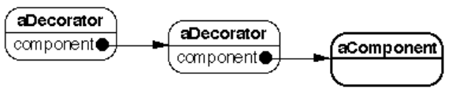
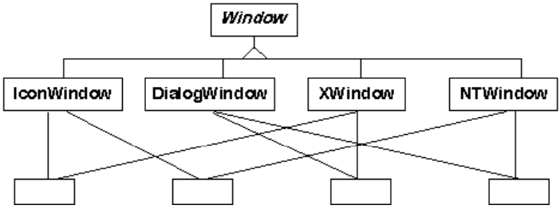

Design Patterns :
Voici le guide d'apprentissage : Design Patterns - Tête la première (PDF).
Voici le guide d'apprentissage : Design Patterns - Tête la première (PDF).
Un pattern est un ensemble d'information auquel on a donné un nom et qui capture la structure essentielle d'une solution générale prouvée à un problème récurrent qui se produit dans divers contextes. Cette solution est générale dans le sens qu'elle s'adapte à chaque contexte.
Le nom : grâce auquel on pourra en parler dans le design d'une application.
Le problème : qui décrit quand appliquer le pattern. Il explique le problème et le xontexte et souvent des conditions qui doivent être remplie pour appliquer le pattern.
La solution : décrit les éléments qui constitueront le design ainsi que leurs relations, responsabilités et collaborations. Un pattern étant une sorte de template, la solution ne décrit pas un design concret, une implémentation particulière mais un arrangement général d'objets et de classes qui résout le problème.
Les conséquences : sont les résultats et les compromis résultant de l'application du pattern. Elles servent à évaluer et choisir l'une ou l'autre alternative et à comprendre les coûts et les bénéfices de l'usage du pattern. Par exemple, compromis espace-temps, problème d'implémentation, de choix du langage, impact sur la flexibilité, l'extensibilité et la portabilité du système.
Un patterne est décrit par :
Son nom et sa classification, ainsi que ses alias (autres noms sous lequel il est connu).
Son but : courte phrase décrivant ce que fait le pattern.
Sa motivation : un exemple où ce pattern s'applique.
Son applicabilité : dans quelles situations applique-t-on le pattern ? Comment les reconnaître ?
Sa structure : réprésentation graphique (en OMT ou UML) des classes et/ou objets intervenants et éventuellement, diagrammes d'interactions illustrant la séquence des requêtes et la collaboration entre objets. Nous y inclurons la description des participants (les classes et/ou objets intervenant dans le pattern et leurs responsabilités) et de leurs collaborations.
Ses conséquences : résultats et compromis. Quel aspect du système pourra désormais varier indépendamment ?
Ses problèmes d'implémentation : indications, techniques, pièges à éviter, problèmes spécifiques au langage choisi, mais aussi description de variantes possibles.
Un exemple de code : en C++ ou Java.
Les patterns associés : avec quel autre pattern risque-t-on de rencontrer celui-ci ? En quoi diffère-t-il de tel autre ?
Les patterns sont classifiés selon deux critères : leur intention et leur portée.
L'intention peut être :
créationelle : lié à la cration d'objets.
structurelle : lié à la composition de classes ou d'objets.
comportementale : caractérisant la manière dont les classes ou objets interagissent et se partagent les responsabilités.
La portée spécifie si le pattern s'applique à des classes ou des objets.
Les patterns de classes traitent de la relation entre classes et leurs sous-classes via l'héritage. Ils représentent donc une relation statique, fixée à la compilation.
Les patterns d'objets traitent de la relation entre objets qui peut être changée dynamiquement à l'exécution. Ils utiseront l'héritage, certes, mais surtout la composition et la délégation.
Factory Method (méthode Usine)
Abstract Factory (Usine abstraite)
Builder
Prototype
Singleton
Adapter (Adapteur)
Adapter (Adapteur)
Bridge
Composite
Decorator (Décorateur)
Facade (Façade)
Flyweight (Poids Mouche)
Proxy
Interpreter (Interprète)
Template Method (Méthode Template)
Command (Commande)
Iterator (Itérateur)
Mediator (Médiateur)
Memento (Mémento)
Observer (Observateur)
State (État)
Strategy (Stratégie)
Visitor (Visiteur)
Une classe définit l'implémentation d'un objet : son état interne et l'implémentation de ses méthodes.
Le type d'un objet, par contre se réfère seulement à son interface : l'ensemble des requêtes auxquelles il répond.
En héritant de plusieurs interfaces, un objet pourra avoir plusieurs types. Des objets de classes différentes peuvent avoir le même type si leurs classes implémentent toutes une même interface.
Dans l'héritage de classe, un objet hérite non seulement du type mais aussi de l'implémentation : c'est un mécanisme de partage de la structure et du code. C'est une manière facile d'obtenir une implémentation d'un nouvel objet en réutilisant celle d'un ancien.
L'héritage d'une interface indique quand un objet peut être utilisé à la place d'un autre. C'est la base même du polymorphisme.
En C++, l'héritahe d'une interface ne peut se faire qu'en héritant d'une classe abstraite sans membres et dont toutes les fonctions membres sont abstraites. L'héritage de classe en tant qu'héritage d'implémentation seule peut être réalisé approximativement par l'héritage privé.
En manipulant des objets uniquement en fonction d'une interface, les clients ne connaissent pas les types spécifiques des objets utilisés ni les classes qui implémentent ces objets.
Bien sûr on ne peut pas se contenter d'utiliser des interfaces. Il faudra instancier des classes concrètes à un moment donné. En utilisant un pattern créationnel, on pourra abstraire le processus de création et associer de façon transparente une interface à son implémentation. Ces patterns font donc en sorte de programmer en fonction d'une interface.
L'héritage et la composition permettent tous deux la réutilisation.
La réutilisation obtenue par héritage est dite réutilisation par boîte blanche puisque la classe dérivée a accès à la structure interne de la classe de base.
La composition d'objet (des références à des objets sont membres d'une classe) conduit à une réutilisation en boîte noire puisque la structure interne des objets n'est pas connue de la classe composée.
est statique,
est supporté par le langage, et donc facile à réaliser,
permet la modification de l'implémentation,
ne permet pas de modifier l'implémentation dont on hérite à l'exécution,
brise l'encapsulation en exposant la structure interne de la classe de base,
oblige souvent à modifier la sous-classe en cas de modification de la classe parent,
rend difficile la réutilisation de la classe dérivée (s'il faut légèrement la modifier, il faudra aussi modifier la classe parent).
est dynamique (les références sont acquises à l'exécution),
requiert un design soigné des interfaces auxquelles doivent se conformer les objets intervenant dans la composition,
respecte l'encapsulation
permet le remplacement d'un objet par un autre à l'exécution, modifiant ainsi l'implémentation dynamiquement,
permet de concentrer chaque classe sur une seule tâche,
permet de garder petites les hiérarchies de classes (moins de classes mais plus d'objets).
C'est une composition dan slaquelle la classe composée implémente les interfaces des objets qui la composent. Ces méthodes se contentent en réalité d'appeler la méthode correspondant sur l'objet membre.
Ainsi une classe Window pourrait en cas d'héritage, dériver d'une classe Rectangle qui contient une méthode surface(). Dans ce cas Window hérite de la méthode surface(). On dit qu'une Window est un Rectangle.
Par contre, en délégation, on définira la classe Window comme ayant (une référence à) un objet Rectangle comme membre. La classe Window implémentera elle-même la méthode surface() qui appellera celle de Rectangle : rect->surface();.
La délégation montre qu'on peut toujours remplacer l'héritage par un mécanisme de composition.
Pour maximiser la réutilisation du code, il faut prévoir les nouvelles exigences qui peuvent survenir et les changements aux exigences actuelles, puis réaliser un design tel que le système puisse évoluer de la manière prévue.
L'utilisation de design patterns appropriés permettra cette évolution. Voici une liste de motifs de redesign et les patterns à employer pour éviter la catastrophe :
Créer un objet en spécifiant sa classe :Créer les objets de manière indirecte. Utiliser Abstract Factory, Factory Method ou Prototype.
Dépendance d'opérations spécifiques : Éviter de hard-coder les requêtes. Utiliser Chain of Responsability ou Command.
Dépendance de la plate-forme hardware ou software : Pour faciliter le portage : Utiliser Abstract Factory ou Bridge.
Dépendance de l'implémentation, de la représentation d'un objet : Cacher l'information : Utiliser Abstract Factory, Bridge, Memento ou Proxy.
Dépendance d'un algorithme : Isoler l'algorithme. Utiliser Builder, Iterator, Strategy, Template Method ou Visitor.
Couplage serré : Empêche la réutilisation séparée. Utiliser Abstract Factory, Bridge, Chain of Responsibility, Command, Facade, Mediator ou Observer.
Étendre les fonctionnalités par héritage : Connaissance du parent, overhead, explosion de classes sont des problèmes. La composition, la délégation peuvent y remédier. La solution est souvent un mélange des deux on compose dans une sous-classe. Utiliser Bridge, Chain of Responsibility, Composite, Decorator, Observer ou Strategy.
Impossibilité de modifier une classe de manière appropriée : On n'a pas la source ou cela entraîne des modifications dans trop d'autres classes. Utiliser : Adapter, Decorator ou Visitor.
| Abstract Factory | Familles d'objets |
| Builder | La manière de créer un objet complexe |
| Factory Method | La sous-classe de l'objet à instancier |
| Prototype | La classe de l'objet à instancier |
| Singleton | La seule instance de la classe |
| Adapter | L'interface d'un objet |
| Bridge | L'implémentation d'un objet |
| Composite | La structure et la composition d'un objet |
| Decorator | Les responsabilités d'un objet (sans définir de sous-classes) |
| Facade | L'interface d'un sous-système |
| Flyweight | Le coût de stockage des objets |
| Proxy | La manière d'accéder à un objet; son emplacement |
| Chain of Responsibility | L'objet qui traite la requête |
| Command | Quand et comment on traite une requête |
| Interpreter | La grammaire et l'interprétation d'un langage |
| Iterator | Comment les éléments d'un agrégat sont traversés |
| Mediator | Quels objets interagissent et comment |
| Memento | Quelle information privée est stockée hors de l'objet et quand |
| Observer | Le nombre d'objet dépendant d'un autre objet; comment les objets dépendants restent à jour |
| State | Les états d'un objet |
| Strategy | Un algorithme |
| Template Method | Les étapes d'un algorithme |
| Visitor | Les opérations à appliquer à un objet (sans changer leur classe) |
Se rappeler comment les design pattens résolvent des problèmes de design.
Relire les buts de chaque pattern.
Étudier les relations entre patterns.
Étudier les patterns d'intention semblable (créationnels, structurels, comportementaux).
Examiner les causes de changements.
Prendre en considération ce qui peut varier.
Lire le pattern de bout en bout.
Réétudier la structure, les participants et leurs collaborations.
Regarder l'exemple de code pour s'en inspirer.
Choisir les noms des participants en fonction de l'application et du pattern.
Définir les classes et modifier les classes existantes qui seraient affectées.
Définir des noms propres à l'application pour les méthodes du pattern.
Implémenter les méthodes en tenant compte des suggestions de la section Implémentation.
Virtual Constructor (Constructeur Virtuel)
Créationnel Classe
Un framework d'applications qui peut gérer plusieurs documents, contient deux classes abstraites : Application et Document. Pour créer une application, on définira une sous-classe de chacun d'elles. Par exemple, pour un éditeur de texte, on définira ApplicationEditeur et DocumentTexte, pour une application de dessin, ApplicationDessin et DocumentDessin. La classe abstraite Application prévoira une méthode creerDocument() qui sera surdéfinie dans sa sous-classe afin de créer un document de la classe appropriée.
On utilise Factory Method quand :
une classe ne peut connaître à l'avance le type d'objets à créer.
une classe désire que ce soit ses sous-classes qui spécifient les objets à créer.
des classes délèguent une partie de leurs responsabilités à d'autres classes (classes aidantes) et que vous voulez que la connaissance de qui est la classe aidante soit locale à la classe qui délègue.
Les participants sont donc :
Produit (Document, Room, Door, ...) : définit l'interface des objets à créer.
ProduitConcret (DocumentDessin, EnchantedRoom, ...) : implémente cette interface.
Createur (Application, MazeGame) : déclare les Factory Methods quirenvoient un Produit. Peut définir une implémentation par défaut. Il peut appeler Les Factory Methods pour créer des objets.
CreateurConcret (ApplicationEditeur, BombedMazeGame, ...) : rédéfinit les Factory Methods pour renvoyer une instance d'un ProduitConcret.
Avantage : élimine le besoin de lier des classes propres à l'application dans votre code.
Désavantage : on est obligé de définir une sous-classe pour redéfinir une Factory Method. A ne faire que si on doit de toutes façons définir cette sous-classe.
Une Factory Method augmente la flexibilité en donnant la possibilité à une sous-classe de créer une version étendue de l'objet désiré.
Les Factory Methods peuvent être appelées dans les clients et pas seulement dans le Créateur. C'est particulièrement utile pour connecter des hiérarchies parallèles. On les rencontre quand des classes délèguent certaines de leurs responsabilités à des classes aidantes (helper class).
Les points suivants seront à prendre en considération :
Deux variantes :
Le Créateur est une classe abstraite.
Le Créateur est une classe concrète qui définit une implémentation par défaut pour la Factory Method.
L'utilisation de Factory Methods paramétrées : Dans ce cas la Factory Method créera plusieurs sortes de produits, un paramètre indiquant laquelle. De manière à pouvoir renvoyer l'objet créé, tous les produits devront implémenter l'interface Produit. La forme générale en est la suivante :
class Creator {
public:
virtual Product * create(ProductId);
};
Product * Creator::create(ProductId id) {
if (id == ME) return new MyProduct;
if (id == YOU) return new YourProduct;
...
return 0;
}La rédéfinition d'une telle méthode permettra d'utiliser des ids existants pour créer des produits différents mais aussi d'étendre la liste des ids.
class MyCreator {
public:
virtual Product * create(ProductId);
};
Product * MyCreator::create(ProductId id) {
if (id == ME) return new YourProduct;
if (id == YOU) return new MyProduct;
// rôle de ME et YOU inversé
if (id == HER) return HerProduct;
return Creator::create(id);
// appel du parent dans les autres cas
}L'utilisation de templates pour éviter de définir des sous-classes. Ceci n'est possible que si le langage le permet (C++ oui, Java non avant la version 1.5).
class Creator {
public:
virtual Product * create();
};
template <class TheProduct>
class StandardCreator: public Creator {
public:
virtual Product * create();
};
template <class TheProduct>
Product * StandardCreator<TheProduct>::create() {
public:
MyProduct();
...
};
template class StandardCreator<MyProduct> MyCreator;Respecter les conventions de noms de manière à rappeler par le nom de la méthode qu'il s'agit d'une factory method. Exemple : create(), createProduct(), doMakeProduct() ...
Attention, l'exemple qui suit n'est qu'un exemple destiné à vous aider à comprendre l'utilité de ce pattern. Il n'est en rien une méthode à suivre pour créer un véritable jeu de labyrinthe. En effet, dans un tel jeu, on cherchera à varier le type de pièce et non, comme ci-dessous, à créer des pièces toutes d'un même type.
Voici les classes et sous-classes Clients de l'application MazeGame :
Et celles de l'application :
class MazeGame {
public Maze createMaze() {
Maze aMaze = new Maze();
Room r1 = new Room(1);
Room r2 = new Room(2);
Door theDoor = new Door(r1, r2);
aMaze.addRoom(r1);
aMaze.addRoom(r2);
r1.setSide(North, new Wall());
r1.setSide(East, theDoor);
r1.setSide(South, new Wall());
r1.setSide(West, new Wall());
r2.setSide(North, new Wall());
r2.setSide(East, new Wall());
r2.setSide(South, new Wall());
r2.setSide(West, theDoor);
return aMaze;
}
}
class BombedMazeGame extends MazeGame {
public Maze createMaze() {
Maze aMaze = new Maze();
Room r1 = new RoomWithABomb(1);
Room r2 = new Room>ithABomb(2);
Door theDoor = new Door(r1, r2);
aMaze.addRoom(r1);
aMaze.addRoom(r2);
r1.setSide(North, new Wall());
r1.setSide(East, theDoor);
r1.setSide(South, new Wall());
r1.setSide(West, new Wall());
etc.
À rejeter. Il faut tout réécrire (en utilisant le cut and paste).
class MazeGame {
public Maze makeMaze() { return new Maze(); }
public Room makeRoom(int n) { return new Room(n); }
public Wall makeWall() { return new Wall(); }
public Door makeDoor(Room r1, Room r2) { return new Door(r1, r2); }
public Maze createMaze() {
Maze aMaze = makeMaze();
Room r1 = makeRoom(1);
Room r2 = makeRoom(2);
Door theDoor = makeDoor(r1, r2);
aMaze.addRoom(r1);
aMaze.addRoom(r2);
r1.setSide(North, makeWall());
r1.setSide(East, theDoor);
r1.setSide(South, makeWall());
r1.setSide(West, makeWall());
r2.setSide(North, makeWall());
r2.setSide(East, makeWall());
r2.setSide(South, makeWall());
r2.setSide(West, theDoor);
return aMaze;
}
}
class BombedMazeGame extends MazeGame {
public Room makeRoom(int n) {
return new RoomWithABomb(n);
}
public Wall makeWall() {
return new BombedWall();
}
}class Room extends MapSite {
public Room makeRoom() { return new Room(); }
etc.
}
class RoomWithBomb extends Room {
public Room makeRoom() { return new RoomWithBomb(); }
etc.
}
etc.
class MazeGame {
public Room roomMaker;
etc.
public MazeGame(Room rfactory) {
roomMaker = rfactory;
}
public Maze createMaze() {
Maze aMaze = new Maze();
Room r1 = roomMaker.makeRoom(1);
etc.
}
}Policy
Définir en les encapsulant, une famille d'algorithmes interchangeables. Laisser les algorithmes varier indépendamment des clients qui les utilisent.
Dans le design d'un éditeur de texte, il y a beaucoup de manières d'organiser le flux de texte en lignes. Inclure l'algorithme dans la classe qui en a besoin :
rend le client trop grand et difficile à maintenir surtout s'il y a plusieurs algorithmes,
ne permet pas de n'instancier que les algorithmes utilisés,
rend difficile l'ajout ou la modification d'algorithmes.
On définira des classes qui encapsulent chacune un algorithme.
Ce pattern sera utilisé si :
un grand nombre de classes diffèrent seulement par leur comportement. Le pattern permettra de ne configurer qu'une seule classe liée à plusieurs classes de comportement (stratégies).
vous utilisez plusieurs variantes d'un algorithme, de manière, par exemple, à tenir en considération différents compromis espace-temps
un algorithme utilise des données propres que le client devrait ignorer,
une classe définit plusieurs comportements qui apparaissent dans des instructions conditionnelles multiples (ifs ou switch.
Les participants sont donc :
Stratégie : déclare une interface commune à tous les algorithmes. Le Contexte utilise cette interface pour appeler l'algorithme défini par Une StratégieConcrète.
StratégieConcrète : implémente l'algorithme en respectant l'interface Stratégie.
Contexte : est configuré avec une StratégieConcrète et maintient une référence à cet objet. Il pourra définie une interface propre à laisser la Stratégie accéder à ses données internes.
Ils collaboreront de la manière suivante :
La Stratégie et le Contexte interagissent pour implémenter l'algorithme choisi. Le Contexte pourra passer à la StratégieConcrète toutes les données que celle-ci a besoin ou au contraire passer à la StratégieConcrète une référence à lui-même qui permettra à celle-ci d'obtenir du contexte, les données nécessaires, le moment voulu.
Le contexte transmettra à la StratégieConcrète, les requêtes des Clients la concernant. Un Client créera une StratégieConcrète et la passe au Contexte. Après cela, le Client n'interagit plus qu'avec le Contexte.
Avantages :
Définit une famille d'algorithmes prêts à être réutilisés.
Présente une alternative au fait de définir des sous-classes. On utilise Strategy plutt que de dériver des sous-classes du Contexte. Cette méthode de faire aurait hard-codé l'algorithme dans les sous-classes du Contexte, le rendant plus difficile à comprendre et à maintenir. De plus, on ne pourrait pas changer d'algorithme dynamiquement.
Élimine les instructions conditionnelles.
Offre un choix d'implémentations différentes d'un même comportement.
Désavantages :
Les clients doivent savoir en quoi les diverses stratégies varient, pour pouvoir en choisir la version appropriée.
Le pattern impose un overhead de communication entre Contexte et Stratégie. Des stratégies concrètes simples pourraient ne pas employer (tous) les paramètres passés. Si ce point est critique, il faudra plutôt coupler fortement Contexte et Stratégie.
Le pattern implique la création d'un plus grand nombre d'objets. Ce désavantage peut être minimisé si les stratégies n'ont pas de données internes (ou peu). Le pattern Flyweight montre comment ceci peut se faire.
On prendra en considération les points suivants, lors de l'implémentation du pattern.
La définition des interfaces Contexte et Stratégie devra permettre à une StratégieConcrète, un accès efficace aux données utiles provenant du contexte et inversement.
Première approche : le Contexte passe des données en paramètres aux opérations de la Stratégie. Avantage : les deux classes restent découplées. Désavantage : des données inutiles peuvent être passées.
Deuxième approche : Le contexte passe en argument une référence à lui-même et c'est la StratégieConcrète qui requiert les données nécessaires en appelant les méthodes du Contexte. Ou encore, la Stratégie garde une référence à son Contexte, auquel cas, rien ne doit être passé. Avantage : La stratégie Concrète ne requiert que ce qu'elle a besoin. Désavantage : le Contexte doit avoir une interface plus élaborée pour permettre à la StratégieConcrète d'obtenir ces renseignements, ce qui couple davantage les deux classes.
L'utilisation du template : en C++, des templates peuvent être utilisés pour configurer une classe avec une stratégie :
template <class AStrategy>
class Context {
void Operation() { theStrategy.doAlgorithm(); }
// ...
private:
AStrategy theStrategy;
};
class MyStrategy {
public:
void doAlgorithm();
};
template class Context<MyStrategy> MyContext;Cette technique ne sera utilisée que si :
la stratégie peut être choisie dès la compilation,
elle ne doit pas être modifiée à l'exécution.
Dans ce cas il n'y a pas d'interface Stratégie, et, comme la liaison entre Contexte et Stratégie est statique, l'efficacité s'en trouvera améliorée.
Rendre les objets Stratégie optionnels : Le Contexte pourrait implémenter un algorithme simple, par défaut et tester s'il possède une référence à un objet Stratégie. S'il y en a un, il y fait appel; sinon il utilise le comportement par défaut. L'avantage pour les Clients est de ne pas utiliser d'objets Stratégie sauf s'ils ne sont pas satisfaits du comportement par défaut.
Le Contexte est :
public class SortedList {
public SortedList(Sort theSort) {
_sort = theSort;
}
public void add(String s) {
_theData[_nombreElements++] = s;
_sort.sort(_theData);
}
public void print() {
int i;
for (i = 0; i < _nombreElements; i++)
System.out.println(_theData[i]);
}
private String[] _theData = new String[100];
private int _nombreElements = 0;
private Sort _sort;
}La Stratégie :
public interface Sort {
public void sort(String[] data);
}Une StratégieConcrète :
public class ShellSort implements Sort {
public void sort(String[] data) {
// code removed
}
}Le client pourra faire :
public class SortClient {
public static void main(String[] args) {
SortedList students = new SortedList(new ShellSort());
students.add("michel");
students.add("pierre");
students.add("paul");
students.add("jacques");
students.print();
}
}Nous avons indiqué les changements en gras.
Le Contexte est :
public class SortedList {
public SortedList(Sort theSort) {
_sort = theSort;
}
public void add(String s) {
_theData[_nombreElements++] = s;
_sort.sort(this);
}
String[] getData() { return _theData; }
public void print() {
int i;
for (i = 0; i < _nombreElements; i++)
System.out.println(_theData[i]);
}
private String[] _theData = new String[100];
private int _nombreElements = 0;
private Sort _sort;
}La Stratégie :
public interface Sort {
public void sort(SortedList lst);
}Une StratégieConcrète :
public class ShellSort implements Sort {
public void sort(SortedList lst) {
String[] table = lst.getData();
// code removed
}
}Le client pourra faire :
public class SortClient {
public static void main(String[] args) {
SortedList students = new SortedList(new ShellSort());
students.add("michel");
students.add("pierre");
students.add("paul");
students.add("jacques");
students.print();
}
}Wrapper
Structurel Objet
Considérons une zone de texte (TextView). Elle peut avoir un ascenseur de côté, un ascenseur en bas, un bord 2D (Flat), un bord 3D, une combinaison des précédents ou rien du tout.
Ceci conduit, par héritage à créer 12 classes :
TextView
TextViewWithSideScrollbar
TextViewWithBottomScrollbar
TextViewWithSideAndBottomScrollbar
TextViewWithFlatBorder
TextViewWithFlatBorderAndSideScrollbar
TextViewWithFlatBorderAndBottomScrollbar
TextViewWithFlatBorderAndSideAndBottomScrollbar
TextViewWith3DBorder
TextViewWith3DBorderAndSideScrollbar
TextViewWith3DBorderAndBottomScrollbar
TextViewWith3DBorderAndSideAndBottomScrollbarPour éviter cette explosion de classe, on peut, dans une première approche, utiliser la composition :
public class TextView {
Border myBorder;
Scrollbar verticalBar;
Scrollbar horizontalBar;
public void draw() {
myBorder.draw();
verticalBar.draw();
horizontalBar.draw();
// code to draw itself
}
...
}La classe Border pourra être une simple interface. La classe NoBorder implémentera draw() comme une fonction ne faisant rien :
public class NoBorder implements Border {
public void draw() { }
}Pour la classe Scrollbar, c'est une autre approche qui est présentée : La classe Scrollbar est une classe concrète qui implémenter draw() comme ne faisant rien. Ses sous-classes redéfiniront donc cette méthode.
Cette façon de procéder évite l'explosion de classes mais TextView doit être averti de toute modification. De plus si on désire introduire d'autres types d'ornements, il faut modifier la classe TextView.
La deuxième approche consiste à utilser des Décorateurs :
Au niveau d'un diagramme d'objets on aura :
Dans cette solution, on ne parle pas de Border ni de Scrollbar dans TextView. Si on ajoute d'autres types d'ornements, TextView ne doit pas être modifié.
Chaque VisualDecorator aura un constructeur avec un paramètre de type VisualComponent. Cela permettra d'emboîter les décorations.
Le diagramme d'objet ci-dessus s'obtiendra par :
VisualComponent zone = new 3DBorder(new VerticalScrollbar(new TextView()));La méthode draw() sera abstraite dans VisualComponent qui pourra ne définir qu'une interface définissant les méthodes de dessin et de gestion des événments.
Dans VisualDecorator, draw() appellera la méthode draw() de sa component :
public void draw() {
component.draw();
}Chaque décorateur concret fera appel à la méthode draw() de son parent avant de se dessiner lui-même :
Par exemple dans border on aura :
public void draw() {
super.draw();
drawBorder();
}Chaque sous-classe de Border redéfinira la méthode drawBorder().
On utilise Decorator :
pour ajouter des responsabilités à des objets de manière dynamique et transparente et donc sans affecter d'autres objets.
Pour des responsabilités qui doivent pouvoir être retirées.
Quand l'héritage est impraticable parce que donnant lieu à une explosion de classes ou parce que la définition de la classe est cachée ou indisponible pour définir des sous-classes (exemple : final en Java, une méthode qu'on voudrait virtuelle ne l'est pas, en C++, ...).
Et au niveau Objets :
Les participants sont donc :
Component : (VisualComponent) définit l'interface pour les objets à qui on peut ajouter des responsabilités dynamiquement.
ConcreteComponent : (TextView) définit un objet auquel de nouvelles responsabilités pourront être attachées.
Decorator : (VisualDecorator) maintient une référence à un objet de type Component et définit une interface conforme à l'interface Component.
ConcreteDecorator : (FlatBorder, 3DBorder, HorizontalScrollbar, ...) ajoute des responsabilités à sa Component.
Ils collaborent de la manière suivante :
Le Decorator transmet les requêtes à sa Component. Éventuellement, avant et après cette transmission, il effectue d'autres opérations.
Avantages :
Plus de flexibilité qu'avec l'héritage qui est statique. Celui-ci donne lieu à une explosion de classes et rend le système plus complexe. À l'aide de divers Decorator, on pourra facilement mixer les responsabilités. Une propriété pourra même être donnée deux fois, par exemple un double bord.
Évite de devoir prévoir toutes les responsabilités possibles à ajouter, tôt dans la hiérarchie des classes. Plutôt que d'avoir une classe immense prévoyant tout, on aura une classe simple et on y ajoutera des responsabilités à l'aide de Decorator simple eux aussi. Ainsi une application ne devra pas gérer des responsabilités dont elle n'a pas besoin.
Permet de définir facilement de nouvelles responsabilités en ajoutant de nouveaux Decorator et ce indépendamment de la classe décorée.
Désavantages :
Un Decorator et sa Component ne sont pas identiques. L'utilisation d'un Decorator ajouté dynamiquement ne permet plus de tester si un objet est idnetique à l'objet de départ puisque cet objet une fois décoré n'est plus le même objet.
Ce pattern donne lieu à une multitude de petits objets qui ne diffèrent que par la manière dont ils sont connectés. Ceci peut conduire à des difficultés pour comprendre et débugger le système.
Les points suivant seront à prendre en considération :
La conformance à l'interface : Un objet Decorator doit avoir une interface conforme à celle de la Component qu'il décore.
La classe abstraite Decorator peut parfois être omise. C'est le cas si on ne doit ajouter qu'une seule responsabilité.
Garder la classe Component légère. Elle doit surtout définir une interface commune aux composantes et aux décorateurs et non stocker de l'information. Sinon, les décorateurs seront trop lourds. Il ne faut pas mettre un grand nombre de fonctionnalités dans une Component sinon tous les objets en hériteront même s'ils n'en ont pas besoin.
Un Decorator change la peau d'un objet pas ses tripes. Une autre possibilité de modifier un comportement est de changer les tripes de l'objet. Ceci se fait avec le pattern Strategy. On préférera ce dernier pattern si la classe Component est d'office lourde. (Notre version 1 de la motivation est en fait une utilisation de Strategy). Dans ce cas l'objet devra connaître les extensions possibles (comme nous l'avons fait remarquer dans cette version). L'avantage de Strategy dans le cas d'une Component lourde est que les stratégies peuvent être légères.
Montrons comment implémenter l'exemple de la motivation en C++.
class VisualComponent {
VisualComponent();
virtual void draw();
virtual void resize();
// ...
};La classe TextView sera une sous-classe de la précédente.
class VisualDecorator : public VisualComponent
public:
VisualDecorator(VisualComponent * component) {
_component = component;
}
virtual void draw();
virtual void resize();
// ...
private:
VisualComponent * _component;
};
void VisualDecorator::draw() {
_component->draw();
}
void VisualDecorator::resize() {
_component->resize();
}
class Border : public VisualDecorator {
public:
Border(VisualComponent * component, int borderWidth) : VisualDecorator(component) {
_width = borderWidth;
}
virtual void draw();
protected:
virtual void drawBorder (int)=0;
private:
int _with;
};
void Border::draw() {
VisualDecorator::draw();
drawBorder(_width);
}Les sous-classes de Border rédéfiniront drawBorder(int) de manière appropriée.
On pourra alors faire :
VisualComponent * monTexte = new TextView;Puis plus tard, quand le besoin s'en fait sentir :
MonTexte = new FlatBorder(new VerticalScrollbar(monTexte, 1));Les classes d'I/O en Java sont en réalité des classes Decorator :
import java.io.*;
import sdsu.io.ASCIIInputStream;
class readingFileExample {
public static void main(String[] args) throws Exception {
FileInputStream inputFile;
BufferedInputStream bufferedFile;
ASCIIInputStream cin;
inputFile = new FileInputStream("ReadingFileExample.java");
bufferedFile = new BufferedInputStream(inputFile);
cin = new ASCIIInputStream(bufferedFile);
System.out.println(cin.readWord());
for(int k = 1; k < 4; k++)
System.out.println(cin.readLine());
}
}Strategy est, comme on l'a vu, une alternative pour modifier le comportement d'un objet. Il en change les tripes au lieu de la peau.
Structurel Objet
Composer des objets en une structure arborescente afin de représenter des hiérarchies partie - tout. Composite permet aux Clients de traiter uniformément les objets individuels et les compositions de ces objets.
Considérons un système de fenêtrage. Le problème à résoudre est de gérer les éléments contenus dans la fenêtre. Certains sont des éléments simples : boutons, zone de texte, ... d'autres des conteneurs : panels, canvas, ...
Nous allons considérer trois approches différentes, partant d'une approche naïve et peu flexible pour arriver à un design conforme au pattern Composite.
class Window {
Buttons[] myButtons;
Menus[] myMenus;
TextAreas[] myTextAreas;
WidgetContrainer[] myContainers;
public void update() {
if (myButtons != null)
for (int k = 0; k < myButtons.length; k++)
myButtons[k].refresh();
if (myMenus != null)
for (int k = 0; k < myMenus.length; k++)
myMenus[k].display();
if (myTextAreas != null)
for (int k = 0; k < myTextAreas.length; k++)
myTextAreas[k].refresh();
if (myContainers != null)
for (int k = 0; k < myContainers.length; k++)
myContainers[k].updateElements();
etc.
}
public void fooOperation() {
if (blah) etc.
if (blah) etc.
}
}class Window {
GUIWidgets[] myWidgets;
WidgetContainer[] myContainers;
public void update() {
if (myWidgets != null)
for (int k = 0; k < myWidgets.length; k++)
myWidgets[k].update();
if (myContainers != null)
for (int k = 0; k < myContainers.length; k++)
myContainers[k].updateElements();
etc.
}
}Dans cette approche :
Component implémente des versions par défaut des opérations (update(), ...).
Button, Menu, TextArea redéfinissent les opérations en questions selon leurs besoins.
WidgetContainer devra redéfinir toutes les méthodes de Component et définira des opérations propres pour gérer l'ajout, la suppression de composants.
class WidgetContainer {
Component[] myComponents;
public void update() {
if (myComponents != null)
for (int k = 0; k < myComponents.length; k++)
myComponents[k].update();
}
}On utilise Composite quand :
on désire représenter des hiérarchies parties - tout.
on veut que les clients ignorent la différence entre une composition d'objet et un objet individuel.
Ce qui donne le diagramme d'objet :
Les participants sont donc :
Component :
déclare l'interface des objets de la composition.
implémente un comportement par défaut pour les méthodes de cette interface.
déclare une interface d'accès et de gestion des composantes enfants.
éventuellement déclare et implémente une interface d'accès à la composite parent.
Leaf :
représente les objets individuels de la composition. Ceux-ci n'ont pas d'enfants.
définit le comportement de ces objets individuels.
Composite :
définit le comportement des objets composés, ceux qui ont des fils dans la hiérarchie.
implémente les méthodes relatives aux enfants déclarées dans Component.
stocke les composantes enfants.
Client :
manipule les objets de la composition via l'interface de Component.
Les collaborations entre objets se feront comme suit :
Les Clients utilisent l'interface de Component pour interagir avec les objets de la structure composite. Pour une feuille (Leaf), les requêtes seront traitées directement. Pour un objet Composite, les requêtes seront généralement transmises aux composantes enfants, en y ajoutant peut-être un comportement propre au Composite.
Le pattern Composite :
définit des hiérarchies de classes permettant de composer des objets primitifs en objets complexes qui peuvent à leur tour être composés et ainsi de suite.
rend les Clients simples, car les objets individuels et les objets composites, étant interchangeables, seront traités uniformément.
rend facile l'ajout de nouvelles composantes. Il suffit de définir de nouvelles classes de feuilles (Leaf) ou de Composite.
Oblige à tester nous même, à l'exécution, le type réel des composantes, si nous ne voulons pas permettre que des composantes de tous types soient rajoutées.
Les points suivants seront à prendre en considération :
Les références explicites au parent : cela simplifie la traversée de la hiérarchie et permet la suppression de composantes de manière aisée. Cela permettra également d'employer le pattern Chain of Responsibility, si cela s'avère utile.
La référence au parent sera définie dans la classe Component, ainsi que les opérations la gérant.
Dans le code, il faudra faire en sorte que le parent d'une composante a bien cette composante comme enfant. Ceci se fera en ne modifiant la référence au parent que dans les méthodes add() et remove() de la classe Composite.
Le partage des composantes, en vue de limiter les besoins en espace. Si une composante ne peut avoir qu'un seul parent, c'est difficile à réaliser et permettre plusieurs parents à une composante conduit à pas mal d'ambiguïté. La seule manière d'opérer sera d'employer le pattern Flyweight.
Maximiser l'interface Component. Cette classe doit, pour rendre tous les objets interchangeables, déclarer le plus de méthodes communes possibles. Component définira une implémentation par défaut pour chacune d'elles. Les feuilles et objets composites redéfiront celles dont ils ont besoin. Par exemple, une méthode listeDesEnfants() aura pour comportement par défaut dans Component de renvoyer une liste vide. Ainsi les feuilles pourront se contenter d'hériter de ce comportement tandis que les objets composites le redéfiniront.
Déclarer les opérations de gestion des enfants. Ces opérations seront implémentées dans la classe Composite. Mais où faut-il les déclarer ?
Dans Component : augmente la transparence. Les feuilles et les composites seront traités uniformément par le Client. Mais un Client, ne sachant pas si l'objet est un composite ou non, pourrait essayer d'ajouter des composantes à une feuille.
Dans Composite : augmente la sécurité au détriment de la transparence.
Une approche permettant en C++ de tout déclarer dans Component, est de définir une méthode getComposite() dans Component. Par défaut, elle renverra un pointeur nul. La classe Composite redéfinira cette méthode pour renvoyer un pointeur sur lui-même (this). Ceci permettra de tester si l'objet est un Composite et d'utiliser le Composite renvoyé pour appeler les méthodes add() ou remove(). Mais la transparence n'est pas complète puisqu'il faut tester si l'objet est ou non un Composite.
Une autre approche est de définir un add() et un remove() par défaut dans Component. En faire par défaut des méthodes ne faisant rien est dangereux car, si le programme essaie d'ajouter ou de retirer une composante à une feuille, il est probable qu'il s'agit d'un bug ! Il est donc préférable de générer par défaut une erreur dans ces méthodes.
Le cas de remove() peut se résoudre autrement : Si la composante maintient une référence à son parent, on pourrait songer à donner une autre signification à remove() : se supprimer de la liste des enfants de son parent.
La liste des Composantes doit-elle être mise dans Component ? Ceci entraînerait une perte de place dans les feuilles (qui n'en ont pas besoin) et n'est donc envisageable que si le système comporte peu de feuilles.
L'ordre des enfants. Certaines applications imposeront un ordre sur les enfants, d'autres aucun. Pour permettre l'accès aux enfants dans l'ordre voulu, il est utile d'envisager le pattern Iterator.
Mise d'information en Cache. Si on traverse ou recherche fréquemment, cela peut être utile. Le Cache sera invalidé si la structure est modifiée (ajout ou suppression de composantes). Il faudra dès lors, définir une interface permettant à une Composite de savoir que son Cache est invalide.
Qui supprimera les composantes ? Sans Garbage Collection (C++), le Composite devra, lors de sa destruction, détruire ses composantes. La seule exception est quand les feuilles sont immuables et peuvent être partagées.
Quelle structure de données utiliser pour stocker les composantes ? Le choix dépendra de l'efficacité.
import java.util.Iterator;
import java.util.Vector;
public abstract class Component {
protected Component parent;
public Component getParent() {
return parent;
}
public void add(Component c) throws NotCompositeException {
throw new NotCompositeException();
}
public void remove(Component c) throws NotCompositeException {
throw new NotCompositeException();
}
public Iterator<Component> listeDesEnfants() {
return null;
}
public abstract void update();
}
class WidgetContainer extends Compnent {
private Vector<Component> myComponents;
public void update() {
if (myComponents != null) {
Iterator<Component> list = myComponents.iterator();
while(list.hasNext())
list.next().update();
}
}
public Iterator<Component> listeDesEnfants() {
return myComponents.iterator();
}
public void add(Component c) {
myComponents.addElement(c);
c.parent = this; // accessible : this == Component aussi !
}
public void remove(Component c) {
if (c.getParent() == this) {
myComponents.removeElement(c);
c.parent = null;
}
}
}Remarque : Comme on peut le constater dans le code, si on avait voulu implémenter l'opération remove() comme signifiant se supprimer de la liste des enfants de son parent, on aurait du déclarer la liste des enfants (myComponents) dans Component.
Souvent le lien vers le parent est utilisé pour créer une Chain of Responsibility.
Decorator est souvent employé avec Composite, en leur donnant une classe parent commune : Component, dont l'interface devra l'interface devra alors être implémentée par Decorator.
Flyweight pourra être employé pour partager les composantes, si on supprime le lien vers le parent.
Iterator sera utilisé pour parcourir un Composite.
Visitor permettra de localiser des opérations qui, sinon, seraient dispersées dans les diverses composantes.
Cursor
Comportemental Objet
Fournir un moyen d'accès séquentiel aux éléments d'un agrégat sans un divulguer la structure interne.
Une liste doit fournir un moyen d'accès à ses éléments sans révéler son implémentation. De plus, une liste peut être parcourue de différentes manières. On ne désire pas alourdir l'interface de la classe Liste afin de tenir compte de toutes les traversées utiles. Par ailleurs, il est parfois utile d'avoir plusieurs parcours simultanés de la même liste.
Ceci sera réalisé grâce au pattern Iterator. Les responsabilités d'accès et de parcours sont sorties de la classe Liste et placées dans une classe ListIterator. Cette classe définit une interface gardant trace de l'élément en cours. Une instance de la classe ListIterator sera construite en lui fournissant une Liste à traverser. Il implémentera des méthodes telles que first(), next(), isDone() et currentItem().
Le client soit que c'est une Liste qu'il traverse. Nous avons affaire à un Iterator concret.
Une autre approche permettrait de varier le type d'agrégat traversé. On parle d'Iterator polymorphe.
Le problème est alors de créer l'Iterator. Ce sera la Liste elle-même qui sera responsable de cette création en fournissant une méthode CreateIterator(). Cette méthode est un exemple de Factory Method.
On utilise Iterator :
pour accéder au contenu des objets d'un agrégat sans en divulguer la structure interne.
pour supporter des traversées multiples.
pour fournir une interface uniforme pour traverser des agrégats différents (Itérateurs polymorphes).
Les participants sont donc :
Iterator : définit une interface d'accès et de traversée.
ConcreteIterator : implémente l'interface précédente et garde trace de la position courante de la traversée.
Aggregate : définit une interface de création d'un objet Iterator.
ConcreteAggregate : implémente cette interface de création afin de renvoyer le ConcreteIterator approprié.
La collaboration entre les objets tient au fait que le ConcreteIterator tient en compte la position courante de la traversée et est capable de calculer la position suivante.
Avantages :
Supporte différentes traversées d'un même agrégat (exemple : préordre, inordre, ...). Il suffit de remplacer un Iterator par un autre et de sous-classer afin de définir une nouvelle manière de traverser.
Simplifie l'interface de l'Aggregate.
Permet la prise en compte de traversées simultanées d'un Aggregate.
Les points suivants seront à prendre en considération :
Qui contrôle l'itération ? Ce sera soit l'Iterator (itérateur interne, passif), soit le Client (itérateur externe, actif). Dans le deuxième cas, plus flexible, c'est le Client qui requiert l'élément suivant de manière explicite. Dans le premier cas, l'itération est effectuée en une seule requête à laquelle le Client passe une opération à effectuer sur tous les éléments. Si les itérateurs internes sont plus facile à utiliser, ils sont très faibles dans des langages comme C++.
Qui définit l'algorithme de la traversée ? Une place de choix est bien sûr l'Iterator. Mais ce n'est pas le seul endroit possible : l'Aggregate peut définir cet algorithme et utiliser l'Iterator pour stocker l'état de l'itération. Un tel Iterator est appelé un Cursor, car il se contente de pointer sur la position courante. On appelle alors la méthode next() sur l'Aggregate avec le Cursor comme argument. Ce sera l'opération next() qui modifiera le Cursor.
Placer l'algorithme dans l'Iterator permet d'utiliser plusieurs algorithmes d'itération, de réutiliser un même algorithme pour des agrégats différents. Mais si l'Iterator a besoin d'accéder à des champs privés de l'Aggregate, il y aura brise d'encapsulation.
À quel point l'Iterator est-il robuste ? Il peut être dangereux de modifier un agrégat pendant un parcours. Si des éléments sont ajoutés ou supprimés, on pourrait arriver à accéder deux fois ou pas du tout à un élément. Copier la structure et traverser la copie est une solution souvent trop chère. Un Iterator robuste permet les insertions et les suppressions pendant la traversée et ce sans devoir recopier l'agrégat. Pour implémenter un tel Iterator, ce dernier devra s'enregistrer aurpès de l'agrégat. Celui-ci, lors d'insertion ou de suppression, ajustera l'état interne de l'itérateur, ou maintiendra les informations nécessaires pour assurer une traversée correcte.
D'autres opérations dans l'Iterator. Parfois des opérations supplémentaires pourront être déclarées dans l'Iterator, telle que previous(), skip(), ...
L'utilisation d'iterateur plymorphe en C++. Le prix à payer pour l'utilisation d'itérateurs polymorphes est leur allocation dynamique par une Factory Method. On ne les utilisera dès lors, que lorsque ce côté polymorphe est indispensable. Un autre problème avec les itérateurs polymorphes est la nécessité pour le client de les détruire. Une solution pour ne pas oublier, est d'utiliser un Proxy alloué sur la pile qui supprimera le véritable Iterator dans son destructeur.
Les itérateurs peuvent avoir des accès privilégiés. En tant qu'extension de la classe Aggregate, la classe Iterator sera fortement couplée à la précédente. En C++ cela pourra se marquer en faisant de la classe Iterator une classe friend de la classe Aggregate. Ceci rend difficile l'ajout de nouvelles traversées puisqu'il faut modifier la classe Aggregate pour déclarer une nouvelle classe friend. On peut y remédier en définissant dans Iterator des méthodes protected d'accès à certaines données privées de l'Aggregate. Les sous-classes de Iterator et elles seules pourront ainsi avoir accès à ces méthodes et par elles aux données privées de l'Aggregate. Seule Iterator devra être déclarée friend de Aggregate.
Les Itérateurs d'objets Composites. Les itérateurs externes seront difficiles à implémenter vu le grand nombre de niveaux possibles. Dans ce cas on préférera souvent (hélas !) un itérateur interne. Un itérateur externe devrait stocker une sorte de chemin à travers l'objet Composite pour garder trace de l'objet courant. Si les noeuds du Composite ont une interface leur permettant de se déplacer vers leurs enfants, leur parent et leurs frères, une meilleure solution sera d'implémenter un Curseur. Un Composite a souvent besoin d'être traversé de diverses manières (préordre, inordre, postordre, breadth-first).
Itérateurs nuls. C'est un itérateur dégénéré qui a tout de suite terminé sa traversée (isDone() renvoie toujours true). Ils sont utiles pour traiter les conditions limites. Leur emploi rendra plus aisé le parcours d'agrégats de style Composites. À chaque point de la traversée, on demande à l'élément courant un itérateur pour ses enfants. Les feuilles renverront un itérateur nul afin d'implémenter la traversée de manière uniforme.
Les interdaces List et Iterator :
const int DEFAULT_LIST_CAPACITY = 100;
template <class Item> class Iterator;
template <class Item>
class List {
public:
List(long size = DEFAULT_LIST_CAPACITY);
Iterator<Item>* createIterator() const;
long count() const;
Item& get(long index) const;
// ...
};
template <class Item>
class Iterator {
public:
virtual void first() = 0;
virtual void next() = 0;
virtual bool isDone() const = 0;
virtual Item currentItem() const = 0;
protected:
Iterator();
};Implémentation de la sous-classe ListIterator :
template <class Item>
class ListIterator : public Iterator<Item> {
public:
ListIterator(const List<Item>* aList);
virtual void first();
virtual void next();
virtual bool isDone() const;
virtual Item currentItem() const;
private:
const List<Item>* _list;
long _current;
};
template <class Item>
ListIterator<Item>::ListIterator (const List<Item>* aList) : _list(aList), _current(0) {
}
template <class Item>
void ListIterator<Item>::first() {
_current = 0;
}
template <class Item>
void ListIterator<Item>::next() {
_current++;
}
template <class Item>
bool ListIterator<Item>::isDone() const {
return _current >= _list->Count();
}
template <class Item>
Item ListIterator<Item>::currentItem() const {
if (isDone()) {
throw IteratorOutOfBounds;
}
return _list->get(_current);
}L'implémentation de ReverseListIterator est similaire, si ce n'est que first() positionne _current à la fin de la liste (_list->count()) et que next() décrémente _current jusque 0. La méthode isDone() renverra vrai à ce moment.
template <class Item>
class ReverseListIterator : punlic Iterator<Item> {
public:
ReverseListIterator(const List<Item>* aList);
virtual void first();
virtual void next();
virtual bool isDone() const;
virtual Item currentItem() const;
};Utilisation :
class Employee {
// ...
public:
void print();
};
void printEmployees (Iterator<Employee*>& i) {
for (i.fist(); !i.isDone(); i.next()) {
i.currentItem()->print();
}
}Éviter de se lier à une implémentation spécifique :
template <class Item>
class SkipList : public List<Item> {
public:
};
template <class Item>
class SkipListIterator : public ListIterator<Item> {
public:
SkipListIterator(const List<Item>* aList);
void first();
void next();
bool isDone() const;
Item currentItem() const;
};
void dummy1() {
List<Emplyee*>* employees;
// ...
ListIterator<Employee*> forward(employees);
ReverseListIterator<Employee*> backward(employees);
printEmployees(forward);
printEmployees(backward);
}
void dummy2() {
SkipList<Employee*>* employees;
// ...
SkipListIterator<Employee*> iterator(employees);
printEmployees(iterator);
}On préférera utiliser une classe abstraite pour définir createIterator().
template <class Item>
class AbstractList {
public:
virtual Iterator<Item>* createIterator() const = 0;
// ...
};
template <class Item>
Iterator<Item>* List<Item>::createIterator() const {
return new ListIterator<Item>(this);
}
void dummy3() {
// we know only that we have an AbstractList
AbstractList<Employee*>* employees;
// ...
Iteator<Employee*>* iterator = employees->createIterator();
printEmployees(*iterator);
delete iterator;
}Faire en sorte que les itérateurs créés dynamiquement soient détruits :
On utilise un pointeur intelligent alloué sur la pile, qui se comporte comme un Proxy.
template <class Item>
class IteratorPtr {
public:
IteratorPtr(Iterator<Item>* i): _i(i) { }
~IteratorPtr() { delete _i; }
Iterator<Item>* operator->() { return _i; }
Iterator<Item>& operator*() { return *_i; }
private:
// disallow copy and assignment to avoid
// multiple deletions of _i:
IteratorPtr(const IteratorPtr&);
IteratorPtr& operator=(const IteratorPtr&);
private:
Iterator<Item>* _i;
};
void dummy4() {
AbstractList<Employee*>* employees;
// ...
IteratorPtr<Employee*> iterator(employees->createIterator());
printEmployees(*iterator);
}Utilisation d'un itérateur interne (écrit certes à l'aide d'un itérateur externe) :
template <class Item>
class ListTraverser {
public:
ListTraverser(List<Item>* aList);
bool traverse();
protected:
virtual bool processItem(const Item&) = 0;
private:
ListIterator<Item> _iterator;
};
template <class Item>
ListTraverser<Item>::ListTraverser(List<Item>* aList): _iterator(aList) { }
template <class Item>
bool ListTraverser<Item>::traverse() {
bool result = false;
for (_iterator.first(); !_iterator.isDone(); _iterator.next()) {
result = processItem(_iterator.currentItem());
if (result == false)
break;
}
return result;
}
class PrintNEmployees : public ListTraverser<Employee*> {
public:
PrintNEmployees(List<Employee*>* aList, int n) : ListTraverser<Employee*>(aList), _total(n), _count(0) { }
protected:
bool processItem(Employee* const&);
private:
int _total;
int _count;
};
bool PrintNEmployees::processItem (Employee* const& e) {
_count++;
e->print();
return _count < _total;
}
void dummy5() {
List<Employee*>* employees;
// ...
// avec un itérateur interne : pas de boucle
PrintNEmployees pa(employees, 10);
pa.traverse();
// et avec un itérateur externe
ListIterator<Employee*> i(employees);
int count = 0;
for (i.first(); !i.isDone(); i.next()) {
count++;
i.currentItem()->print();
if (count >= 10) {
break;
}
}
}Différentes sortes d'itérations peuvent être encapsulées dans un itérateur interne :
template <class Item>
class FilteringListTraverser {
public:
FilteringListTraverser(List<Item>* aList);
bool traverse();
protected:
virtual bool processItem(const Item&) = 0;
virtual bool testItem(const Item&) = 0;
private:
ListIterator<Item> _iterator;
};
template <class Item>
void FilteringListTraverser<Item>::traverse() {
bool result = false;
for (_iterator.first(); _iterator.isDone(); _iterator.next()) {
if (testItem(_iterator.currentItem())) {
result = processItem(_iterator.currentItem());
if (result == false) {
break;
}
}
}
return result;
}La classe Enumeration de Java 1.1 est un cas particulier d'itérateur. Depuis Java 1.2, les Iterator et ListIterator sont parties intégrantes du langage. Voici un exemple de leur utilisation.
import java.util.*;
public class TestIterator {
public static void main(String[] args) {
List aList = new ArrayList();
aList.add("a");
aList.add("cat");
aList.add("hat");
ListIterator myList = aList.listIterator();
while (myList.hasNext()) {
Object listItem = myList.next();
if (listItem.equals("cat")) {
myList.set("katze");
System.out.println("Changed item at index: " + myList.previousIndex());
break;
}
}
myList.add("in");
System.out.println("Changed aList : " + aList);
}
}Composite utilise souvent des Iterator pour traver ses structures récursives : La classe PreorderIterator garde une Pile _iterators d'itérateurs des noeuds recontrés et encore à traiter.
void PreorderIterator::first() {
Iterator * i = _root->createIterator();
if (i) {
i->first();
_iterators.removeAll();
_iterators.push(i);
}
}
void PreorderIterator::next() {
Iterator* i = _iterators.top()->currentItem()->createIterator();
i->first();
_iterators.push(i);
while (_iterators.size() > 0 && _iterators.top()->isDone()) {
delete _iterators.pop();
_iterators.top()->next();
}
}
Item * PreorderIterator::currentItem() const {
return _iterators.size() > 0 ? _iterators.top()->currentItem() : 0;
}
bool PreorderIterator::isDone() {
return _iterators.size() == 0;
}Factory Method instancie les itérateurs polymorphes appropriés.
Un Cursor est un cas particulier du pattern Memento.
Comportemental Classe
Définir le squelette d'un algorithle en une méthode tout en déférant certaines étapes aux sous-classes. Celles-ci pourront redéfinir ces étapes sans changer la structure de l'algorithme.
Considérons un framework d'applications gérant des documents. La classe Application est responsable d'ouvrir des documents existants. Les applications concrètes pourront préciser les étapes de l'ouverture selon leurs besoins propres. La classe abstraite Application définira :
void Application::openDocument(char * name) {
if (!canOpenDocument(name)) {
// document de tupe non approprié
return;
}
Document * doc = doCreateDocument();
if (doc) {
doc->addDocument(doc);
aboutToOpenDocument(doc);
doc->open();
doc->doRead();
}
}Les sous-classes ConcreteApplication et ConcreteDocument redéfiniront les méthodes canOpenDocument(), doCreateDocument() et aboutToOpenDocument() d'une part et doRead() de l'autre.
La méthode openDocument() est une Template Method.
On utilise Template Method :
pour implémenter une seule fois les parties invariantes d'un algorithme et laisser les sous-classes redéfinir les parties variables.
pour éviter de dupliquer du code en factorisant le comportement commun dans la classe parent. Dans ce cas, la Template Method est souvent définie lors d'un refactoring.
pour contrôler les extensions que définiront les sous-classes. En effet, la Template Method donne des points d'ancrage qui seront les seuls points où seront appelées les méthodes des sous-classes.
Les participants sont donc :
AbstractClass : (Application) déclare des opérations primitives abstraites qui seront définies par les sous-classes et définit une template method qui implémente les étapes d'un algorithme. Cette méthode appelle des opérations définies dans AbstractClass et des opérations primitives définies dans les sous-classes.
ConcreteClass : (ConcreteApplication) implémente les opérations primitives définissant les étapes de l'algorithme.
La collaboration entre ces classes vient du fait que ConcreteClass compte sur AbstractClass pour décrire les étapes de l'algorithme.
Les Template methods sont un moyen de factorisation de comportement commun dans une librairie de classes.
Elles appliquent le "Principe d'Hollywood" : "Ne nous appelez pas, nous vous appellerons." puisque ce sont les classes parents qui appellent les méthodes des sous-classes.
Les Template Methods peuvent appeler :
des opérations concrètes des sous-classes ou des classes Clients.
des opérations concrètes de la AbstractClass elle-même.
des Factory Methods.
des opérations primitives (redéfinies dans les sous-classes).
des opérations d'ancrage qui définissent un comportement par défaut (souvent ne rien faire) redéfini dans les sous-classes.
Il est donc important de préciser quand on définit une Template Method, quelles sont les opérations d'ancrage (qui peuvent être redéfinies) et quelles sont les opérations abstraites (qui doivent être redéfinies).
Il arrive souvent qu'une sous-classe étende le comportement d'une opération dont elle hérite. Dans ce cas, la première idée est d'écrire :
void DerivedClass::operation() {
ParentClass::operation();
// DerivedClass extended behavior
}Le risque est d'oublier d'appeler l'opération héritée de la classe parent. Plutôt que de faire cela, il faut mieux utiliser une Template method qui nous force à utiliser la méthode du parent :
class ParentClass {
public:
void operation();
virtual void hookOperation();
};
void ParentClass::operation() {
// ParentClass behavior
hookOperation();
}
void ParentClass::hookOperation() { }
class DerivedClass : public ParentClass {
public:
virtual void hookOperation();
};
void DerivedClass::hookOperation() {
// derived class extension
}Les points suivants seront à prendre en considération :
L'utilisation des contrôles d'accès. Les opérations primitives pourront être déclarées protected. Ainsi, elles pourront seulement être appelées par la Template Method. Les opérations primitives qui doivent être redéfinies seront déclarées abstraites (= 0 en C++). La Template Method ne peut pas être redéfinie : elle sera déclarée final en Java, non virtuelle en C++.
Minimiser les opérations primitives. Moins il y en a, plus il sera simple pour les sous-classes de ne pas oublier de redéfinir un comportement.
Les conventions de Noms. On pourra utiliser un préfixe au nom des méthodes qui doivent être redéfinies, un autre pour les opérations d'ancrage, un troisième pour les Template Methods.
Donnons le code complet (!) de l'exemple de la motivation.
class Document {
public:
virtual void open();
virtual void doRead()=0;
};
class Application {
public:
void openDocument(const char*); // template method
void addDocument(const Document *); // concrete operation
virtual Document* doCreateDocument(); // factory method
protected:
virtual bool canOpenDocument(const char*); // primitive
virtual void aboutToOpenDocument(); // primitive
private:
Document* doc = doCreateDocument();
if (doc) {
addDocument(doc);
addToOpenDocument(doc);
doc->open();
doc->doRead();
}
}
class MyDocument : public Document {
public:
virtual void open() { // code removed }
virtual void doRead() { // code removed }
};
class MyApplication : public Application {
public:
virtual Document* doCreateDocument() { // code removed }
virtual bool canOpenDocument(const char*) { // code removed }
virtual void aboutToOpenDocument() { // code removed }
};Factory Method est souvent appelé par Template Method (ex : doCreateDocument()).
Strategy : Template Method varie des parties d'algorithme en utilisant l'héritage. Strategy varie l'algorithme entier en utilisant la délégation.
Kit
Créationnel Objet
Fournir une interface pour créer des familles d'objets reliés ou dépendants sans spécifier leur classe concrète.
On désire écrire un toolkit d'interface utilisation supportant plusieurs look and feel standards (Win 95/98, OS/2 Presentation Manager, X Window Motif, Mac, ...).
Pour chaque widget (window, button, menu, scrollbar, ...), on créera une classe abstraite et autant de sous-classes concrètes que de look and feel supportés.
Le problème est alors d'instancier les widgets correspondants au look and feel choisi. Pour ce faire, on définit une classe abstraite de création de tous les types de widgets et pour chaque look and feel, une sous-classe concrète de celle-là. Une classe Client instanciera une de ces sous-classes et à l'aide de celle-ci, créera les widgets voulus, tous automatiquement du même lool and feel.
On utilise Abstract Factory quand :
un système doit être indépendant de la manière dont ses objets sont créés, composés et représentés.
un système doit être configuré avec une famille de produits choisie parmi plusieurs.
une famille d'objets doit être utilisée ensemble et on veut renforcer cette contrainte.
vous voulez fournir une librairie de classes et n'en révelant que l'interface et pas l'implémentation.
Les participants sont donc :
Abstract Factory : (WidgetFactory) déclare une interface de création des produits abstraits.
ConcreteFactory : (Win95Factory) implémente les opérations de cette interface pour créer des objets concrets.
AbstractProduct : (Window, Menu) déclare l'interface pour un type de produit.
ConcreteProduct : (MotifWindow, Win95Menu) définit un produit concret destiné à être créé par la ConcreteFactory correspondante et implémente l'interface AbstractProduct.
Client : utilise seulement les deux interfaces définies dans les classes abstraites.
La collaboration entre objets est la suivante :
Normalement une seule instance d'une ConcreteFactory est créée à l'exécution. C'est elle qui créera les objets concrets. Pour en créer d'un autre type, il faut changer de ConcreteFactory.
AbstractFactory défère la création des produits à sa sous-classe.
Avantages :
Les classes concrètes sont isolées. Le Client en manipule les instances via des interfaces abstraites. Les noms des produits concrets sont isolés dans la ConcreteFactory. Ils n'apparaissent pas dans le code du Client.
On peut facilement changer de famille de produits. La classe de la ConcreteFactory n'apparaît que lors de son instanciation. On peut aisément changer de ConcreteFactory dès lors. Toute la famille de produits s'en trouvera changée.
Le pattern garantit la consistance parmi les produits. Si des produits doivent être utilisés ensembles, il est important de n'employer que des produits d'une même famille. Ceci est obligatoire avec Abstract Factory.
Désavantage :
L'ajout de nouvelles sortes de produits est difficile. En effet Abstract Factory fixe l'ensemble des objets qu'il crée. En rajouter oblige à changer l'interface et à modifier chaque sous-classe de AbstractFactory. Voir la section Implémentation pour une solution à ce problème.
Les points suivants seront à prendre en considération :
Les Factories sont souvent de Singletons. En effet les applications n'utilisent qu'une instance d'une ConcreteFactory. On les implémentera souvent en utilisant le pattern Singleton.
La création des produits. Celle-ci doit être faite dans les sous-classes concrètes. La manière usuelle de le faire est d'utiliser une Factory method pour chaque produit à créer. Toutefois, si beaucoup de familles de produits légèrement différentes sont nécessaires, on préférera utiliser le pattern Prototype. Cette façon de procéder élimine le besoin de créer une nouvelle ConcreteFactory pour chaque famille de produit.
Définir des Factories extensibles. On a signalé la difficulté pour Abstract Factory, d'ajouter de nouveaux produits. Une solution moins sûre hélas, consiste non pas à définir une factory method pour chaque sorte de produit mais une seule opération paramétrée, qui reçoit en argument le type de produit à créer. C'est également cette méthode qui peut être employée pour utiliser Prototype. Cela nécessite pour tous les produits d'avoir la même classe parent ou d'implémenter une même interface. Mais un problème persiste : la méthode renverra toujours une référence à un objet de cette interface commune. Il sera impossible dès lors, pour le Client, d'utiliser des opérations particulières à un produit concret, si cette opération n'est pas reprise dans l'interface. Un cast peut rendre la chose possible mais n'est pas très sûr. On sacrifie de la flexibilité et de la sécurité pour obtenir de l'extensibilité.
Utilisation de Factory Method définies dans les ConcreteFactory :
abstract class WidgetFactory {
public Window createWindow();
public Menu createMenu();
public Button createButton();
}
class MacWidgetFactory extends WidgetFactory {
public Window createWindow() {
return new MacWindow();
}
public Menu createMenu() {
return new MacMenu();
}
public Button createButton() {
return new MacButton();
}
}
class Win95WidgetFactory extends WidgetFactory {
public Window createWindow() {
return new Win95Window();
}
public Menu createMenu() {
return new Win95Menu();
}
public Button createButton() {
return new Win95Button();
}
}Utilisation de Factory Method définies dans les produits concrets :
abstract class WidgetFactory {
private Window windowFactory;
private Menu menuFactory;
private Button buttonFactory;
public Window createWindow() {
return windowFactory.createWindow();
}
public Menu createMenu() {
return menuFactory.createMenu();
}
public Button createButton() {
return buttonFactory.createButton();
}
}
class MacWidgetFactory extends WidgetFactory {
public MacWidgetFactory() {
windowFactory = new MacWindow();
menuFactory = new MacMenu();
buttonFactory = new MacButton();
}
}
class MacWindow extends Window {
public Window createWindow() { ... }
etc.Utilisation du pattern Prototype : Pas besoin de définir de sous-classes de WidgetFactory.
class WidgetFactory {
private Window windowPrototype;
private Menu menuPrototype;
private Button buttonPrototype;
public WidgetFactory(Window windowPrototype, Menu menuPrototype, Button buttonPrototype) {
this.windowPrototype = windowPrototype;
this.menuPrototype = menuPrototype;
this.buttonPrototype = buttonPrototype;
}
public Window createWindow() {
return windowPrototype.clone();
}
public Menu createMenu() {
return menuPrototype.clone();
}
public Button createButton() {
return buttonPrototype.clone();
}
}
class MacWindow extends Window, implements Cloneable {
public Window clone() {
...
}
etc.Abstract est souvent implémenté à l'aide de Factory Method, parfois de Prototype.
Une ConcreteFactory y est souvent un Singleton.
Créationnel Objet
Séparer la construction d'un objet complexe de sa représentation afin que le même processus de construction puisse créer différentes représentations.
Un lecteur de format RTF doit être capable de convertir le RTF en beaucoup de formats texte (ASCII, TEX, TextWidget, ...) et la liste doit rester ouverte : il faut pouvoir rajouter d'autres formats au fur et à mesure des besoins.
Une solution est de configurer la classe lecteur avec un objet TextConverter qui converyira le RTD en un format choisi. On sous-classera TextConverter pour obtenir une conversion vers un format particulier. Un ASCIIConverter convertit le RTF en texte simple et "ignorera" les opérations de formatages. Les autres convertisseurs réaliseront des opérations plus complexes. Chaque TextConverter implémente les opérations nécessaires à la création d'un objet complexe et est appelé un Builder.
Le lecteur effectuera le parsing du document RTF en une méthode de création de l'objet converti. Celle-ci fera appel aux méthodes du convertisseur pour construire l'objet bribe par bribe. Le lecteur est appelé un Director.
On utilise Builder quand :
l'algorithme de création d'un objet complexe doit être indépendant des parties qui composent l'objet et de la manière dont ils sont assemblés.
le processus de construction doit permettre différentes représentations de l'objet à construire.
Les participants sont donc :
Builder : (textConverter) spécifie une interface abstraite de création des parties du Produit.
ConcreteBuilder : (ASCIIConverter, ...) construit et assemble les parties du produit en implémentant l'interface Builder. Il définit et garde trace de la représentation construite et définit une interface pour récupérer l'objet (getASCIIText(), ...).
Director : (RTFReader) construit un objet en utilisant l'interface Builder.
Product (ASCIIText, ...) représente l'objet complexe en construction. Il inclut les classes qui définissent les parties constituant l'objet et les interfaces nécessaires à l'assemblage de ces parties en l'objet final.
Ils collaborent comme suit :
Le client crée le ConcreteBuilder désiré et le Director et configure celui-ci avec le Builder concret créé.
Le Director notifie le Builder concret chaque fois qu'une composante de l'objet doit être créée.
Le Builder concret traite la requête et ajoute la composante au produit en construction.
Le Client récupère l'objet créé auprès du Builder concret.
Builder permet de varier la représentation interne du produit, ses composantes et comment il est assemblé.
Il isole le code de construction et de représentation de l'objet. Différents Directors pourront réutiliser le code pour créer des variantes de l'objet construit. Ainsi un lecteur d'un autre format que RTF pourra utiliser les TextConverter pour effectuer les conversions vers les mêmes formats.
Il permet un contrôle plus fin du processus de construction et donc de la structure interne du Product.
La classe abstraite Builder définira plutôt des opérations par défaut ne faisant rien afin que les ConcreteBuilder ne redéfinissent que les méthodes dont ils ont besoin. Les points suivants seront à prendre en considération :
L'interface de construction et d'assemblage. Cette interface doit être suffisamment générale pour permettre la construction de produits très différents par les ConcreteBuilders. Il est la plupart du temps suffisant de faire le design d'un modèle dans lequel les résultats des diverses requêtes sont rajoytés en fin de produit. Pafois, on doit pouvoir accéder aux parties du produit construit (portes, chambres d'un labyrinthe, noeuds d'un arbre, ...).
Pourquoi ne pas faire une classe abstraite Product mais seuelement des produits concrets ?Parce que ces produits diffèrent tellement dans la plupart des cas. Comme c'est le même Client qui configure le Directir avec un ConcreteBuilder et puis qui accède au Product construit, il sait de quel produit concret il s'agit et peut donc le traiter en conséquence.
Utiliser des méthodes vides comme comportement par défaut dans la classe Builder. Ceci permet au ConcreteBuilder de ne redéfinir que les méthodes qu'il utilise.
Commençons par présenter les classes Composants :
class Maze;
class MapSite;
class Wall;
class Door;
class Room;
class MazeGame;
class MazeBuilder;
classMapSite {
public:
virtual void Enter() = 0;
};
class Room : public MapSite {
public:
Room(int = 0);
Room(const Room&);
virtual Room* Clone() const;
void InitializeRoomNo(int);
MapSite* GetSide(Direction);
void SetSide(Direction, MapSite*);
virtual void Enter();
private:
MapSite* _sides[4];
int _roomNumber;
};
class Wall : public MapSite {
public:
Wall();
Wall(const Wall&);
virtual Wall* Clone() const;
virtual void Enter();
};
class Door : public MapSite {
public:
Door(Room* = 0, Room* = 0);
Door(const Room&);
virtual Door* Clone() const;
void Initialize(Room*, Room*);
virtual void Enter();
Room* OtherSideFrom(Room*);
private:
Room* _room1;
Room* _room2;
bool _isOpen;
};Voici une classe Product :
class Maze {
public:
Maze();
Maze(const Maze&);
Room* RoomNo(int);
void AddRoom(Room*);
virtual Maze* Clone() const;
private:
// ...
};La classe Director est la suivante. Ici, on utilise une variante : La classe n'est pas configurée à l'aide d'un Builder interne mais on précise le Builder lors de l'appel des méthodes de créations.
class MazeGame {
public:
Maze* CreateMaze();
Maze* CreateSimpleMaze();
Maze* CreateMaze(MazeBuilder&);
Maze* CreateCompleteMaze(MazeBuilder& builder);
};La classe Builder :
class MazeBuilder {
public:
virtual void BuildMaze() { }
virtual void BuildRoom(int room) { }
virtual void BuildDoor(int roomFrom, int roomTo) { }
virtual Maze* GetMaze() { return 0; }
protected:
MazeBuilder();
};
Maze* MazeGame::CreateMaze(MazeBuilder& builder) {
builder.BuildMaze();
builder.BuildRoom(1);
builder.BuildRoom(2);
builder.BuildDoor(1, 2);
return builder.getMaze();
}
Maze* Maze* MazeGame::CreateCompleteMaze(MazeBuilder& builder) {
builder.BuildRoom(1);
// ...
builder.BuildRoom(1001);
return builder.GetMaze();
}Un ConcreteBuilder :
class StandardMazeBuilder : public MazeBuilder {
public:
StandardMazeBuilder();
virtual void BuildMaze();
virtual void BuildRoom(int);
virtual void BuildDoor(int, int);
virtual Maze* GetMaze();
private:
Direction CommonWall(Room*, Room*);
Maze* _currentMaze;
};
StandardMazeBuilder::StandardMazeBuilder() {
_currentMaze = 0;
}
void StandardMazeBuilder::BuildMaze() {
_currentMaze = new Maze;
}
Maze* StandardMazeBuilder::GetMaze() {
Maze* maze = _currentMaze;
return maze;
}
void StandardMazeBuilder::BuildRoom(int n) {
if (!_currentMaze->RoomNo(n)) {
Room* room = new Room(n);
_currentMaze->AddRoom(room);
room->SetSide(North, new Wall());
room->SetSide(South, new Wall());
room->SetSide(East, new Wall());
room->SetSide(West, new Wall());
}
}
void StandardMazeBuilder::BuildDoor(int n1, int n2) {
Room* r1 = _currentMaze->RoomNo(n1);
Room r2 = _currentMaze->RoomNo(n2);
Door* d = new Door(r1, r2);
r1->SetSide(CommonWall(r1, r2), d);
r2->SetSide(CommonWall(r2, r1), d);
}Du code Client utilisant le tout :
void dummy() {
Maze* maze;
MazeGame game;
StandardMazeBuilder builder;
game.CreateMaze(builder);
maze = builder.GetMaze();
}Un autre ConcreteBuilder : celui-ci se contente de compter sans rien construire.
class CountingMazeBuilder : public MazeBuilder {
public:
CountingMazeBuilder();
virtual void BuildMaze();
virtual void BuildRoom(int);
virtual void BuildDoor(int, int);
virtual void AddWall(int, Direction);
void GetCounts(int&, int&) const;
private:
int _doors;
int _rooms;
};
CountingMazeBuilder::CountingMazeBuilder() {
_rooms = _doors = 0;
}
void CountingMazeBuilder::BuildRoom(int) {
_rooms++;
}
void CountingMazeBuilder::BuildDoor(int, int) {
_doors++;
}
void CountingMazeBuilder::GetCounts(int& rooms, int& doors) const {
rooms = _rooms;
doors = _doors;
}Et un peu de code Client :
void dummy1() {
int rooms, doors;
MazeGame game;
CountingMazeBuilder builder;
game.CreateMaze(builder);
builder.GetCounts(rooms, doors);
count << "The maze has "
<< rooms << " rooms and "
<< doors << " doors" <<end1;
}Abstract Factory peut également construire des objets complexes. Builder insiste sur les étapes tandis qu'Abstract Factory insiste sur les familles de produits.
Builder construit souvent un Composite.
Créationnel Objet
Assurer qu'une classe ne peut avoir qu'une seule instance et fournir un point d'accès global à cette instance.
Bien souvent il arrive q'une classe ne puisse avoir qu'une instance : un seul spooler d'impression, un seul window manager, un seul file system, une seule Compagnie, ...
Pour éviter que plusieurs instances ne soient créées, ce sera la classe elle-même qui sera responsable de la gestion de sa seule instance. Ce sera elle qui empêchera d'en créer plusieurs. Ce sera à elle de fournir un moyen d'accéder à cette seule instance.
On utilise quand :
il doit y avoir exactement une instance d'une classe et elle doit être accessible aux clients d'un point d'accès connu.
la seule instance doit pouvoir être étendue dans des sous-classes et les clients doivent y accéder sans modification à leur code.
Les participants sont donc :
Singleton : qui définit une opération getInstance() qui permet aux clients d'accéder à son unique instance. Cette opération est une méthode de Classe (static). Le Singleton peut être responsable de la création de son unique instance.
Avantages :
Accès contrôlé à la seule instance. C'est la responsabilité de la classe.
Le pattern évite l'emploi de variables globales pour stocker cette seule instance. Quand on en a besoin, on fait appel à la méthode getInstance() qui renvoie toujours le même objet.
Il permet le raffinement des opérations et de la représentation. En effet, la classe Singleton peut être étendue en diverses sous-classes. On pourra configurer l'application avec une instance de la sous-classe qu'on désire.
Il permet un nombre déterminé d'instances. Si on change d'avis, il est aisé de permettre un autre nombre d'instances que un. Le pattern contrôlera alors le nombre d'instances qu'on peut utiliser. Seule l'opération d'accès aux instances devra être changée dans l'interface.
Il est plus flexible que de définir une classe où tout est static. Une autre approche est de définir la classe Singleton en y mettant tous les champs et toutes les méthodes, y compris les constructeurs static. Il n'y aura forcément qu'un objet pour cette classe. Mais cette façon de faire empêche de permettre plus d'une instance (voir point ci-dessus). De plus, en C++, elle ne permet pas de définir des sous-classes car une méthode static n'est jamais virtual.
Les points suivants seront à prendre en considération :
Assurer l'unicité de l'instance. La méthode getInstance() sera static et on utilisera un champ référençant l'unique instance. Ce champ sera également static.
En Java, cela donne :
class Singleton {
private static Singleton _instance = null;
private Singleton() { // ... }
public static Singleton getInstance() {
if (_instance == null)
_instance = new Singleton();
return _instance;
}
public void otherOperations() { // ... }
}
class Program {
public void aMethod() {
X = Singleton.getInstance();
}
}En C++ :
class Singleton {
private:
static Singleton* _instance;
void otherOperations();
protected:
Singleton();
public:
static Singleton* getInstance();
};
Singleton* Singleton::_instance = 0;
Singleton* Singleton::getInstance() {
if (_instance == 0)
_instance = new Singleton();
return _instance;
}Comme on peut le constater, l'unique instance n'est créée que lors du premier appel à la méthode getInstance(). Avant elle reste à null. L'objet n'est donc créé que quand on en a effectivement besoin.
Comme le constructeur est protected, un client ne pourra pas créer directement un Singleton en appelant le constructeur : cela provoquerait une erreur de compilation.
Comme _instance réfère un Singleton, il pourra référer un objet d'une sous-classe.
Définir des sous-classes pour Singleton.
Si chaque sous-classe doit être un Singleton et que le client peut avoir une instance de chacune d'elle, il suffit de faire de chaque sous-classe un Singleton.
Si le client ne peut avoir qu'une instance du Singleton ou d'une de ses sous-classes, cela se corse.
Définir les sous-classes n'est pas un problème. C'est installer l'instance de la sous-classe afin qu'elle puisse être utilisée par les clients qui crée des difficultés.
Le plus simple est de déterminer dans la méthode getInstance() quelle sous-classe utiliser. Les constructeurs des sous-classes doivent toutefois rester accessibles !
Singleton* Singleton::getInstance() {
if (_instance == 0) {
const char* singletonStyle = getenv("SINGLETON");
if (strcmp(singletonStyle, "A") == 0)
_instance = new A;
else if (strcmp(singletonStyle, "B") == 0)
_instance = new B;
else
_instance = new Singleton;
}
return _instance;
}Une autre façon de procéder est de placer l'implémentation de getInstance() dans les sous-classes et pas dans le parent. Ceci permet de décider lors du link quelle sous-classe on utilise, en linkant avec le fichier objet contenant la représentation de la sous-classe voulue. La première manière permettait le choix à l'exécution mais hard-codait les choix possibles.
Une approche plus flexible utilise un registre de singletons. Les classes Singletons enregistrent leur instance par nom dans un registre connu. Celui-ci fait le rapport entre les noms (strings) et les singletons (objets). Si getInstance() à besoin d'un singleton, il consulte le registre à l'aide du nom. Le registre trouve le singleton correspondant et le renvoie. Ainsi, getInstance() ne doit pas connaître tous les singletons possibles.
En C++, cela donne :
class Singleton {
private:
static Singleton* _instance;
static ListOfSingletonNamePairs _registry;
static Singleton* getSingletonFromName(char* name);
protected:
Singleton();
public:
static Singleton* getInstance();
static void register(char* name, Singleton* registerer);
void otherOperations();
};
Singleton* Singleton::getInstance() {
if (_instance == 0) {
const char* singletonName = getenv("SINGLETON");
_instance = getSingleFromName(singletonName);
}
return _instance;
}Les singletons s'enregistrent en faisant :
MySingleton::Mysingleton() {
// ...
Singleton::register("MySingleton", this);
Malheureusement ce constructeur ne sera jamais appelé. Quand un client voudra instancier la classe, il ne pourra le faire que via getInstance() et le singleton ne sera jamais dans le registre ! On résoudra le problème en définissant une instance static de chaque sous-classe dans le fichier qui définit son omplémentation :
static MySingleton theSingletonOfMine;La classe Singleton ne sera alors plus responsable de la création de son instance. Le défaut est que tous les singletons devront être créés alors qu'on ne pourra en utiliser qu'un seul.
En Java, on n'a pas de fonction getenv() (mais on pourra utiliser les arguments de la ligne de commande ou un fichier de configuration ou la persistance).
De plus définir le constructeur protected le rend accessible à toutes les classes du même package. Pour résoudre ce dernier problème, on placera les sous-classes de Singleton dans des packages différents de ceux des clients.
D'autre part, on ne peut pas créer d'instance static dans le fichier contenant l'implémentation de la sous-classe. Le client précisera la sous-classe voulue par son nom (obtenu sur la ligne de commande, dans un fichier de configuration, ...), et le passera à setInstance().
La solution suivante permet aux constructeurs des sous-classes de rester private. La classe parent sera abstraite pour que son constructeur puisse rester protected ou même public puisque non appelable.
public abstract class Singleton {
private static Singleton instance = null;
public static void setInstance(Singleton registerer) {
if (instance != null) // comment if it can change
instance = registerer;
}
public static void setInstance(String className) throws ClassNotFoundException, NoSuchMethodException, IllegalAccessException, InvocationTargetException {
Class aSingletonClass = Class.forName(className);
if (isSubclassOfSingleton(aSingletonClass)) {
Class[] noArgs = new Class[0];
Object[] noArgms = new Object[0];
Method register = aSingletonClass.getMethod("register", noArgs);
register.invoke(null, noArgms);
}
}
public static Singleton getInstance() {
if (instance == null)
instance = getDefaultSingleton();
// or throw an Exception if no default
return instance;
}
private static Singleton getDefaultSingleton() {
// ...
}
private static boolean isSubclassOfSingleton(Class c) {
do {
if (c == Singleton.class)
return true;
} while ((c = c.getSuperclass()) != null);
return false;
}
}Les sous-classes définiront une méthode register() qui appellera setInstance() et son propre constructeur. Ceci permet au constructeur de rester private.
public class Child extends Singleton {
private Child() {
// do what you have to do;
}
public static void register() {
Singleton.setInstance(new Child());
}
// ....
}Les clients feront par exemple :
Singleton.setInstancr(argv[0]);
Singleton theSingleton = Singleton.getInstance();Cet exemple reprend la première solution, suffisante dans ce cas-ci. La classe MazeGame est reprise ci-dessous :
class MazeGame {
public:
Maze* CreateMaze(MazeFactory&);
// ...
};
classs MazeFactory {
public:
sttaic MazeFactory* getInstance();
virtual Maze* MakeMaze() const;
virtual Wall* MakeWall() const;
virtual Room* MakeRoom(int n) const;
virtual Door* MakeDoor(Room* r1, Room* r2) const;
protected:
MazeFactory();
private:
static MazeFactory* _instance;
};
MazeFactory* MazeFactory::_instance = 0;
MazeFactory* MazeFactory::getInstance() {
if (_instance == 0) {
const char* mazeStyle = getenv("MAZESTYLE");
if (strcmp(mazeStyle, "bombed") == 0) {
_instance = new BombedMazeFactory;
} else if (strcmp(mazeStyle, "enchanted") == 0) {
_instance = new EnchantedMazeFactory;
// ... other possible subclasses
} else {
_instance = new MazeFactory();
}
}
return _instance;
}Abstract Factory, Builder, Prototype et bien d'autres patterns peuvent s'implémenter comme un Singleton.
Suurogate (Suppléant, Substitut)
Structurel Objet
Fournir un suppléant pour un autre objet afin de contrôler l'accès à celui-ci.
Une des raisons de contrôler l'accès à un objet est de retarder sa création jusqu'au moment ou en a réellemnt besoin, par exemple : une image dans un document. Ainsi un objet cher serait créé à la demande. Mais que mettre à la place de l'objet tant qu'on n'en a pas réellement besoin ? Comment cacher le fait que l'objet ne soit créé qu'à la demande sans compliquer le code de l'application, ici d'un éditeur de documents ?
La solution est d'utiliser un autre objet, appelé Proxy. Un Proxy d'image contiendra le nom du fichier image. Celui-ci chargera l'image si l'afficheur de document veut afficher cette image à l'écran. Le Proxy pourra également stocker divers renseignements sur l'image telle que la taille qu'elle occupera à l'écran afin que l'éditeur puisse organiser son document sans devoir déjà charger les images qui ne sont pas affichées.
Ceci donne au runtime :
On utilise Proxy quand on a besoin d'une référence à un objet plus sophistiquée qu'un simple pointeur ou qu'une simple référence. Les situations les plus courantes sont :
Un Proxy à distance (Remote Proxy) : l'objet réel est sur une autre machine. Ce type de Proxy est parfois appelé Ambassador.
Un Proxy virtuel (Virtual Proxy) sert à optimiser par exemple en créant des objets chers à la demande.
Un Proxy de protection (Protection Proxy) pour procurer à différents objets des accès différents à l'objet protégé par le Proxy.
Une référence intelligente (Smart Reference) qui remplace une référence simple pour permettre des actions supplémentaires telles que compter le nombre de référence à un objet (Counter Proxy), charger un objet persistant en mémoire à la première référence, locker un objet avant d'y accéder, etc.
Un Cache Proxy ou Server Proxy pour partager entre plusieurs clients des objets chers (situés à distances, longs à calculer, long à charger, ...).
Un firewall Proxy pour protéger les clients locaux du monde extérieur.
Un Proxy de synchronisation (Synchronization Proxy) pour synchroniser des accès multiples à l'objet.
public class Table {
public Object elementAt(int row, int column) {
// ...
}
public void setElementAt(Object element, int row, int column) {
// ...
}
public void numberOfRows() { // ... }
}
public class RowLockTable {
Table realTable;
Integer[] locks;
public RowLockTable(Table toLock) {
realTable = toLock;
locks = new String[toLock.numberOfRows()];
for (int row = 0; row < toLock.numberOfRows(); row++)
locks[row] = new Integer(row);
}
public Object elementAt(int row, int column) {
synchronized(locks[row]) {
return realTable.elementAt(row, column);
}
}
public void setElementAt(Object element, int row, int column) {
synchronized(locks[row]) {
return realTable.setElementAt(element, row, column);
}
}
}Cela donnera lieu à un diagramme d'objets comme suit lors de l'exécution.
Les participants sont donc :
Proxy qui maintient une référence au RealSubject (cette référence peut être une référence à un Subject, quand l'interface de RealSubject est identique à celui de Subject). Il fournit une interface identique à celle de Subject afin de pouvoir se substituer au RealSubject, contrôle l'accès à celui-ci et peut être responsable de sa création et de sa suppression.
D'autres responsabilités dépendront du type de Proxy :
Un Remote Proxy devra encoder une requête et ses arguments (Marshaling) puis l'envoyer à l'objet distant. En réalité, il l'enverra à un objet Adapter qui décodera la requête (Unmarshaling) avant de la transmettre à l'objet réel.
Un Virtual Proxy cachera des informations supplémentaires concernant le RealSubject afin de postposer l'accès à celui-ci.
Un Protection Proxy vérifiera si celui qui veut accéder à l'objet en a bien le droit.
...
Subject définit l'interface commune au Proxy et au RealSubject afin de pouvoir employer le Proxy partout où on peut employer le RealSubject.
RealSubject définit l'objet réel que le Proxy représente.
La collaboration entre les participants peut se schématiser par le diagramme suivant :
Les avantages d'un Proxy dépendent du type de Proxy et ont été largement expliqués à leur propos.
Les points suivantts seront à prendre en considération :
En C++, songer à surdéfinir les opérateurs -> et * afin que le Proxy se comporte comme un pointeur.
class Image;
extern Image* LoadAnImageFile(conts char*);
// external function
class ImagePtr {
public:
ImagePtr(const char* imageFile);
virtual ~ImagePtr();
virtual Image* operator->();
virtual Image& operator*();
private:
Image* LoadImage();
private:
Image* _image;
const char* _imageFile;
};
ImagePtr::ImagePtr(const char* theImageFile) {
_imageFile = theImageFile;
_image = 0;
}
Image* ImagePtr::LoadImage() {
if (image == 0) {
_image = LoadAnImageFile(_imageFile);
}
return _image;
}
Image* ImagePtr::operator->() {
return LoadImage();
}
Image& ImagePtr::operator*() {
return *LoadImage();
}
void dummy() {
ImagePtr image = ImagePtr("anImageFileName");
image->Draw(Point(50, 100));
// c.-à-d. (image.operator->())->Draw(Point(50, 100))
}Les Proxies ne doivent pas toujours connaître le type du RealSubject. Si le Proxy peut se contenter d'utiliser l'interface Subject, on ne devra pas faire un Proxu pour chaque RealSubject. Une seule classe Proxy pourra traiter toutes les classes RealSubject. Mais si le Proxy doit créer le RealSubject, alors il devra le connaître.
Montrons l'implémentation du Proxy virtuel décrit dans la section Motivation.
Voici tout d'abord la classe abstraite Subject :
class Graphic {
public:
virtual ~Graphic();
virtual void Draw(const Point& at) = 0;
virtual void HandleMouse(Event& event) = 0;
virtual const Point& GetExtent() = 0;
virtual void Load(istream& from) = 0;
virtual void Save(ostream& to) = 0;
protected:
Graphic();
};La classe Image est un RealSubject :
class Image : public Graphic {
public:
Image(const char* file); // loads image from a file
virtual ~Image();
virtual void Draw(const Point& at);
virtual void HandleMouse(Event& event);
virtual const Point& GetExtent();
virtual void Load(istream& from);
virtual void Save(ostream& to);
private:
// ...
};La classe suivante implémente le Proxy en dérivant du Subject :
class ImageProxy : public Graphic {
public:
ImageProxy(const char* imageFile);
virtual ~ImageProxy();
virtual void Draw(const Point& at);
virtual void HandleMouse(Event& event);
virtual const Point& GetExtent();
virtual void Load(istream& from);
virtual void Save(ostream& to);
protected:
Image* GetImage();
private:
Image* _image;
Point _extent;
char* _fileName;
};
ImageProxy::ImageProxy(const char* fileName) {
_fileName = strdup(fileName);
_extent = Point::Zero; // don't know extent yet
_image = 0;
}
Image* ImageProxy::GetImage() {
if (_image == 0) {
_image = new Image(_fileName);
}
return _image;
}
const Point& ImageProxy::GetExtent() {
if (_extent == Point::Zero) {
_extent = getImage()->GetExtent();
}
return _extent;
}
void ImageProxy::Draw(const Point& at) {
GetImage()->Draw(at);
}
void ImageProxy::HandleMouse(Event& event) {
GetImage()->HandleMouse(event);
}Les deux opérations suivantes permettent d'obtenir les renseignements concernant l'image sans la charger. Ce n'est donc que la première fois qu'on devra charger l'image pour avoir ces renseignements.
void ImageProxy::Save(ostream& to) {
to << _extent << _fileName;
}
void ImageProxy::Load(istream& from) {
from >> _extent >> _fileName;
}Voici à présent une classe Client :
class TextDocument {
public:
TextDocument();
void Insert(Graphic*);
// ...
};Enfin, du code utilisant un Client et le Proxy :
void dummy() {
TextDocument* text = new TextDocument;
// ...
text->Insert(new ImageProxy("anImageFileName"));
}Decorator peut parfois avoir une implémentation similaire à celle d'un Proxy. Mais leur intention est différente. Le Decorator ajoute des responsabilités à un objet tandis que Proxy en contrôle l'accès. Un Protection Proxy peut être implémenté exactement comme un Decorator car il contient une référence au RealSubject. Un Virtual Proxu n'en contient pas, du moins pas au début. Un Remote Proxy n'en contient jamais.
Adapter fournit une interface différente pour l'objet adapté. Proxy fournit la même interface. Toutefois un Protection Proxy pourra refuser certaines opérations sur le RealSubject en n'implémentant qu'une partie de l'interface de ce dernier.
Wrapper
Structurel Classe et Objet
Convertir l'interface d'un objet en une autre interface attendue par le client.
Permettre à des classes d'interfaces incompatobles de travailler ensemble.
Parfois des classes utilitaires ne sont pas réutilisables alors qu'elles avaient été écrites dans ce but, et ce simplement parce que les interfaces qu'elles fournissent ne correspondent pas aux interfaces propres au fomaine d'application attendues.
Par exemple des classes représentant des formes géométriques simples sont faciles à implémenter mais une sous-classe TextShape qui permet en plus d'éditer du texte à l'intérieur de la forme est plus difficile. Par ailleurs une librairie de classes définissant une interface graphique utilisateur peut vous fournir une classe TextView qui permet justement d'éditer du texte. Ce serait très intéressant de pouvoir la réutiliser pour implémenter TextShape. Mais comme cette librairie n'a pas été écrite dans ce but, il y a peu de chance que l'interface de TextView corresponde à ce que l'on veut. Pour faire en sorte qu'il se conforme à l'interface de Shape, on pourrait modifier TextView. Mais ce n'est pas souvent possible, surtout si on n'a pas la source. On préférera définir TextShape en adaptant TextView. Ceci peut être fait de deux manières : (1) en héritant l'interface de Shape et l'implémentation de TextView ou (2) en composant une intance de TextView dans TextShape et en implémentant celui-ci en terme de l'interface TextView. La première approche correspond à la version Classe du pattern Adapter, la deuxième à la version Objet.
On utilise Adapter quand :
On veut utiliser une classe existante dont l'interface ne correspond pas à celle désirée.
On veut créer une classe réutilisable qui coopère avec des classes non reliées qui n'ont pas nécessairement une interface compatible.
On doit utiliser plusieurs sous-classes existantes et on ne veut pas adapter chacune d'elle en définissant une sous-classe de chacune d'elles. On utilisera alors un Adapter version Objet qui lui, pourra adapter la classe parent.
Adapter version Classe :
Adapter version Objet :
Les participants sont donc :
Target : (Shape) définit l'interface propre à l'application, qui sera utilisé par le Client.
Client : (Éditeur de dessin) collabore avec les objets conformément à l'interface Target.
Adaptee : (TextView) définit une interface existante qui doit être adaptée.
Adapter : (TextShape) adapte l'interface d'Adaptee en l'interface de Target.
La collaboration entre classes prend sa source chez le Client, lorsqu'il appelle une opération d'une instance d'Adapter. Celui-ci appelle des opérations d'Adaptee pour traiter la requête.
Pour un Adapter version Classe :
Il adapte l'Adaptee au Target en utilisant une classe Adapter concrète. Ceci empêche ce pattern de pouvoir adapter une classe et toutes ses sous-classes.
Adapter peut redéfinir certaines opérations d'Adaptee, puisqu'il en est une sous-classe.
Il n'y a qu'un seul objet. L'accès à Adaptee est direct, sans nécessité de passer par une indirection.
Pour un Adapter version objet :
Il permet à un seul Adapter de traiter une famille d'Adaptee. Il peut ajouter des fonctionnalités à toutes les classes de la famille en une fois.
Il rend plus difficile la redéfinition du comportement de l'Adaptee. Il faudra définir une sous-classe d'Adaptee et faire référencer Adapter à cette sous-classe plutôt qu'à Adaptee lui-même.
Le travail d'Adapter peut varier depuis une simple conversion d'interface (changer le nom des opérations) jusqu'à définir ensemble d'opération complètement différent. Tout dépendra du degré de similitude entre Target et Adaptee.
Adapter bidirectionnels : grâce à Adapter on pourra utiliser un Adaptee quand on a besoin d'un Target mais pas l'inverse. Si l'inverse est désiré également, on définira un Adapter bidirectionnel en implémentant les deux interfaces dans la classe Adapter.
Pluggable Adapter : Si on considère un widget TreeDisplay qui affiche un arbre graphiquement, on aura tendance à vouloir que les objets qu'il affiche obéissent à une interface spécifique. On les fera tous descendre d'une classe abstraite Tree. Mais si on désire que TreeDisplay soit facilement réutilisable, il vaut mieux éviter cette contrainte pour laisser TreeDisplay utiliser les structures d'arbres définies par diverses applications. Pour ce faire TreeDisplay devra contenir son propre adapteur d'interface pour les objets qu'il affiche.
Les points suivants seront à prendre en considération :
Pour implémenter un Adapter version Classe en C++, on héritera publiquement de Target et de manière privée d'Adaptee. En Java, il faudra hériter d'Adaptee, donc Target devra être une interface.
Pluggable Adapter. La première étape de l'implémentation est de trouver une interface "étroite" pour Adaptee, c'est-à-dire formée du moins d'opérations possible nécessaires à l'adaption. Dans le cas de TreeDisplay, l'Adaptee est n'importe quelle structure hiérarchique. Une interface minimale contiendra deux opérations : afficher un noeud et donner la liste des enfants d'un noeud.
Il y a trois approches possibles pour l'implémentation :
Utiliser des opérations abstraites : On définira une sous-classe (de TreeDisplay) qui implémentera ces opérations.
Utiliser un objet délégué : TreeDisplay transmet les requêtes d'accès à la structure hiérarchique à un objet délégué. Ceci permet de changer de stratégie à l'exécution. On définira une classe abstraite TreeAccessorDelegate pour l'accès à la structure hiérarchique. Une sous-classe définira le véritable objet délégué. En C++, si cette sous-classe dérive déjà d'un autre parent, on utilisera l'héritage multiple. En Java, dans ce cas, on fera une interface de TreeAccessorDelegate.
Adapters paramétrés : est une manière possible (et usuelle) d'implémenter un Pluggable Adapter en Smalltalk. On paramétrise TreeDisplay avec des blocks précisé lors de l'instanciation.
Montrons l'implémentation de l'exemple qui nous a guidés dans ce chapitre :
class Manipulator { // Client
};
class TextManipulator : public Manipulator {
public:
TextManipulator(const TextShape*);
};
class Shape { // Target
public:
Shape();
virtual void BoundingBox(Point& bottomLeft, Point& topRight) const;
virtual Manipulator* CreateManipulator() const;
};
class TextView { // Adaptee
public:
TextView();
void GetOrigin(Coord& x, Coord& y) const;
void GetExtent(Coord& width, Coord& height) const;
virtual bool IsEmpty() const;
};
class TextShape : public Shape, private TextView { // Adapter
public:
TextShape();
virtual void BoundingBox(Point& bottomLeft, Point& topRight) const;
virtual bool IsEmpty() const;
virtual Manipulator* CreateManipulator() const;
};
void TextShape::BoundingBox(Point& bottomLeft, Point& topRight) const {
Coord bottom, left, width, height;
GetOrigin(bottom, left);
GetExtent(width, height);
bottomLeft = Point(bottom, left);
topRight = Point(bottom + height, left + width);
}
bool TextShape::IsEmpty() const {
return TextView::IsEmpty();
}
Manipulator* TextShape::CreateManipulator() const {
return new TextManipulator(this);
}Voici maintenant l'Adapter version Objet :
class TextShape : public Shape { // Adapter
public:
TextShape(TextView*);
virtual void BoundingBox(Point& bottomLeft, Point& topRight) const;
virtual bool IsEmpty() const;
virtual Manipulator* CreateManipulator() const;
private:
TextView* _text;
};
TextShape::TextShape(TextView* t) {
_text = t;
}
void TextShape::BoundingBox(Point& bottomLeft, Point& topRight) const {
Coord bottom, left, width, height;
_text->GetOrigin(bottom, left);
_text->GetExtent(width, height);
bottomLeft = Point(bottom, left);
topRight = Point(bottom + height, left + width);
}
bool TextShape::IsEmpty() const {
return _text->IsEmpty();
}
Manipulator* TextShape::CreateManipulator() const {
return new TextManipulator(this);
}Decorator enrichit un autre objet sans changer son interface. Il est donc plus transparent qu'Adapter. Decorator permet une composition récursive ce qui n'est pas le cas d'Adapter.
Proxy définit un substitut à un objet et ne change pas son interface.
Bridge est similaire mais a une intention différente : Il sépare l'interface de l'implémentation afin qu'ils puissent tous deux varier indépendamment. Adapter change l'interface d'un objet existant.
Handle/Body
Structurel Objet
Découpler une abstraction de son implémentation afin que les deux puissent varier indépendamment.
Quand une abstraction a plusieurs implémentations, on utilise généralement l'héritage : Une classe abstraite représente l'abstraction et ses sous-classes les implémentation à l'abstraction.
Considérons l'exemple du système de fenêtrage déjà abordé dans le chapitre Abstract Factory. On désire plusieurs implémentations telles que X Window, NT Window, ...
Il est intéressant de dériver la classe Window pour supporter différentes sortes de fenêtres : IconWindow, DialogWindow,. Va-t-on définir des sous-classes d'implémentation de ces sous-classes également :
Ce qui donne finalement lieu à un très joli embrouillamini.
D'autre part, de cette manière le code est dépendant de la plate-forme puisque du code Client devra préciser l'implémentation (la sous-classe) pour instancier une fenêtre.
La solution est d'utiliser le pattern Bridge : une hiérarchie pour les interfaces, une autre pour les implémentations :
On utilise Bridge quand :
on veut éviter un couplage permanent entre une abstraction et son implémentation, en particulier si l'implémentation doit être choisie à l'exécution.
l'abstraction et l'implémentation donnent lieu à une famille de sous-classes.
les changements dans l'implémentation ne doivent pas avoir d'effet sur le Client (pas de recompilation).
vous avez une prolifération de sous-classes. Ceci indique le besoin de séparer l'objet en deux parties.
en C++, vous voulez cacher complètement l'implémentation d'une abstraction, puisque dans ce langage l'implémentation est visible dans l'interface (fichier .h).
vous voulez partager une implémentation entre plusieurs objets en cachant ce fait au client. Par exemple la classe StringRep de J. Copelien permet à de multiples objets de partager la même string.
StringRep garde le texte de la String et un compteur de références. String délègue toutes les opérations à StringRep. Quand le compteur de référence tombe à 0, le texte est désalloué (en supprimant l'objet StringRep). Par exemple :
Voici l'implémentation de J. Coplien :
class StringRep {
friend String;
private:
char* text;
int refCount;
StringRep() { *(text = new char[1]) = n'\0'; }
StringRep(const StringRep& s) {
::strcpy(text = new char[::strlen(s.text) + 1], s.text);
}
StringRep(const char* s) {
::strcpy(text = new char[::strlen(s.text) + 1], s.text);
}
~StringRep() { delete[] text; }
StringRep operator=(const StringRep& s) {
if (rep != s.rep) {
delete[] rep;
::strcpy(rep = new char[::strlen(s.rep)+1], s.rep);
}
return * this;
}
StringRep operator+(const StringRep& s) const {
char * buf = new char[s.length() + length() + 1];
::strcpy(buf, rep);
::strcat(buf, s.rep);
StringRep retVal(buf);
delete[] buf;
return retVal;
}
int length() const { return strlen(text); }
void print() const { printf("%s\n", text); }
};
class String {
friend StringRep;
private:
StringRep* imp;
public:
String() { (imp = new StringRep()) -> refCount = 1; }
String(const String & s) {
(imp = s.imp) -> refCount++;
}
String(const char* charStr) {
(imp = new StringRep(charStr)) -> refCount = 1;
}
~String() {
if (--imp->refCount <= 0) delete imp;
}
String& operator=(const String& s) {
s.imp->refCount++;
if (--imp->refCount <= 0) delete imp;
imp = s.imp;
return *this;
}
String operator+(const String& s) const {
StringRep y = *imp + *s.imp;
return String(y.text);
}
int length() const { return imp->length(); }
int print() const { return imp)>print(); }
};
int main() {
String a("abcd");
String b("efgh");
printf("a is "); a.print();
printf("b is "); b.print();
printf("length of b is %d\n", b.length());
}Les participants sont donc :
Abstraction : (Window) qui définit l'interface de l'abstraction et maintient une référence à un objet Implementor.
RefinedAbstraction : (IconWindow) étend l'interface d'Abstraction.
Implementor : (WindowImp) définit l'interface des classes d'implémentation. Celle-ci ne doit pas correspondre à celle d'Abstraction. Elles sont au contraire, souvent très différentes. Typiquement Implementor ne définit que des opérations primitives tandis qu'Abstraction définit des opérations de plus haut niveau.
COncreteImplementor : (XWindowImp) implémente l'interface Implementor en définissant une implémentation concrète.
Ces classes collaborent quand l'Abstraction transmet les requêtes des clients à l'objet Implementor avec lequel elle a été configurée.
Ce pattern découple l'interface de l'implémentation. L'implémentation pourra être configurée et même changée à l'exécution. Si on change d'implémentation, il ne faudra pas recompiler les clients ni l'Abstraction. Ceci est très utile avec des librairies pour passer d'une version à une autre. De plus ce découplage encourage une programmation en couche et donc une meilleure structuration du système.
L'extensibilité est améliorée. On peut étendre les hiérarchies Abstraction et Implementor séparément.
Il permet de cacher les détails d'implémentation aux clients.
Les points suivants seront à prendre en considération :
Les cas où il n'y a qu'un seul Implementor. Dans ce cas la classe Implementor ne sera pas abstraite. C'est en fait un cas dégénéré du pattern. Il est utile si on doit pouvoir modifier l'implémentation (nouvelle version) sans devoir recompiler les clients.
Créer l'objet Implementor approprié.
S'il y a plusieurs implémentations, comment, quand et où décider quelle sous-classe est instanciée
Si l'Abstraction connaît toutes les implémentations, il peut l'instancier via un paramètre passé à son constructeur.
Ou alors, on peut avoir une implémentation par défaut qui pourra être remplacée ensuite.
On peut aussi déléguer la décision à un autre objet : par exemple à une Abstract Factory. Ceci découple encore plus Abstraction et Implementor.
Partager les Implementor. Voir l'exemple des StringRep de Coplien plus haut.
class Window;
class View {
public:
DrawOn(Window*);
};
class WindowImp;Nous utiliserons une Abstract Factory pour créer le bridge :
class WindowSystemFactory {
public:
static WindowSystemFactory* Instance();
WindowImp* MakeWindowImp();
};Voici la classe Abstraction :
class Window {
public:
Window(View* contents);
// requests handled by window
virtual void DrawContents();
virtual void Open();
virtual void Close();
virtual void Iconify();
virtual void Deiconify();
// requests forwarded to implementation
virtual void SetOrigin(const Point& at);
virtual void SetExtent(const Point& extent);
virtual void Raise();
virtual void Lower();
virtual void DrawLine(const Point&, const Point&);
virtual void DrawRect(const Point&, const Point&);
virtual void DrawPolygon(const Point[], int n);
virtual void DrawText(const char*, const Point&);
protected:
WindowImp* GetWindowImp();
View* GetView();
private:
WindowImp* _imp;
View* _contents; // the window's contents
};Donnons l'implémentation d'une des méthodes transférant la requête à l'Implementor :
voic Window::DrawRect(const Point& p1, const Point& p2) {
WindowImp* imp = GetWindowImp();
imp->DeviceRect(p1.X(), p1.Y(), p2.X(), p2.Y());
Voici la fonction qui configure le Bridge :
WindowImp* Window::GetWindowImp() {
if (_imp == 0) {
_imp = WindowSystemFactory::Instance()->MakeWindowImp();
}
return _imp;
}Définissons une sous-classe de Abstraction, bref une RefinedAbstraction :
class ApplicationWindow : public Window {
public:
// ...
virtual void DrawContents();
};
void ApplicationWindow::DrawContents() {
GetView()->DrawOn(this);
}Définissons une autre RefinedAbstraction :
class IconWindow : public Window {
public:
// ...
virtual void DrawContents();
private:
const char* _bitmapName;
};
void IconWindow::DrawContents() {
WindowImp* imp = GetWindowImp();
if (imp != 0) {
imp->DeviceBitmap(_bitmapName, 0.0, 0.0);
}
}Passons à la classe Implementor :
class WindowImp {
public:
virtual void ImpTop() = 0;
virtual void ImpBottom() = 0;
virtual void ImpSetExtent(const Point&) = 0;
virtual void ImpSetOrigin(const Point&) = 0;
virtual void DeviceRect(Coord, Coord, Coord, Coord) = 0;
virtual void DeviceText(const char*, Coor, Coord) = 0;
virtual void DeviceBitmap(const char*, Coord, Coord) = 0;
// lots more functions for drawing on windows...
protected:
WindowImp();
};Il est temps de définir des ConcreteImplementor. Un premier sera XWindowImp. Pour cela nous avons besoin de quelques préliminaires :
struct Display;
typedef unsigned int Drawable;
typedef struct XXX { int y; } *GC;
extern XDrawRectangle(Display*, Drawable, GC, int, int, unsigned int, unsigned int);
class XWindowImp : public WindowImp {
public:
XWindowImp();
virtual void DeviceRect(Coord, Coord, Coord, Coord);
// remainder of public interface...
private:
// lots of X window system-specific state, including:
Display* _dpy;
Drawable _wind; // Window id
GC _gc; // window graphic context
};
void XWindowImp::DeviceRect(Coord x0, Coord y0, Coord x1, Coord y1) {
int x = round(min(x0, x1));
int y = round(min(y0, y1));
int w = round(abs(x0 - x1));
int h = round(abs(y0 - y1));
XDrawRectangle(_dpy, _wind, _gc, x, y, w, h);
}Pour définir un deuxième ConcreteImplementor, PMWindowImp, pour OS/2 Presentation Manager, nous avons aussi besoins de définitions préliminaires :
struct PPOINTL {
Coord x;
Coord y;
};
const int GPI_ERROR = 1;
typedef int HPS;
int GpiBeginPath(HPS, unsigned long);
int GpiSetCurrentPosition(HPS, PPOINTL*);
int GpiPolyLine(HPS, unsigned long, PPOINTL*);
int GpiEndPath(HPS);
void ReportError();
void GpiStrokePath(HPS, unsigned long, unsigned long);
class PMWindowImp : public WindowImp {
public:
PMWindowImp();
virtual void DeviceRect(Coord, Coord, Coord, Coord);
// remainder of public interface...
private:
// lots of PM window system-specific state, including:
HPS _hps;
};
void PMWindowImp::DeviceRect(Coord x0, Coord y0, Coord x1, Coord y1) {
Coord left = min(x0, x1);
Coord right = max(x0, x1);
Coord bottom = min(y0, y1);
Coord top = max(y0, y1);
PPOINTL point[4];
point[0].x = left; point[0].y = top;
point[1].x = right; point[1].y = top;
point[2].x = right; point[2].y = bottom;
point[3].x = left; point[3].y = bottom;
if ((GpiBeginPath(_hps, 1L) == false) || (GpiSetCurrentPosition(_hps, &point[3]) == false) || (GpiPolyLine(_hps, 4L, point) == GPI_ERROR) || (GpiEndPath(_hps) == false)) {
// report error
} else {
GpiStrokePath(_hps, 1L, 0L);
}
}Abstract Factory est souvent utilisé pour créer et configurer un Bridge.
Adapter sert à utiliser ensemble des classes non reliées. On l'applique à des systèmes déjà réalisés. Au contraire, Bridge est utilisé tôt dans le design pour laisser l'abstraction et son implémentation varier indépendamment.
Comportemental Objet
Définir un objet qui encapsule la manière dont un ensemble d'objets interagissent. Mediator diminue le couplage entre ces objets en leur permettant de ne pas devoir se référencer les uns les autres. Il permet de varier l'interaction indépendamment.
En design orienté-objet, en voulant promouvoir la réutilisation de code, on répartit le comportement entre diverses classes s'occupant chacune d'une fonctionnalité. Ceci conduit à une prolifération d'objets devant collaborer entre eux. Une telle collaboration oblige, si on veut réutiliser une classe à devoir réutiliser toutes les autres classes avec lesquelles elle collabore (puisqu'elle en appelle une méthode). On en arrive ainsi à réduire la réutilisation, ce qui est contraire au but recherché. Le problème à résoudre est donc de réduire les interconnections, les dépendances entre classes.
Considérons par exemple, une boîte de dialogue. Celle-ci utilisera une fenêtre où placer divers boutons, menus, combo boxes, zone d'entrée, ... Tous ces objets vont devoir communiquer les uns avec les autres : Un bouton pourra être déconnecté si un champ n'est pas rempli. Si un choix est fait dans une combo box, il devra peut être, être reporté dans une zone de texte. De plus, une autre boîte de dialogue aura d'autres dépendances entre objets.
On pourra éviter ces problèmes en encapsulant le comportement dans un objet séparé appelé Mediator. Celui-ci sera responsable du contrôle et de la coordination d'un groupe d'objets. Il servira d'intermédiaire empêchant ainsi les objets du groupe de se référencer les uns les autres. Comme les objets ne connaissent plus que le Mediator, le nombre de dépendances est diminué. Dans notre exemple, FontDialogDirector sert de Mediator entre les widgets.
Si un choix est fait dans une combo box, les collaborations entre objets peuvent être représentées sur le diagramme de séquence suivant. Comme on peut le voir, tout passe par le Mediator.
La structure des classes se présentera comme ci-dessous :

Ce qui donne, à l'exécution, un diagramme d'objets :
Les participants sont donc :
Mediator : (DialogDirector) définit une interface de communication entre objets Colleague.
ConcreteMediator : (FontDialogDirector) implémente la coopération en coordonnant les objets Colleague.
Les différentes classes Colleague : (ListBox, EntryField, ...) Chaque objet Colleague connaît son objet Mediator. Il communique avec lui chaque fois qu'il veut communiquer avec un autre objet Colleague.
Ces classes collaborent via le Mediator. Les Colleagues envoient et reçoivent des requêtes de celui-ci. Le Mediator implémente le comportement de coopération en routant les requêtes vers le Colleague approprié.
Avantages :
Mediateur limite le nombre de sous-classes : Pour changer le comportement, il suffit d'une sous-classe de Mediator au lieu d'une pour chaque classe Colleague.
Il découple les classes Colleague : On pourra varier et réutiliser les Colleagues et le Mediator indépendamment.
Il simplifie le protocole de collaboration entre objets : Il remplace en effet des associations n - n en des associations 1 - n avec le Mediator. De telles associations sont plus compréhensibles, plus facile à maintenir et à éteindre.
Il abstrait la coopération entre objets : Il sépare le comportement individuel des objets et leurs interactions. Ceci clarifie les interactions au sein du système.
Désavantage :
Il centralise le contrôle : La complexité du système d'interactions est remplacée par de la complexité dans le Mediator. Celui-ci risque de devenir plus complexe que chacun des Colleagues et d'être finalement difficile à maintenir.
Les points suivants seront à prendre en considération :
Ne pas déclarer de classe abstraite Mediator : Si les Colleagues ne travaillent qu'avec un seul Mediator, il n'y a nul besoin de déclarer une classe abstraite que l'on étend en une sous-classe concrète.
La communication entre Colleague et Mediator :
Le Mediator peut définir des méthodes explicites appelées par le Colleague qui a subit un changement d'état.
class DialogDirector {
private Button ok;
private Button cancel;
private ListBox courses;
public void ListBoxItemSelected() { // ... }
public void ListBoxScrolled() { // ... }
// etc.
}L'objet Colleague changé se passe en argument à une méthode générique du Mediator :
class DialogDirector {
private Button ok;
private Button cancel;
private ListBox courses;
public void widgetChanged(Object changedWidget) {
if (changedWidget == ok) {
// ...
} else if (changedWidget == cancel) {
// ...
} else if (changedWidget == courses) {
// ...
}
}
}Uriliser des méthodes génériques surdéfinies :
class DialogDirector {
private Button ok;
private Button cancel;
private ListBox courses;
public void widgetChanged(Button changedWidget) {
if (changedWidget == ok) {
// ...
} else if (changedWidget == cancel) {
// ...
}
}
}Développons l'exemple de la boîte de dialogue.
L'interface Mediator est :
class DialogDirector {
public:
virtual ~DialogDirector();
virtual void ShowDialog();
virtual void WidgetChanged(Widget*) = 0;
protected:
DialogDirector();
virtual void CreateWidgets() = 0;
};Voici la classe abstraite de base des Colleagues. On remarquera qu'un Widget connaît son Mediator :
class Widget {
public:
Widget(DialogDirector*);
virtual void Changed();
virtual void HandleMouse(MouseEvent& event);
// ...
private:
DialogDirector* _director;
};
void Widget::Changed() {
_director->WidgetChanged(this);
}Les sous-classes de Widget sont des Colleagues :
class ListBox : public Widget {
public:
ListBox(DialogDirector*);
virtual const char* GetSelection();
virtual void SetList(List<char*>* listItems);
virtual void HandleMouse(MouseEvent& event);
// ...
};
class EntryField : public Widget {
public:
EntryField(DialogDirector*);
virtual void SetText(const char* text);
virtual const char* GetText();
virtual void HandleMouse(MouseEvent& event);
// ...
};
class Button : public Widget {
public:
Button(DialogDirector*);
virtual void SetText(const char* text);
virtual void HandleMouse(MouseEvent& event);
// ...
};
void Button;:HandleMouse(MouseEvent& event) {
// ...
Changed();
}Présentons le Mediator concret :
class FontDialogDirector : public DialogDirector {
public:
FontDialogDirector();
virtual ~FontDialogDirector();
virtual void WidgetChanged(Widget*);
protected:
virtual void CreateWidgets();
private:
Button* _ok;
Button* _cancel;
ListBox* _fontList;
EntryField* _fontName;
};
void FontDialogDirector::CreateWidgets() {
_ok = new Button(this);
_cancel = new Button(this);
_fontList = new ListBox(this);
_fontName = new EntryField(this);
// fill the listBox with the available font names
// assemble the widgets in the dialog
}
void FontDialogDirector::WidgetChanged(Widget* theChangedWidget) {
if (theChangedWidget == _fontList) {
_fontName->SetText(_fontList->GetSelection());
} else if (theChangedWidget == _ok) {
// apply font change and dismiss dialog
// ...
} else if (theChangedWidget == _cancel) {
// dismiss dialog
}
}Une autre manière pour les Colleagues, de communiquer avec le Mediator est d'utiliser une variante du pattern Observer. Dans cette variante, il y a plusieurs Subject et un seul Observer.
Facade diffère de Mediator car il abstrait un sous-système pour fournir une interface plus adaptée. C'est un protocole unidirectionnel : Facade fait des requêtes au sous-système, pas l'inverse. Mediator est un protocole multidirectionnel qui permet un comportement de coopération entre objets qui ne fournissent pas ce comportement.
Dependents, Push - Subscribe
Comportemental Objet
Définit une dépendance 1 - n entre objets de sorte que si l'objet maître change d'état, tous ses dépendants en sont avertis et automatiquement mis à jour.
Le fait de partitionner un système en une collection de classes collaborant entre elles a pour conséquence le besoin de maintenir la consistance entre objets reliés.
Ainsi, une application orientée données peut avoir plusieurs interfaces graphiques, par exemple sous forme de spreadsheet, d'histogramme ou d'autres graphiques présentant les données. Aucune de ces vues ne connaît les autres afin qu'on puisse les réutiliser indépendamment. Pourtant si l'utilisateur change des données via le spreadsheet, les graphiques sont modifiés en conséquence. En réalité le spreadsheet et les graphiques dépendent des données. Celles-ci forment le Subject du pattern tandis que les autres sont les Observers. Tous les Observers sont notifiés d'un changement intervenant dans le Subject. En réponse à cette notification, chaque Observer questionnera le Subject afin de synchroniser leurs états.
Ce type d'interaction est aussi appelé Publish and Subscribe. Les Observers s'enregistrent auprès du Subject. Ce sont les subscribers, les abonnés. Le Subject joue le rôle du publisher, de l'éditeur en envoyant les notifications à tous les abonnés.
On utilise Observer quand :
une abstraction a deux aspects dépendant l'un de l'autre. Encapsuler chaque aspect dans une classe différente permet de réutiliser chacune séparément.
un changement d'un objet entraîne des modifications dans d'autres objets et qu'on ne sait pas combien d'objets doivent être modifiés.
Un objet doit être capable de notifier d'autres objets sans devoir savoir ce que sont ces autres objets, c'est-à-dire sans couplage serré.
ce qui donne le diagramme d'objets :
Les participants sont donc :
Subject : qui connaît ses Observers et fournit l'interface permettant d'attacher et de détacher les Observers. Ces derniers peuvent être en nombre quelconque.
Observer : qui définit une interface de mise à jour pour les objets qui doivent être notifiés des changements du Subject.
ConcreteSubject : qui stocke l'état qui intéresse les ConcreteObservers et qui envoie des notifications à ceux-ci quand son état change.
ConcreteObserver : qui maintient une référence à un ConcreteSubject et stocke un état qui doit être consistant avec celui du sujet. Cette classe implémente l'interface de mise à jour d'Observer afin de garder son état synchronisé avec celui du sujet.
La collaboration entre les divers participants peut se schématiser comme suit :
Avantages :
Ce pattern permet de varier indépendamment les sujets et les observateurs. On pourra réutiliser l'un sans l'autre.
Il rend possible l'ajout d'observateurs sans modification dans le sujet ou les autres observateurs.
Le couplage entre Subject et Observer est abstrait et minimal : le Subject sait seulement qu'il doit tenir une liste d'observateurs qui se conforment à l'interface simple d'Observer.
Le pattern Observer supporte l'utilisation de communication de type broadcast. Les notifications n'ont nul besoin de préciser leur destinataire. Elles sont envoyées à tous les objets enregistrés comme observateurs auprès du sujet.
Désavantage :
Une petite modification dans le sujet risque d'entraîner une cascade de mise à jour des observateurs. Ceci est aggravé par le fait que rien dans l'interface ne permet de savoir ce qui a changé dans le sujet. Tout changement n'entraîne pas nécessairement une modification chez tous les observateurs. Ceux-ci auront un dur labeur pour découvrir ce qui a été modifié.
Les points suivants seront à prendre en considération :
Comment un sujet garde-t-il trace de ses observateurs ? Il peut stocker une liste de références à ceux-ci. C'est le plus simple, le plus immédiat mais s'il y a beaucoup de sujets, cela risque d'occuper trop de mémoire, surtout pour les sujets sans observateurs ou avec peu d'observateurs. On pourra gagner de l'espace au détriment du temps d'exécution en gardant une table associative des couplages sujets - observateurs.
Observer plus d'un sujet à la fois. Dans ce cas, le sujet qui notifie l'observateur passera une référence à lui-même lors de l'appel de update().
Qui déclenche les updates ?
Toutes les opérations de modification du sujet appellent notify(). Les clients ne doivent s'occuper de rien mais plusieurs petites opérations de modifications consécutives entraînent autant de notifications, ce qui peut être inefficace.
Au contraire, ce sont les clients qui appellent notify() après avoir changé le sujet. Ceci évite les mises à jour intermédiaires inutiles mais augmente la responsabilité des clients et le risque d'erreur qu'engendrerait un oubli d'appelé notify().
Les références à des sujets qui n'existent plus. Si on supprime un sujet, il faut le signaler aux observateurs afin qu'ils piossent prendre une décision appropriée (remise à null de la référence au sujet par exemple). Détruire les observateurs automatiquemnt n'a pas de sens parce que d'autres objets peuvent les référencer ou ils peuvent observer plusieurs sujets.
S'assurer que l'état du sujet est cohérent avant notification. Cette règle de cohérence est violée facilement de manière non intentionnelle si des opérations d'une sous-classe Subject appellent des méthodes héritées. Par exemple la notification faite dans le code ci-après est déclenchée alors que le sujet est dans un état inconsistant.
class BaseClassSubject {
public:
void Operation(int newValue);
};
class MySubject : public BaseClassSubject {
public:
void Operation(int newValue);
private:
int _myInstVar;
};
void BaseClassSubject::Operation(int newValue) {
// ...
notify();
}
void MySubject::Operation(int newValue) {
BaseClassSubject::Operation(newValue); // ceci déclenche la notification
_myInstVar += newValue; // update subclass state (too late !)
}Dans ce cas il est préférable que les notifications ne soient envoyées que par des Template Method décrites dans la classe abstraite Subject. Dans ces méthodes l'appel à notify() sera la dernière instruction. Par exemple :
typedef int TextRange;
class Text {
public:
void Cut(int newValue); // Template Method
protected:
void ReplaceRange(int newValue);
private:
void Notify();
};
void Text::Cut(TextRange r) {
ReplaceRange(r); // redéfinie dans les sous-classes
Notify();
}Choisir entre les modèles push et pull. Dans le modèle push, le sujet, lors de la notification, envoie tous les renseignements concernant le changement. Dans le modèle pull, la notification est minimale et l'observateur devra demander les détails par la suite. Le modèle push est préférable s'il y a peu de sujets et beaucoup d'observateurs différents. En effet, ce modèle tend à simplidfier le code du côté des observateurs qui ne doivent pas essayer de savoir ce qui a provoqué la notification. Pour une discussion complète de ces modèles nous vous renvoyons à l'article de D. Schmidt et S. Vinoski : The OMG Event Object Service paru dans le C++ Report et disponible sur Internet au site du premier auteur (http://www.cs-wustl.edu/~schmidt). L'OMG utilise en fait deux modèles dans l'Event Service de CORBA :
Quand un sujet push génère un événement, l'event channel l'envoie à tous ses observateurs enregistrés push et stocke les informations jusqu'à ce que tous les observateurs pull on requis ces renseignements.
L'event channel doit périodiquement demander les informations à ses sujets pull. Cette demande se fera suiyte à la demande d'un observateur pull ou sur l'initiative de l'event channel.
Spécification explicite des modifications auxquelles on est intéressé. Pour améliorer l'efficacité, les observateurs peuvent ne s'enregistrer que pour certains événements. Ils ne seront alors notifiés que pour ceux-là. Les interfaces seront légèrement modifiées. Par exemple, comme suit :
Dans Subject :
Subject::attach(Observer *, Aspect& interest);Dans Observer :
Observer::update(Subject *, Aspect& interest);Songer à encapsuler la sémantique d'updates complexes. Si la dépendance entre sujets et observateurs devient trop complexe, on devra utiliser un objet intermédiaire pour gérer ves dépendances. Un tel objet, appelé ChangeManager, est un exemple d'utilisation du pattern Mediator. En général, il n'y a qu'un ChangeManager, et donc il sera implémenté en Singleton. Ses responsabilités seront :
Garder la correspondance sujets - observateurs.
Définir une (ou plusieurs, par simple héritage) stratégie(s) de mise à jour.
Mettre à jour tous les observateurs à la requête d'un sujet.
Dans l'exemple de l'Event Service de CORBA, l'event channel est un tel ChangeManager.
Regrouper les classes Subject et Observer. Dans les langages sans héritage multiple, il est souvent utile de regrouper les interfaces de Subject et d'Observer dans une même classe. C'est le cas de Smalltalk, où les interfaces Subject et Observer sont déclarés dans la classe Object, et donc toutes les classes en héritent.
En Java, le problème est différent, puisqu'une classe peut hériter de plusieurs interfaces. Java nous facilite le travail en définissant une interface java.util.Observer et une classe java.util.Observable qui est notre classe abstraite Subject. L'interface Observer ne déclare qu'une méthode :
public abstract void update(Observable o, Object arg);La classe Observable déclare les méthodes :
public synchronized void addObserver(Observer o);
protected synchronized void clearChanged();
public synchronized int countObservers();
public synchronized void deleteObserver(Observer o);
public synchronized void deleteObservers();
public synchronized boolean hasChanged();
public void notifyObservers();
public void notifyObservers(Object arg);
protected synchronized void setChanged();Donnons un exemple en Java utilisant les possibilités de ce langage.
Les classes intervenant sont les suivantes :
où la classe entourée dans le schéma désigne une interface.
Counter peut augmenter ou diminuer de un. À chaque changement il notifie ses observateurs.
IncreaseCounter est à la fois observateur et sujet (il dérive d'Observable). Il observe les Counter et notifie ses observateurs du changement.
CounterButton est une classe abstraite pour changer la valeur d'un Counter.
IncreaseButton étend CounterButton et augmente la valeur du Counter.
DecreaseButton étend CounterButton et diminue la valeur du Counter.
CounterView est une classe parent observant les Counter. Elle ne fait rien.
CounterTextView étend la classe précédente et affiche la valeur du Counter en ASCII.
ButtonController étend CounterView et change la valeur d'un Counter via un IncreaseButton et un DecreaseButton.
RectangleView étend CounterView et observe deux Counter, l'un pour la largeur et l'autre pour la hauteur du rectangle affiché. Sa couleur varie avec sa forme.
class Counter
/**
* A counter can increase/decrease by 1. Each time a counter
* changes value, it notifies its observers of the type of
* change.
*/
class Counter extends Observable {
public static final String INCREASE = "increase";
public static final String DECREASE = "decrease";
private int count = 0;
private String label;
public Counter(String label) { this.label = label; }
public String label() { return label; }
public int value() { return count; }
public String toString() { return String.valueOf(count); }
public void increase() {
count++;
setChanged();
notifyObservers(INCREASE);
}
public void decrease() {
count--;
setChanged();
notifyObservers(DECREASE);
}
}class IncreaseDetector
/**
* IncreaseDetector is an observer that observes counters.
* IncreaseDetector counts the number of times one of its
* observables increases.
*/
class IncreaseDetector extends Counter implements Observer {
public IncreaseDetector(String label) {
super(label);
}
public void update(Observable whatChanged, Object message) {
if (message.equals(Counter.INCREASE))
increase();
}
}abstract class CounterButton
/**
* An abstract class for changing a counter each time the button is
* pressed
*/
abstract class CounterButton extends Button {
protected Counter count;
public CounterButton(String buttonName, Counter count) {
super(buttonName);
this.count = count;
}
public boolean action(Event processNow, Object argument) {
changeCounter();
return true;
}
abstract protected void changeCounter();
}class IncreaseButton
/**
* A button that increases a counter each time it is pressed
*/
class IncreaseButton extends CounterButton {
public IncreaseButton(Counter count) {
super("Increase", count);
}
protected void changeCounter() { count.increase(); }
}class DecreaseButton
/**
* A button that decreases a counter each time it is pressed
*/
class DecreaseButton extends CounterButton {
public DecreaseButton(Counter count) {
super("Decrease", count);
}
protected void changeCounter() { count.decrease(); }
}class CounterView
/**
* A parent window view that observes a counter
*/
class CounterView extends Frame implements Observer {
public CounterView(String label, int x, int y, int witdth, int height) {
setTitle(label);
reshape(x, y, width, height);
setLayout(new FlowLayout());
}
/**
* Redraw the window when an observed counter changes
*/
public void update(Observable counter, Object argument) {
repaint();
}
}class CounterTextView
/**
* A window for displaying the value of a counter in ASCII
*/
class CounterTextView extends CounterView {
Counter model;
public CounterTextView(Counter model, String label, int x, int y, int width, int height) {
super(label, x, y, width, height);
this.model = model;
model.addObserver(this);
show();
}
public void paint(Graphics display) {
int y = bounds().height - 20;
int x = 20;
display.drawString("The value of " + model.label() + " is " + model, x, y);
}
}class ButtonController
/**
* A window for changing the value of a counter
*/
class ButtonController extends CounterView {
public ButtonController(Counter model, int x, int y, int width, int height) {
super(model.label(), x, y, width, height);
model.addObserver(this);
// show the value of the counter
new CounterTextView(model, "Value of " + model.label(), x + width + 5, y, 150, 50);
// buttons to change counter
add(new IncreaseButton(model));
add(new DecreaseButton(model));
show();
}
}class RectangleView
/**
* Draws a colored rectangle that depends on two counters.
* One counter is the width, the other counter is the height
* of the rectangle. The color of rectangle varies with its shape
*/
class RectangleView extends CounterView {
Counter width;
Counter height;
public RectangleView(Counter rectWidth, Counter rectHeight, int x, int y) {
super("Rectangle", x, y, 150, 150);
height = rectHeight;
width = rectWidth;
rectWidth.addObserver(this);
rectHeight.addObserver(this);
show();
}
public void paint(Graphics display) {
int x = 10;
int y = 10;
// Magnify value by 5 to get a bigger visual effect
int height = 5 * this.height.value();
int width = 5 * this.width.value();
// Determine color. Colors chosen for fun.
// The factor of 3 is just to magnify effect of change
if (width >= 0 && height >= 0)
display.setColor(new Color(3*width, 3*height, width + height));
else if (width < 0 && height >= 0)
display.setColor(Color.pink);
else if (width >= 0 && height < 0)
display.setColor(Color.orange);
else if (width < 0 && height < 0)
display.setColor(Color.red);
display.fillRect(x, y, Math.abs(width), Math.abs(height));
}
}Programme de test
class TestButton {
public static void main(String[] args) {
Counter x = new Counter("x");
Counter y = new Counter("y");
IncreaseDetector plus = new IncreaseDetector("Pluses");
x.addObserver(plus);
y.addObserver(plus);
new ButtonController(x, 30, 30, 150, 50);
new ButtonController(y, 30, 100, 150, 50);
new CounterTextView(plus, "# of increases", 30, 170, 150, 50);
new RectangleView(x, y, 340, 30);
}
}À l'exécution on a les fenêtre suivantes :
et les collaborations ci-dessous :
Smalltalk utilise une "triade de classes" appelée Model / View / Controller pour construire les interfaces utilisateurs. On y trouve trois sortes de classes : model qui représente l'application, View qui en est l'interface utilisateur et Controller qui indique comment l'interface réagit à des entrées de l'utilisateur.
Le lien entre Model et View obéit au protocole push and subscribe. Il s'agit donc d'une application du pattern Observer. Il permet d'avoir plusieurs Views pour un même Model et les deux notions sont ainsi découplées.
MVC permet de plus de définir des Views emboîtées. Celles-ci sont dès lors implémentées comme des Composites.
La relation entre View et Controller est une utilisation du pattern Strategy.
MVC utilise encore d'autres patterns : une Factory Method est employée pour définir un Controller par défaut, Decorator sert à ajouter du scrolling au Views, mais les relations principales dans MVC sont données par Observer, Composite et Strategy.
Mediator est utilisé pour implémenter le ChangeManager.
Singleton peut être employé pour rendre le ChangeManager unique et accessible globalement.
Comportemental Objet
Éviter un couplage entre l'envoyeur d'une requête et son destinataire en donnant à plusieurs objets l'occassion de traiter la requête. Le pattern crée une chaîne d'objets destinataire et propage la requête le long de la chaîne jusqu'à ce qu'un objet la traite.
Plusieurs exemples justifient ce pattern : la gestion des événements dans une interface graphique utilisateur, la gestion des exceptions dans une chaîne d'objets. L'exemple qui nous guidera sera celui d'une aide en ligne contextuelle pour une interface graphique utilisateur. L'aide sera différente selon l'objet sélectionné. Si cet objet n'a pas d'information d'aide, ce sera à l'objet contenant à afficher l'aide, etc.
Le problème est que l'objet qui finalement donnera l'aide n'est pas connu explicitement de l'objet qui initie la demande. La solution sera de créer une chaîne d'objets le long de laquelle la requête sera passée.
On utilise Chain of Responsibility quand :
plus d'un objet peut traiter la requête et que celui qui la traitera n'est pas connu à priori.
on veut envoyer une requête à un objet parmi plusieurs sans préciser le destinataire de la requête.
l'ensemble des objets pouvant traiter la requête devra être spécifié à l'exécution.
ce qui donnera lieu lors de l'exécution à une chaîne d'objets telle que :

Les participants sont donc :
Handler : qui définit l'interface de traitement des requêtes et implémente éventuellement un lien vers le successeur.
ConcreteHandler : qui traitera les requêtes dont il est responsable et pourra accéder à son successeur pour lui transmettre les requêtes dont il n'est pas responsable.
Client : qui initie la requête.
Avantages :
Le couplage est réduit puisque ni l'envoyeur ni le destinataire n'ont une connaissance explicite l'un de l'autre. Un envoyeur ne devra pas garder de références vers tous les objets pouvant traiter une requête.
La flexibilité est augmentée en répartissant les responsabilités entre différents objets. On pourra, à l'exécution, modifier ou ajouter des responsabilités de traitement d'une requête en modifiant ou augmentant la chaîne.
Désavantage :
La réception n'est pas garantie. Une requête peut arriver en bout de chaîne sans avoir été traitée. Une requête pourrait également ne pas être traitée en cas de mauvaise configuration de la chaîne.
Les points suivants seront à prendre en considération :
Comment implémenter la chaîne ? Deux manières sont possibles :
Définir de nouveaux liens dans Handler le plus souvent mais aussi parfois dans ConcreteHandler.
Utiliser des liens existants, par exemple le lien vers le parent dans un pattern Composite.
La maintenance des successeurs. Quand il n'y a pas de lien existant, non seulement Handler définira un lien vers le successeur mais de plus, il fournira une implémentation par défaut du traitement d'une requête : comme Handler ne traite lui-même aucune requête, ce traotement par défaut sera d'appeler le successeur :
class HelpHandler {
public:
HelpHandler(HelpHandler* s) : _successor(s) { }
virtual void HandleHelp();
private:
HelpHandler* _successor;
};
void HelpHandler::HandleHelp() {
if (_successor) {
_successor->HandleHelp();
}
}Une sous-classe de type ConcreteHandler qui ne serait pas intéressée par cette requête n'a dès lors pas à redéfinir HandleHelp().
La représentation des requêtes. Différentes options sont possibles :
Les requêtes peuvent être hard-codées.
abstract class HardCodedHandler {
private HardCodedHandler successor;
public HardCodedHandler(HardCodedHandler aSuccessor) { successor = aSuccessor; }
public void handleOpen() {
if (successor != null)
successor.handleOpen();
}
public void handleClose() {
if (successor != null)
successor.handleClose();
}
public void handleNew(String fileName) {
if (successor != null)
successor.handleNew(fileName);
}
}Une seule méthode peut implémenter toutes les requêtes.
abstract class SingleHandler {
private SingleHandler successor;
public SingleHandler(SingleHandler aSuccessor) {
successor = aSuccessor;
}
public void handle(String request) {
if (sucessor != null)
successor.handle(request);
}
}
class ConcreteOpenHandler extends SingleHandler {
public void handle(String request) {
switch(request) {
case "Open" : trt_open(); break;
case "Close" : trt_close(); break;
case "New" : trt_new(); break;
default : super.handle(request); break;
}
}
}Utiliser une classe Request qui sera passée en paramètre à une méthode de traitement unique.
abstract class SingleHandler {
private SingleHandler successor;
public SingleHandler(SingleHandler aSuccessor) {
successor = aSuccessor;
}
public void handle(Request data) {
if (successor != null)
successor.handle(data);
}
}
class ConcreteOpenHandler extends SingleHandler {
public void handle(Request data) {
switch(data.getKind()) {
case OPEN:
// traiter l'ouverture
break;
default:
super.handle(data);
break;
}
}
}
class Request {
private int kind;
private String name;
public Request(int myKind, String myName) { kind = myKind; name = myName; }
public int getKind() { return kind; }
public String getName() { return name; }
}
class Open extends Request {
// placer ici du code spécifique à Open
}
class Close extends Request {
// placer ici du code spécifique à Close
}Développons l'exemple d'écrit dans la section Motivation :
class Application;
class Dialog;
class HelpHandler;
typedef int Topic;
const Topic NO_HELP_TOPIC = -1;
class HelpHandler {
public:
HelpHandler(HelHandler* = 0, Topic = NO_HELP_TOPIC);
virtual bool HasHelp();
virtual void SetHandler(HelpHandler*, Topic);
virtual void HandleHelp();
private:
HelpHandler* _successor;
Topic _topic;
};
HelpHandler::HelpHandler(HelHandler* h, Topic t) : _successor(h), _topic(t) { }
bool HelpHandler::HasHelp() {
return _topic != NO_HELP_TOPIC;
}
void HelpHandler::HandleHelp() {
if (_successor != 0) {
_successor->HandleHelp();
}
}Tous les widgets seront des sous-classes de la classe Widget qui dérive elle-même de HelpHandler.
class Widget : public HelpHandler {
protected:
Widget(Widget* parent, Topic t = NO_HELP_TOPIC);
private:
Widget* _parent;
};
Widget::Widget(Widget* w, Topic t) : HelpHandler(w, t) {
_parent = w;
}Le premier widget de la chaîne sera un Button. Le premier paramètre de son constructeur est le Widget qui contient le Button.
class Button : public Widget {
public:
Button(Widget* d, Topic t = NO_HELP_TOPIC);
virtual void HandleHelp();
// Widgte operations that Button overrides...
};
Button::Button(Widget* h, Topic t) : Widget(h, t) { }
void Button::HandleHelp() {
if (HasHelp()) {
// offer help on the button
} else {
HelpHandler::HandleHelp();
}
}La classe Dialog n'a pas comme successeur un Widget mais n'importe quel HelpHandler, par exemple une Application.
class Dialog : public Widget {
public:
Dialog(HelpHandler* h, Topic t = NO_HELP_TOPIC);
virtual void HandleHelp();
// Widget operations that Dialog overrides...
// ...
};
Dialog::Dialog(HelHandler* h, Topic t) : Widget(0) {
SetHandler(h, t);
}
void Dialog::HandleHelp() {
if (HasHelp()) {
// offer help on the dialog
} else {
HelpHandler::HandleHelp();
}
}La classe Appplication qui terminera la chaîne dans notre exemple, n'est pas un Widget mais dérive de HelpHandler.
class Application : public HelpHandler {
public:
Application(Topic t) : HelpHandler(0, t) { }
virtual void HandleHelp();
// application-specific operations...
};
void Application::HandleHelp() {
// show a list of help topics
}Donnons enfin un exemple de programme utilisant ce qui a été décrit ci-dessus.
void dummy() {
const Topic PRINT_TOPIC = 1;
const Topic PAPER_ORIENTATION_TOPIC = 2;
const Topic APPLICATION_TOPIC = 3;
Application* application = new Application(APPLICATION_TOPIC);
Dialog* dialog = new Dialog(application, PRINT_TOPIC);
Button* button = new Button(dialog, PAPER_ORIENTATION_TOPIC);
button->HandleHelp();
}Chain of Responsibility est souvent employé conjointement à Composite. Dans ce cas, le parent pourra servir de successeur.
Token
Comportemental Objet
Capturer et externaliser l'état interne d'un objet sans briser l'encapsulation afin de pouvoir restaurer l'objet dans cet état plus tard.
Restaurer l'état d'un objet est nécessaire pour implémenter des checkpoints et permettre des rollbacks. De même pour mettre en oeuvre des undos. Mais un objet cache l'information qu'il contient. Il n'est donc pas facile de sauver son état sans briser cette encapsulation. Considérons un éditeur graphique qui permet de déplacer les éléments d'un dessin en étirant les autres pour garder les liens entre ces éléments :
Une opération d'undo mal gérée remettrait uniquement le rectangle en place :
Il faudra donc encapsuler les contraintes de connectivité dans un objet de classe ConstraintSolver. Malheureusement, si le ConstraintSolver enregistre le déplacement fait et doit calculer à partir de celui-ci le mouvement inverse à réaliser pour défaire le déplacement, ce mouvement inverse risque d'être trop difficile à calculer (il n'est pas toujours possible de trouver une fonction inverse d'une fonction donnée !). Il faudra donc plus de renseignements. Le plus simple sera, avant le mouvement, de stocker une représentation de l'état interne des objets (au moins leur position pour un déplacement). Un objet stockant cette information sera un Mementp et l'objet qui demande sa création sera son Originator (ici ce sera ConstraintSolver). Si l'utilisateur demande de défaire le déplacement, le Memento sera utilisé pour rétablir la position de départ.
On utilise Memento quand :
(une partie de) l'état d'un objet doit être sauvé(e) afin de pouvoir restaurer l'objet dans cet état plus tard et quand le faire via une interface directe exposerait trop les détails d'implémentation de l'objet et briserait l'encapsulation.
Les participants sont donc :
Memento : stocke ce qu'il a besoin de l'état de l'objet Originator et protège contre l'accès par d'autres objets que l'Originator. Pour ce faire, il aura deux interfaces : l'une étroite qu'il présente au Carataker et l'autre large, pour l'Originator. Il serait même préférable que seul l'objet Originator qui a créé le Memento ait accès à cette interface.
Originator : crée un Memento contenant une vue de son état actuel et l'utilise pour restaurer cet état.
Caretaker : qui est responsable de la sécurité du Memento et n'examine jamais le contenu de celui-ci.
Ces objets collaborent depuis l'instant où le Caretaker demande la création d'un Memento à un Originator, le conserve un temps puis le repasse à l'Originator pour que celui-ci restaure son état précédent :
Avantages :
Ce pattern préserve l'encapsulation : il évite d'exposer des informations que l'Originator doit être seul à connaître mais qui doivent pourtant être stockée en dehors de l'Originator.
Il simplifie l'Originator : sans lui, l'Originator : sans lui, l'Originator devrait se charger lui-même de la sauvegarde.
Désavantages :
L'utiliser peut être cher : particulièrement si de grandes quantités d'informations doivent être recopiées. Dans un tel cas le pattern pourrait ne pas être approprié.
La définition d'une interface étroite et d'une interface large peut être difficile.
Le Caretaker ne sait pas combien d'information stocke le Memento.
Les points suivants seront à prendre en considération :
Les possibilités du langage : C++ permet de définir une interface étroite et de donner accès à tout Memento en faisant d'Originator une classe amie de Memento :
class Memento;
class State;
class Originator {
public:
Memento* createMemento();
void setMemento(const Memento*);
// ...
private:
State* _state; // internal data structure
// ...
};
class Memento {
public:
// narrow public interface
virtual ~Memento();
private:
// private members accessible only to Originator
friend class Originator;
Memento();
void setState(State*);
State* getState();
// ...
private:
State* _state;
// ...
};En Java, on n'a pas cette possibilité. On obtiendra un semblant de protection en plaçant Memento et Originator dans le même package et en déclarant protected les méthodes de l'interface large de Memento.
package MyMemento;
class Memento {
private Hashtable savedState = new Hashtable();
protected Memento() {}; // Give some protection
protected void setState(String stateName, Object stateValue) {
savedState.put(stateName, stateValue);
}
protected Object getState(String stateName) {
return savedState.get(stateName);
}
protected Object getState(String stateName, Object defaultValue) {
if (savedState.containsKey(stateName))
return savedState.get(stateName);
else
return defaultValue;
}
}
package MyMemento;
class Originator {
private String name;
private int someData;
private Vector objectAsState = new Vector();
public Memento createMemento() {
Memento currentState = new Memento();
currentState.setState("name", name);
currentState.setState("someData", new Integer(someData));
currentState.setState("objectAsState", objectAsState.clone());
return currentState;
}
public void setMemento(Memento oldState) { // to restore state
name = (String) oldState.getState("name", name);
objectAsState = (Vector) oldState.getState("objectAsState");
Integer data = (Integer) oldState.getState("someData");
someData = data.intValue();
}
}Si la classe Memento ne doit pas être accessible on pourra la mettre en classe interne d'Originator.
Stocker seulement les modifications incrémentales : Si la création et le renvoi des Mementos à leur Originator sont faits de manière prévisible, on pourra ne stocker que les modifications incrémentales. Par exemple les undos d'un éditeur de texte sont faits dans l'ordre inverse des modifications. On ne stockera donc que ce qui vient d'être changé.
Voici le code C++ pour l'exemple du ConstraintSolver vu plus haut :
class ConstraintSolverMemento;
class ConstraintSolver;
class Graphic {
public:
void Move(const Point&);
};
class MoveCommand { // exemple du pattern Command
public:
MoveCommand(Graphic* target, const Point& delta);
void Execute();
void Unexecute();
private:
ConstraintSolverMemento* _state;
Point _delta;
Graphic* _target;
};
class ConstraintSolver { // implémenté comme un Singleton
public:
static ConstraintSolver* Instance();
void Solve();
void AddConstraint(Graphic* startConnection, Graphic* endConnection);
void RemoveConstraint(Graphic* startCollection, Graphic* endConnection);
ConstraintSolverMemento* CreateMemento();
void SetMemento(ConstraintSolverMemento*);
private:
// nontrivial state and operations for enforcing
// connectivity semantics
};
class ConstraintSolverMemento {
public:
virtual ~ConstraintSolverMemento();
private:
friend class ConstraintSolver;
ConstraintSolverMemento();
// private constraint solver state
};
void MoveCommand::Execute() {
ConstraintSolver* solver = ConstraintSolver::Instance();
_state = solver->CreateMemento(); // create a memento
_target->Move(_delta);
solver->Solve();
}
void MoveCommand::Unexecute() {
ConstraintSolver* solver = ConstraintSolver::Instance();
_target->Move(-_delta);
solver->SetMemento(_state); // restore solver state
solver->Solve();
}Un Iterator peut utiliser un Memento pour stocker l'état actuel de l'itération. Cette manière de procéder a été utilisée pour la première fois dans le langage orienté objet Dylan. Celui-ci définit la notion de Collection et pour celle-ci un objet d'état qui est en réalité un Memento. Voici ce que cela donne en traduction C++ :
class IterationState; // c'est un Memento
template <class Item>
class Collection {
public:
Collection();
IterationState* CreateInitialState();
void Next(IterationState*);
bool IsDone(const IterationState*) const;
Item CurrentItem(const IterationState*) const;
IterationState* Copy(const IterationState*) const;
void Append(const Item&);
void Remove(const Item&);
// ...
};Montrons comment ceci peut être utilisé pour parcourir la collection :
class ItemType {
public:
void Process();
// ...
};
void dummy() {
Collection<ItemType*> aCollection;
IterationState* state;
state = aCollection.CreateInitialState();
while (!aCollection.IsDone(state)) {
aCollection.CurrentItem(state)->Process();
aCollection.Next(state);
}
delete state;
}L'utilisation d'un Memento est particulièrement utile avec un Iterator interne. Dans ce cas, rappelons que l'objet à itérer est lui-même son Iterator et garde une référence à la position courante. Ceci empêche de définir plusieurs itérations simultanées du même objet. L'utilisation d'un Memento pourra permettre d'effectuer plusieurs itérations parallèles avec un Iterator interne. Montrons-le d'abord sur une collection linéaire. Tout d'abord présentons le code sans utiliser de Memento :
class Sequence {
protected Object[] elementData;
protected int elementCount;
protected int currentPosition;
public boolean hasMoreElements() {
return currentPosition < elementCount;
}
public Object nextElement() {
if (currentPosition < elementCount)
return elementData[currentPosition++];
throw new NoSuchElementException("VectorIterator");
}
// all Sequence methods not shown
}Montrons mainteant comment l'emploi de Memento pourra permettre des itérations simultanées : On définira un Memento en se basant sur ce qui est fait pour itérer les Collections de Dylan.
class IteratorState { // C'est le Memento
int currentPosition = 0;
protected IteratorState() {}
protected int getPosition() { return currentPosition; }
protected void advancePosition() { currentPosition++; }
// Other methods ?
}
class Sequence {
protected Object[] elementData;
protected int elementCount;
public IteratorState newIteration() { return new IteratorState(); }
public boolean hasMoreElements(IteratorState aState) {
return aState.getPosition() < elementCount;
}
public Object nextElement(IteratorState aState) {
if (hasMoreElements(aState)) {
int currentPosition = aState.getPosition();
aState.advancePosition();
return elementData[currentPosition];
}
throw new NoSuchElementException("SequenceIterator");
}
// all Sequence methods not shown
}Grâce à la méthode newIteration() on pourra définir plusieurs itérations en parallèle.
Le travail que nous avons fait eu peu intéressant dans le cas d'une structure linéaire où il aurait été très simple de définir plutôt un Iterator externe. Mais c'est nettement plus utile pour des arbres. Dans ce cas un Iterator externe est fort difficile à écrire. Par contre un itérateur interne est facile à mettre en oeuvre de manière récursive. Dans ce cas, l'utilisation conjointe de Memento permettra d'avoir les avantages d'un Iterator externe avec un Iterator interne plus simple à réaliser.
Dans le cas d'un arbre, le Memento devra stocker plus d'information que la position courante. Commençons par remarquer qu'un noeud sera traversé trois fois : on stockera la position courante et le numéro de visite dans le Memento. De plus, la traversée utilisera une pile pour remonter vers le parent.

package treeTraversal;
public class TraversalStorage { // le Memento
private BinaryNode storedNode;
private int visitNumber = 1;
protected TraversalStorage(BinaryNode aNode, int visitNumber) {
storedNode = aNode;
this.visitNumber = visitNumber;
}
portected BinaryNode getNode() {
return storedNode;
}
protected int getVisitNumber() {
return visitNumber;
}
}La classe suivante parcourt chaque noeud de l'arbre mais n'y fait rien.
package treeTraversal;
import java.util.Stack;
public class TreeTraversal {
Stack history = new Stack();
BinaryNode currentNode;
int visitNumber;
public TreeTraversal(BinaryNode startNode) {
currentNode = startNode;
visitNumber = 1;
}
public void visitAllNodes() {
while((!history.empty()) || (visitNumber != 3)) {
switch(visitNumber) {
case 1:
processFirstVisit(currentNode);
break;
case 2:
processSecondVisit(currentNode);
break;
case3:
processThirdVisit(currentNode);
break;
}
}
}
private void processFirstVisit(BinaryNode currentNode) {
if (currentNode.getLeftChild() != null) {
history.push(new TraversalStorage(currentNode, 2));
currentNode = (BinaryNode) currentNode.getLeftChild();
visitNumber = 1;
} else
processSecondVisit(currentNode);
}
private void processSecondVisit(BinaryNode currentNode) {
if (currentNode.getRightChild() != null) {
history.push(new TraversalStorage(currentNode, 3));
currentNode = (BinaryNode) currentNode.getRightChild();
visitNumber = 1;
} else
processThirdVisit(currentNode);
}
private void processThirdVisit(BinaryNode currentNode) {
if (!history.empty()) {
TraversalStorage nextNode = (TraversalStorage) history.pop§);
currentNode = nextNode.getNode();
visitNumber = nextNode.getVisitNumber();
}
}
}On voit comment Memento facilite le parcours de l'arbre.
Pour effectuer un travail en chaque noeud, on utilisera le pattern Visitor : la classe BinaryNode implémentera une méthode accept(Visitor). On pourra alors définir de surcroît, un champ traversalType dans la classe TreeTraversal et modifier comme suit le constructeur et les méthodes processFirstVisit(), processSecondVisit() et processThirdVisit :
private int traversalType;
private Visitor myVisitor;
public static final int PREORDER = 1;
public static final int INORDER = 2;
public static final int POSTORDER = 3;
public TreeTraversal(BinaryNode startNode, int traversalType, Visitor aVisitor) {
currentNode = startNode;
visitNumber = 1;
this.traversalType = traversalType;
myVisitor = aVisitor;
}
private void processFirstVisit(BinaryNode currentNode) {
if (traversalType == PREORDER)
currentNode.accept(myVisitor);
if (currentNode.getLeftChild() != null) {
history.push(new TraversalStorage(currentNode, 2));
currentNode = (BinaryNode) currentNode.getLeftChild();
visitNumber = 1;
} else
processSecondVisit(currentNode);
}
private void processSecondVisit(BinaryNode currentNode) {
if (traversalType == INORDER)
currentNode.accept(myVisitor);
if (currentNode.getRightChild() != null) {
history.push(new TraversalStorage(currentNode, 3));
currentNode = (BinaryNode) currentNode.getRightChild();
visitNumber = 1;
} else
processThirdVisit(currentNode);
}
private void processThirdVisit(BinaryNode currentNode) {
if (traversalType == POSTORDER)
currentNode.accept(myVisitor);
if (!history.empty()) {
TraversalStorage nextNode = (TraversalStorage) history.pop§);
currentNode = nextNode.getNode();
visitNumber = nextNode.getVisitNumber();
}
}Iterator : la discussion précédente a montré comment Memento pouvait être utilisé par Iterator.
Command : utilisera Memento si l'opération doit être défaite.
Action, Transaction
Comportemental Objet
Encapsuler une requête comme un objet, afin de pouvoir paramétrer les clients avec différentes requêtes, placer les requêtes en file d'attente ou dans un log file et supporter des opérations de type undo.
Il est parfois nécessaire d'émettre des requêtes à des objets sans connaître l'opération demandée ni le destinataire de la requête. Par exemple un toolkit d'interface a des boutons et des menus mais ne sait pas implémenter les requêtes qui y sont associées car c'est seulement l'application qui utilise le toolkit qui saura quoi faire. Le pattern Command permet à un toolkit de gérer des requêtes inconnues en faisant de la requête un objet.
Considérons l'exemple de menus. Chaque choix est un objet de classe MenuItem. L'application configurera chaque MenuItem avec une instance de Command. Quand un utilisateur sélectionnera un MenuItem, ce dernier appellera la méthode execute() de son objet Command sans savoir quelle sous-classe de Command est utilisée. Les sous-classes de Command seront configurées avec le ou les objets sur le(s)quel(s) appliquer l'exécution. Parfois un MenuItem doit exécuter une suite de commandes. On définira alors une classe MacroCommand comme une sous-classe de Command. MacroCommand ne sera pas configurée avec les objets destinataires mais sera composée des objets Command qui devront être exécutés (void Composite).
On utilise Command quand :
on veut paramétrer l'objet avec une action à exécuter. Command est la façon orientée objet d'implémenter des callback functions, c'est-à-dire des fonctions enregistrées quelque part pour être appelées plus tard.
on veut spécifier, mettre en attente et exécuter des requêtes à un autre moment. Le cycle de vie de l'objet Command peut être indépendant de la requête qu'il implémente. Si le destinataire de la requête peut être précisé de façon indépendante de l'espace d'adressage où on se trouve, on pourra transférer la requête à un autre processus pour qu'elle soit traitée par lui.
on veut rendre possibles des opérations de type undo. La méthode execute() de Command pourra stocker l'état pour annuler son effet si désiré. On pourra de plus stocker les commandes exécutées dans une liste d'historique ce qui permettra des undos et redos d'un nombre quelconque de niveaux.
On veut enregistrer les requêtes dans un log file pour les réappliquer après un crash. Il faudra rajouter des méthodes load() et store() dans l'interface de Command.
On veut structurer le système autour d'opérations de haut niveau construites à l'aide de primitives. Command donne la possibilité d'encapsuler de telles opérations, comme par exemple des transactions.
Les participants sont donc :
Command : déclare l'interface d'exécution d'une opération.
ConcreteCommand : définit la liaison entre le destinataire (Receiver) et l'action en implémentant la méthode execute() pour invoquer cette opération sur le destinataire.
Client : crée une ConcreteCommand et précise son Receiver.
Invoker : demande à la Command (concrète) de traiter la requête.
Receiver : sait comment exécuter les opérations associées à une requête.
Ces classes collaborent entre elles comme le montre le diagramme de séquence suivant :
Command découple l'objet qui invoque une opération de celui qui la traite.
Les Commands sont des objets comme les autres et peuvent être traités comme tels.
Les commandes peuvent être regroupées selon le pattern Composite pour créer des MacroCommands par exemple.
On peut facilement ajouter de nouvelles Commands, puis qu'il ne faut pas changer les classes existantes.
Les points suivants seront à prendre en considération :
Jusqu'à quel point Command doit-il être intelligent ? Il peut se contenter d'une simple interface de liaison avec le Receiver mais aussi, à l'autre extrême, tout faire lui-même sans passer par un Receiver ou trouver son Receiver dynamiquement.
Le support d'opérations undo et redo. Pour un niveau, Command stockera l'état avant d'effectuer l'opération execute() ou unexecute(). Pour un nombre quelconque de niveaux, une liste d'historique sera nécessaire. Si l'état de Command ne change jamais à l'exécution, une référence sera suffisante, sinon Command devra être copiée dans la liste (par exemple en utilisant le pattern Prototype).
Éviter l'accumulation d'erreurs lors d'une suite d'undo/redo. Ceci se fera en stockant plus d'information qu'on pourrait le prévoir. Memento sera utile dans ce cas.
Employer les templates en C++. On évitera la création de sous-classes pour Command de cette manière, mais ce n'est possible que si les opérations à effectuer n'ont pas d'arguments et ne doivent pas être défaites.
Développons quelque peu l'exemple de la motivation :
class Document {
public:
Document(const char*);
void Open();
void Paste();
};
class Application {
public:
Application();
void Add(Document*);
};
class Command {
public:
virtual ~Command();
virtual void Execute() = 0;
protected:
Command();
};OpenCommand ouvre un document dont le nom est donné par la méthode AskUser(). Le Receiver est une Application.
class OpenCommand : public Command {
public:
OpenCommand(Application*);
virtual void Execute();
protected:
virtual const char* AskUser();
private:
Application* _application;
char* _response;
};
OpenCommand::OpenCommand(Application* a) {
_application = a;
}
void OpenCommand::Execute() {
const char* name = AskUser();
if (name != 0) {
Document* document = new Document(name);
_application->Add(document);
document->Open();
}
}Le Receiver de PasteCommand est un Document.
class PasteCommand : public Command {
public:
PasteCommand(Document*);
virtual void Execute();
private:
Document* _document;
};
PasteCommand::PasteCommand(Document* doc) {
_document = doc;
}
void PasteCommand::Execute() {
_document->Paste();
}Si les commandes ne doivent pas être défaites et n'ont pas de paramètres, on pourra utiliser des templates pour paramétrer le Receiver dans Command :
template <class Receiver>
class SimpleCommand : public Command {
public:
typedef void(Receiver::*Action) ();
SimpleCommand(Receiver* r, Action a) : receiver(r), _action(a) { }
virtual void Execute();
private:
Action _action;
Receiver* _receiver;
};
template <class Receiver>
void SimpleCommand<Receiver>::Execute() {
(_receiver->*_action) ();
}Appliquons le template à un Receiver de classe MyClass :
class MyClass {
public:
void Action();
};
void dummy() {
MyClass* receiver = new MyClass;
// ...
Command* aCommand = new SimpleCommand<MyClass>(receiver, &MyClass::Action);
// ...
aCommand->Execute();
}Indiquons enfin comment implémenter MacroCommand :
class MacroCommand : public Command {
public:
MacroCommand();
virtual ~MacroCommand();
virtual void Add(Command*);
virtual void Remove(Command*);
virtual void Execute();
private:
List<Commande*>* _cmds;
};
void MacroCommand::Execute() {
ListIterator<Command*> i(_cmds);
for (i.First(); !i.IsDone(); i.Next()) {
Command* c = i.CurrentItem();
c->Execute();
}
}
void MacroCommand::Add(Command* c) {
_cmds->Append(c);
}
void MacroCommand::Remove(Command* c) {
_cmds->Remove(c);
}Composite peut être utile pour mettre en oeuvre des MacroCommands.
Memento sera utile pour stocker de l'information supplémentaire à l'installation d'un mécanisme d'undo/redo.
Si une Command doit être copiée dans une liste d'historique, elle le sera par Prototype.
Créationnel Objet
Spécifier les sortes d'objets à créer en utilisant une instance prototype et créer ces objets en copiant ce prototype.
Considérons l'exemple d'un éditeur de partitions musicales créé à partir d'un framework d'éditeurs graphiques. Dans ce framework on trouve des outils pour sélectionner, déplacer des objets graphiques. Pour faire le design de l'éditeur de partitions nous définirons des sous-classes Note, Staff (portée), etc. d'une classe Graphic fournie par le framework. Le framework fourni également une classe abstraite Tool (Outil) pour nous permettre de rajouter des outils de manipulations de nos objets graphiques. Le framework définit de plus une sous-classe GraphicTool pour créer des objets graphiques et les placer dans le document. Le problème est que GraphicTool ne connaît pas nos sous-classes (Note, Staff, ...). Nous pourrions définir des sous-classes de GraphicTool pour chaque objet graphique que nous définirions. Mais cela générerait un très grand nombre de sous-classes vu le nombre d'objets graphiques différents qu'on peut trouver sur une partition (clef, armature, fraction de mesure, barre de mesure, sans compter les différentes sortes de notes et de silences !). Il sera donc préférable d'utiliser la composition plutôt que l'héritage. On devra donc configurer GraphicTool avec l'objet graphique à manipuler. Mais comment le framework peut-il employer la composition pour configurer GraphicTool avec la classe qu'il doit créer et manipuler ? La solution sera pour GraphocTool de créer l'objet en clonant une instance d'une des sous-classes de Graphic. Une telle instance sera appelée prototype. Pour ce faire, chaque sous-classe de Graphic implémentera une méthode clone() afin que GraphicTool puisse cloner n'importe quel type d'objet graphique. Chaque outil sera donc une instance de GraphicTool initialisée avec un prototype différent.
On utilise Prototype quand un système doit être indépendant de la façon dont ses objets sont créés, composés et représentés et que de plus :
soit les classes à instancier sont spécifiées à l'exécution (par exemple par dynamic loading).
soit on désire éviter de construire une hiérarchie de classes usines parallèle à la hiérarchie des produits à créer.
soit les instances d'une classe ne peuvent avoir qu'un nombre restreint de combinaisons d'état. Plutôt que d'instancier manuellement dans chaque cas, il sera plus utile d'installer un prototype par état et de les copier.
Les participants sont donc :
Prototype : (Graphic) déclare une interface de clonage de lui-même.
ConcretePrototype : (Staff, WholeNote, ...) implémente l'interface de Prototype.
Client : (GraphicTool) crée un nouvel objet en demandant à un prototype de se cloner.
Les avantages de Prototype sont ceux déjà signalés pour Abstract Factory et Builder : cacher les classes de produits concrets aux clients, permettre à ceux-ci de travailler avec des classes propres à l'application sans modification. De plus, Prototype a comme avantages :
La possibilité d'ajouter et de supprimer des produits à l'exécution : Il suffit d'enregistrer un prototype d'un nouveau produit auprès du client. Ceci est plus souple que pour les autres patterns créationnels.
La spécification de nouveaux objets en changeant simplement les valeurs : On crée de "nouvelles classes" en enregistrant auprès d'elles un autre prototype auquel les requêtes pourront être différées.
La spécification de nouveaux objets en changeant la structure : Un objet composite pourra être placé comme prototype.
La réduction du nombre de sous-classes : En effet on ne doit pas définir une hiérarchie de classes de création. L'avantage est surtout important en C++ où il n'y a pas de classe des classes.
La possibilité de configurer une application dynamiquement en chargeant les classes nécessaires à l'exécution. C'est en utilisant ce pattern qu'on pourra exploiter cette facilité puis qu'on ne pourra pas référencer le constructeur d'une telle classe. En revanche, on pourra instancier des prototypes au chargement et les cloner par la suite.
Désavantage :
La difficulté principale vient de l'oblogation pour chaque sous-classe de prototype d'implémenter la méthode clone(), ce qui peut être compliqyé. Par exemple, si les classes existent déjà ou si la classe est formée d'objets qui ne supportent pas le clonage ou qui présentent des références circulaires.
Prototype est surtout dans un langage statique comme C++ où les classes ne sont pas des objets et aucune information de type n'est disponible à l'exécution.
Les points suivants seront à prendre en considération :
Utiliser un manager de prototype : Si le nombre de prototype n'est pas fixé, autrement dit s'ils peuvent être créés et détruits dynamiquement, on gardera un registre des prototypes disponibles. Les clients les rechercheront dans le registre. Un tel registre sera un tableau associatif dans lequel on retrouvera un prototype à partir d'une clef. Ce manager de prototype implémentera des méthodes d'enregistrement de suppression et de recherche d'un prototype suivant une clé.
L'implémentation de l'opération clone() : En C++, on utilisera le constructeur par recopie :
class Door {
public:
Door();
Door(const Door&);
virtual Door* clone() const;
virtual void Initialize(Room*, Room*);
private:
Room* room1;
Room* room2;
};
Door::Door(const Door& other) { // Copy Constructor
room1 = other.room1;
room2 = other.room2;
}
Door* Door::clone() const {
return new Door(*this);
}En Java la méthode en implémentant l'interface Cloneable et en implémentant la méthode :
protected Object clone() throws CloneNotSupportedException;dont tout objet hérite.
class Door implements Cloneable {
public void Initialize(Room a, Room b) {
room1 = a; room2 = b;
}
public Object clone() throws CloneNotSupportedException {
return super.clone();
}
Room room1;
Room room2;
}On fera attention à choisir à bon escient entre copie creuse (shallow copy) et copie profonde (deep copy). Souvent une copie creuse est suffisante. C'est elle qui est fournie par le constructeur par recopie par défaut de C++. Toutefois, si l'original et la copie doivent être indépendants, on devra réaliser une copie profonde.
Si l'original est :

Une copie creuse sera :
tandis qu'une copie profonde se présentera comme suit :
Une autre manière d'implémenter clone() est d'utiliser, si elles existent les méthodes load() et save(). Un save() sauvera l'objet dans un buffer. Un load() subséquent recréera un double de l'objet à partir de la sauvegarde.
L'initialisation des clones. Si l'état du clone ne nous satisfait pas, nous voudons initialiser différemment tout ou une partie de son état interne. Plutôt que d'ajouter des paramètres à la méthode clone(), ce qui briserait l'uniformité de l'interface, on préférera fournir d'autres méthodes qui seront appelées immédiatement après le clonage.
Définissons une sous-classe MazePrototypeFactory de la classe MazeFactory :
class MazeFactory {
public:
MazeFactory();
virtual Maze* MakeMaze() const { return new Maze(); }
virtual Wall* MakeWall() const { return new Wall(); }
virtual Room* MakeRoom(int n) const { return new Room(n); }
virtual Door* MakeDoor(Room* r1, Room* r2) const { return new Door(r1, r2); }
};
class MazePrototypeFactory : public MazeFactory {
public:
MazePrototypeFactory(Maze*, Wall*, Room*, Door*);
virtual Maze* MakeMaze() const;
virtual Room* MakeRoom(int) const;
virtual Wall* MakeWall() const;
virtual Door* MakeWall() const;
private:
Maze* _prototypeMaze;
Room* _prototypeRoom;
Wall* _prototypeWall;
Door* _prototypeDoor;
};
MazePrototypeFactory::MazePrototypeFactory(Maze* m, Wall* w, Room* r, Door* d) {
_prototypeMaze = m;
_prototypeWall = w;
_prototypeRoom = r;
_prototypeDoor = d;
}
Wall* MazePrototypeFactory::MakeWall() const {
return _prototypeWall->Clone();
}
Door* MazePrototypeFactory::MakeDoor(Room* r1, Room* r2) const {
Door* door = _prototypeDoor->Clone();
door->Initialize(r1, r2);
return door;
}Rappelons la méthode CreateMaze de la classe MazeGame :
Maze* MazeGame::CreateMaze(MazeFactory& factory) {
Maze* aMaze = factory.MakeMaze();
Room* r1 = factory.MakeRoom(1);
Room* r2 = factory.MakeRoom(2);
Door* aDoor = factory.MakeDoor(r1, r2);
aMaze->AddRoom(r1);
aMaze->AddRoom(r2);
r1->SetSide(North, factory.MakeWall());
r1->SetSide(East, aDoor);
r1->SetSide(South, factory.MakeWall());
r1->SetSide(West, factory.MakeWall());
r2->SetSide(North, factory.MakeWall());
r2->SetSide(East, factory.MakeWall());
r2->SetSide(South, factory.MakeWall());
r2->SetSide(West, aDoor);
return aMaze;
}Ici, il n'y aura nul besoin de définir de sous-classes de MazeGame : pour obtenir des jeux de types différents, il suffira de changer de factory :
void dummy() {
MazeGame game;
MazePrototypeFactory simpleMazeFactory(new Maze, new Wall, new Room, new Door);
Maze* maze = game.CreateMaze(simpleMazeFactory);
}Pour un autre jeu on utilisera :
void dummy2() {
// ...
MazePrototypeFactory BombedMazeFactory(new Maze, new BombedWall, new RoomWithABomb, new Door);
// ...
}Il reste à montrer le code pour Door, Wall, ... et l'implémentation de la méthode clone dans ces classes. Montrons le pour Door qui nécessite une méthode Initialize afin de configurer l'objet après clonage. Sinon toutes les portes relieraient les deux mêmes chambres : celles du prototype.
class Door : public MapSite {
public:
Door();
Door(const Door&);
virtual void Initialize(Room*, Room*);
virtual Door* Clone() const;
virtual void Enter();
Room* otherSideFrom(Room*);
private:
Room* _room1;
Room* _room2;
};
Door::Door(const Door& other) {
_room1 = other._room1;
_room2 = other._room2;
}
void Door::Initialize(Room* r1, Room* r2) {
_room1 = r1;
_room2 = r2;
}
Door* Door::Clone() const {
return new Door(*this);
}Les classes Room et Wall seraient similaires. Pour les autres types de jeux, on doit définir les autres produits comme des sous-classes : RoomWithABomb, EnchantedRoom, DoorNeedingSpell, BombedWall, ... Montrons par exemple comment BombedWall dérive de Wall et redéfinit la méthode Clone.
class BombedWall : public Wall {
public:
BombedWall();
BombedWall(const BombedWall&);
virtual Wall* Clone() const;
bool HasBomb();
private:
bool _bomb;
};
BombedWall::BombedWall(const BombedWall& other) : Wall(other) {
_bomb = other._bomb;
}
Wall* BombedWall::Clone() const {
return new BombedWall(*this);
}Donnons à présent un deuxième exemple :
On désire implémenter une classe JavaServer pour traiter les connexions avec les clients (serveur concurrent) :
L'algorithme sera le suivant : le serveur effectuera sans cesse les opérations :
Attendre une connexion d'un client.
Créer des streams d'entrée/sortie pour le client.
Créer un objet de classe ServerEngine pour traiter la requête.
Laisser cet objet s'en occuper et recommencer à attendre.
Sans Prototype, pour différents ServiceEngine, on aura différents JavaServer comme le montre le graphique ci-après et le code qui suit :
Les classes de bases sont :
interface ServerEngine {
public void processClientRequest(InputStream in, OutputStream out);
}
abstract class JavaServer {
private ServerSocket acceptor;
public JavaServer(int portNumber) {
acceptor = new ServerSocket(portNumber);
}
public void run() {
while (true) {
Socket client = acceptor.accept();
InputStream cin = client.getInputStream();
OutputStream cout = client.getOutputStream();
ServerEngine requestHandler = makeServerEngine();
requestHandler.processClientRequest(cin, cout);
}
}
abstract protected ServerEngine makeServerEngine();
}Les sous-classes seront implémentées comme indiqué ici :
class AirlineJavaServer extends JavaServer {
public AirlineJavaServer(int portNumber) {
super(portNumber);
}
protected ServerEngine makeServerEngine() {
return new AirlineJavaServer();
}
}
class AirlineReservation implements ServerEngine {
public void processClientRequest(InputStream in, OutputStream out) {
// ...
}
// ...
}et même chose pour DateJavaServer et DateServer.
Si utilise Prototype, il ne sera plus nécessaire de définir des sous-classes de JavaServer. Une seule classe suffira pour tous les serveurs concrets. Pour chaque serveur concret on définira un JavaServer avec comme prototype une instance de ce serveur concret.
Remarquez que ceci ne diminue pas le nombre d'objets. Il diminue le nombre de classes et donc la taille du code à écrire.
interface ServerEngine {
public ServerEngine clone();
public void processClientRequest(InputStream in, OutputStream out);
}
class JavaServer {
private ServerSocket acceptor;
private ServerEngine serverPrototype;
public JavaServer(int portNumber, ServerEngine aCopy) {
acceptor = new ServerSocket(portNumber);
serverPrototype = aCopy;
}
public void run() {
while (true) {
Socket client = acceptor.accept();
InputStream cin = client.getInputStream();
OutputStream cout = client.getOutputStream();
ServerEngine requestHandler = serverPrototype.clone();
requestHandler.processClientRequest(cin, cout);
}
}
}
class AirlineReservation implements ServerEngine {
public void processClientRequest(InputStream in, OutputStream out) {
// ...
}
public ServerEngine clone() {
// ...
}
// ...
}et même chose pour DateServer. Montrons comment tout cela s'utilise :
class DriverProgram {
public static void main(String[] args) {
ServerEngine aPrototype = new DateServer();
JavaServer networkListener;
networkListener = new JavaServer(666, aPrototype);
networkListener.run();
}
}Abstract Factory et Prototype sont en quelque sorte riveaux pour créer des objets. Pourtant on peut également utiliser les deux simultanément. On configurera une Abstract Factory avec une table associative contenant des paires nom, prototype pour tous les prototypes nécessaires à l'application. Ces prototypes seront utilisés pour configurer les clients. Ceux-ci pourront les obtenir via leur nom.
Si dans un design on utilise Composite et Decorator de nombreuse fois, on aura intérêt à employer Prototype.
Objects for States
Comportemental Objet
Permettre à un objet de changer de comportement quand son état interne change. L'objet donnera l'impression d'avoir changé de classe.
Souvent on doit implémenter un diagramme d'état. Ou encore on constate dans le code écrit de grands switch qui rendent le code illisible.
Considérons par exemple un club vidéo louaant des cassettes, des DVD, ... :
Une programmation directe produirait dans la classe Movie du code tel que :
double charge(int daysRented) {
double result = 0;
switch(priceCode()) {
case REGULAR:
result += 2;
if (daysRented > 2)
result += (daysRented - 2) * 1.5;
break;
case NEW_RELEASE:
result += daysRented * 3;
break;
case CHILDRENS:
result += 1.5;
if (daysRented > 3)
result += (daysRented - 3) * 1.5;
break;
}
return result;
}Pour éviter une telle instruction switch on songe à sous-classer :
Malheureusement ceci ne fonctionne pas, car une cassette pourra changer d'état au cours de son cycle de vie. C'est ici que le pattern State vient à notre rescousse :
De cette façon, un Movie pourra changer son code prix dynamiquement, reflétant les modifications de l'état de l'objet.
Le code deviendra :
public class Movie {
public static Movie newNewRelease(String name) {
Movie result = new Movie(name);
result.beNewRelease();
return result;
}
public static Movie newRegular(String name) {
Movie result = new Movie(name);
result.beRegular();
return result;
}
public static Movie newChildrens(String name) {
Movie result = new Movie(name);
result.beChildrens();
return result;
}
private Movie(String name) {
_name = name;
}
public void beRegular() {
_price = Price.regular();
}
public void beNewRelease() {
_price = Price.newRealease();
}
public void beChildrens() {
_price = Price.childrens();
}
double charge(int daysRented) {
return _price.charge(daysRented);
}
private String _name;
private Price _price;
// ...
}
abstract class Price {
static Price regular() {
return _regular;
}
static Price childrens() {
return _childrens;
}
static Price newRelease() {
return _newRelease;
}
abstract double charge(int daysRented);
private static Price _childrens = ChildrensPrice.getInstance();
private static Price _newRelease = NewReleasePrice.getInstance();
private static Price _regular = RegularPrice.getInstance();
}
public class ChildrensPrice extends Price {
private static Childrens Price _childrensPrice;
private ChildrensPrice() {}
public static ChildrensPrice getInstance() {
if (_childrensPrice == null)
_childrensPrice = new ChildrensPrice();
return _childrensPrice;
}
double charge(int daysRented) {
double result = 1.5;
if (daysRented > 3)
result += (daysRented - 3) * 1.5;
return result;
}
}
public class NewReleasePrice extends Price {
private static NewReleasePrice _newReleasePrice;
private NewReleasePrice() {}
public static NewReleasePrice getInstance() {
if (_newReleasePrice == null)
_newReleasePrice = new NewReleasePrice();
return _newRealeasePrice;
}
double charge(int daysRented) {
return daysRented * 3;
}
}
public class RegularPrice extends Price {
private static RegularPrice _regularPrice;
private RegularPrice() {}
public static RegularPrice getInstance() {
if (_regularPrice == null)
_regularPrice = new RegularPrice();
return _regularPrice;
}
double charge(int daysRented) {
double result = 2;
if (daysRented > 2)
result += (daysRented - 2) * 1.5;
return result;
}
}On utilise State quand :
le comportement d'un objet dépend de son état et doit changer à l'exécution suite à un changement d'état.
les opérations comportent des instructions conditionnelles (if imbriqués, switch) de grande taille dépendants de l'état de l'objet. Le pattern State placera chaque branchement dans une classe différente. L'état de l'objet sera traité de cette manière comme un objet à part pouvant varier séparément.
Les participants sont donc :
Context : définit l'interface qui intéresse les clients et maintient une référence à une sous-classe ConcreteState qui définit l'état actuel.
State : définit l'interface encapsulant le comportement associé à un état particulier du Context.
ConcreteState : diverses sous-classes implémentant un comportement associé à un état du Context.
Ces classes collaborent entre elles comme suit :
Le Context délègue les requêtes propres à son état à son ConcreteState actuel.
Il pourra se passer en argument lors d'une telle délégation, afin de permettre à son ConcreteState d'accéder à ses données.
Les Clients invoquent des requêtes via l'interface définie par Context. Ils peuvent configurer un Context avec des objets ConcreteState mais après cela, ils n'accèdent plus à ces ConcreteState.
C'est le Context ou les ConcreteState qui décide quel est l'état suivant du Context et dans quelles circonstances le changement à lieu.
Avantages :
Localiser le comportement propre à l'état de l'objet et partager ce comportement entre plusieurs objets, un pour chaque état. Ceci permet d'ajouter de nouveaux états en définissant une nouvelle sous-classe.
Supprimer de longues procédures, de longues instructions conditionnelles.
Rendre les transitions d'états explicites et protéger le Context contre des états inconsistants. En effet un changement d'état nécessite la modification d'un seul champ du Context (la référence à son COncreteState) et non de plusieurs ce qui pourrait conduire à des incohérences.
Permettre le partage d'objets State. Si les ConcreteState n'ont pas de données internes, différents Context peuvent se les partager. Voir à ce sujet le pattern Flyweight.
Désavantage :
Le nombre de classes est augmenté.
Les points suivants seront à prendre en considération :
Qui définit les transitions d'états ? Si les critères sont fixes, on pourra les implémenter dans Context. Les implémenter dans les sous-classes ConcreteState est plus flexible et souvent plus approprié. Ils définiront leur successeur et quand a lieu la transition. Toutefois, pour ce faire, il sera nécessaire d'introduire une méthode dans Context pour permettre de mettre à jour la référence à un ConcreteState. La décentralisation de la logique de transition ainsi obtenue, rend aisé la modification et l'extension de cette logique en définissant de nouvelles sous-classes. Un désavantage de cette décentralisation est la connaissance qu'à une sous-classe ConcreteState d'une autre au moins. Cela introduit des dépendances entre sous-classes.
Utiliser la méthode traditionnelle des tables. Traditionnellement, une machine d'états peut être implémenté par une table indiquant pour chaque état et chaque input, le nouvel état obtenu. Ceci remplace les instructions conditionnelles par un accès à la table.
Les désavantages de cette façon de faire sont :
L'inefficacité d'un accès table par rapport à un appel de fonction.
Le format tabulaire rend la logique de transition moins explicite et plus difficile à comprendre.
La difficulté d'ajouter des actions quelconques accompagnant les transitions.
La création et la destuction des objets ConcreteState. Deux choix sont possibles : (1) créer les bjets au besoin et les détruire après. (2) créer les objets à l'avance et ne jamais les détruire. Le choix (1) sera préférable si les états ne sont pas connus à l'exécution et que les changements d'états sont rares. Ne pas garder en mémoire ces objets sera avantageux si ceux-ci stockent une grande quantité d'information. On évite de créer et de détruire des objets qu'on réutilisera sous peu. Mais dans ce cas, le Context devra garder des références à tous les objets State possibles.
L'exemple donné en motivation utilise le choix (2) car régulièrement des cassettes changent d'état. De plus un seul exemplaire de chaque état est conservé (on les a implémentés comme des Singletons).
L'exemple donné plus loin, au contraire, utilisera le choix (1) car les états conservent de l'information propre à l'objet et ne seront donc pas des Singletons. Une fois utilisés, ces états seront inutiles.
Étendre le pattern pour permettre plus états simultanés. L'objet semblera faire parties de plusieurs classes. Plutôt de garder référence à un objet ConcreteState, le Context gardera une liste de références. Ceci pourra être utile pour une classe Employe. Chaque employé pouvant être Vendeur, Technicien mais en même temps Manager.
Considérons l'exemple d'un protocole SPOP basé sur le protocole POP utilisé pour le courrier électronique. SPOP (Simple Post Office Protocol) sera utilisé pour récupérer les e-mails à partir du server. Il supporte les commandes suivantes :
USER <username>
PASS <password>
LIST
RETR <message number>
QUIT
La commande accompagnée d'un nom d'utilisateur doit être la première.
Elle sera suivie de PASS avec un mot de passe ou alors de QUIT. Après introduction d'un nom d'utilisateur et d'un mot de passe valide, les autres commandes seront accessibles.
LIST peut avoir un argument. Ce sera alors le numéro d'un message. La commande renvoie la taille du message passé en argument ou de tous les messages si aucun argument n'est précisé. Elle renvoie également le nombre de message.
RETR a pour argument un numéro de message et rapatrie ce message.
QUIT met à jour la mailbox pour réfléter les transactions effectuées et termine la session.
Si la session se termine autrement que par QUIT, aucune mise à jour de la mailbox n'est effectuée.
Ceci peut se représenter par un diagramme d'état :
Sans utiliser State, ceci se représentera par un énorme switch :
class SPop {
static final int QUIT = 1;
static final int HAVE_USER_NAME = 2;
static final int START = 3;
static final int AUTHORIZED = 4;
private int state = START;
String userName;
String password;
public void user(String userName) {
switch(state) {
case START:
this.userName = userName;
state = HAVE_USER_NAME;
break;
default:
// invalid command
sendErrorMessageOrWhatEver();
endLastSessionWithoutUpdate();
userName = null;
password = null;
state = START;
}
}
public void pass(String password) {
switch(state) {
case HAVE_USER_NAME:
this.password = password;
if (validateUser())
state = AUTHORIZED;
else {
sendErrorMessageOrWhatEver();
userName = null;
password = null;
state = START;
}
default:
// invalid command
sendErrorMessageOrWhatEver();
endLastSessionWithoutUpdate();
state = START;
}
}
// etc.
}Si on utilise le pattern State, on obtient :
class SPop {
private SPopState state = new Start();
public void user(String userName) {
state = state.user(userName);
}
public void pass(String password) {
state = state.pass(password);
}
public void list(int messageNumber) {
state = state.list(messageNumber);
}
// etc.
}
abstract class SPopState {
public SPopState user(String userName) {
sendErrorMessageOrWhatEver();
endLastSessionWithoutUpdate();
return new Start();
}
public SPopState pass(String password) {
sendErrorMessageOrWhatEver();
endLastSessionWithoutUpdate();
return new Start();
}
public SPopState list(int messageNumber) {
sendErrorMessageOrWhatEver();
endLastSessionWithoutUpdate();
return new Start();
}
public SPopState retr(int messageNumber) {
sendErrorMessageOrWhatEver();
endLastSessionWithoutUpdate();
return new Start();
}
public SPopState quit() {
updateMailbox();
return new Start();
}
}
class Sart extends SPopState {
public SPopState user(String userName) {
return new HaveUserName(userName);
}
}
class HaveUserName extends SPopState {
String userName;
public HaveUserName(String userName) {
this.userName = userName;
}
public SPopState pass(String password) {
if (validateUser(userName, password))
return new Authorized(userName);
else
return new Start();
}
}
// etc.Le pattern Flyweight explique quand et comment partager les objets State.
Les objets State sont souvent des Singletons.
Comportemental Objet
Représenter une opération à exécuter sur les éléments d'une structure. Visitor nous permet de définir de nouvelles opérations sans changer les classes des éléments sur lesquels il opère.
Lors du parcours d'un arbre, diverses opérations de traitement peuvent être faites. Par exemple, divers calculs sur les valeurs contenues en chaque noeud, affichage graphique de l'arbre, ajouter des éléments dans la structure (par exemple, dans un arbre binaire de recherche). On pourrait bien sûr prévoir toutes ces opérations dans la classe Noeud. Mais non seulement celle-ci risquerait de devenir un monstre mais de plus, la situation serait figée et rajouter une opération renviendrait à modifier notre classe Noeud. Une meilleure solution consiste à définir une classe séparée Visitor dont les sous-classes implémentent un traitement particulier et dans chaque noeud, prévoir une méthode accept(Visitor) pour permettre à un objet d'une sous-classe de Visitor d'effectuer le traitement. Par exemple, pour évaluer un arbre représentant une expression arithmétique, la classe Visitor prévoirait des méthodes :
visiteNombre(NoeudNombre),
visiteOperateurBinaire(NoeudBinaire),
visiteOperateurUnaire(NoeudUnaire), ...tandis que la classe Noeud aurait une méthode accept(Visitor) redéfinie dans chaque sous-classe. Par exemple, dans la classe NoeudNombre, cette méthode s'écrirait :
void accepter(Visitor v) {
v.visiteNombre(this);
}tandis que dans NoeudBinaire on aurait :
void accept(Visitor v) {
v.visiteOperateurBinaire(this);
}Avec le pattern Visitor, on aura donc deux hiérarchies, une pour les sous-classes de Noeud et une pour les sous-classes de Visitor. Ces dernières implémentent chacune un traitement différent tandis que la première hiérarchie indique la structure de l'arbre. Ces deux hiérarchies ne sont donc pas parallèles.
On utilise Visitor quand :
une structure d'objets contient beaucoup de classes présentant des interfaces différentes et qu'on désire exécuter sur ces objets des traitements dépendant de leur classe concrète.
beaucoup d'opérations distinctes sans relations les unes avec les autres doivent être exécutées sur les objets d'une structure et qu'on ne veut pas saturer ces objets avec toutes ces opérations. Ce sera le cas si une structure est partagée par plusieurs applications.
la classe définissant la structure d'objets change rarement mais on désire rajouter régulièrement de nouvelles opérations sur ces objets. Si on change la structure, il faudra redéfinir l'interace de toutes les sous-classes de Visitor, ce qui est coûteux. Dans un tel cas, on préférera définir les opérations dans les objets de la structure.
Les participants sont donc :
Visitor : déclare une opération de visite pour chaque classe de ConcreteElement dans la structure d'objet. Le nom et la signature de cette opération identifient la classe qui envoie la requête au Visitor. Ce qui permet au Visitor de déterminer la classe concrète de l'élément visité. Il sait dès lors accéder aux méthodes propres à l'interface de cette classe concrète.
ConcreteVisitor : implémente les opérations déclarées par Visitor. Chaque opération implémente un fragment de l'algorithme défini pour la classe correspondante dans la structure. ConcreteVisitor fournit le contexte pour l'algorithme et stocke des données locales qui accumulent souvent des informations tout au long de la traversée de la structure.
Element : définit une opération accept qui prend un Visitor en argument.
ConcreteElement : implémente la méthode accept.
ObjectStructure : sait énumérer ses éléments, peut fournir une interface de haut niveau permettant à un Visitor de visiter ses éléments et pourra être un Composite ou une collection telle qu'une liste, une séquence, un arbre, ...
Ces classes collaborent comme suit :
Un client créera un ConcreteVisitor et traversera la structure visitant chaque élément.
Quand l'élément est visité, il appelle l'opération du Visitor qui correspond à sa propre classe, se passant en argument afin que le Visitor puisse accéder à son état, si nécessaire.
Le diagramme de séquence suivant illustre cette collaboration :
Avantages :
L'ajout de nouvelles opérations est facilité. Il suffit de définir une nouvelle sous-classe de Visitor.
Les opérations reliées sont conservées ensemble et les autres sont séparées. Les premières sont en effet localisées dans un Visitor. Les autres seront situées dans d'autres Visitor. Les structures de données propres à un algorithme seront cachées au sein d'un Visitor.
Les éléments visités ne doivent pas nécessairement avoir d'ancêtre commun. Contrairement à Iterator qui l'exigeait puisqu'il devait renvoyer l'Item courant. Visitor ne fait, lui, aucune allusion à Element mais seulement aux ConcreteElement. Si dans le diagramme de structure du pattern on supprime Element, Visitor continue à s'appliquer.
Un Visitor peut accumuler des informations. Sans Visitor, ces informations devront être passées en argument supplémentaires aux opérations effectuées, à moins qu'elles ne soient mises dans des variables globales.
Désavantages :
L'ajout d'une nouvelle sous-classe ConcreteElement est difficile. Il faut en effet rajouter une nouvelle opération de visite abstraite dans Visitor et l'implémenter dans tous les ConcreteVisitor. Si de tels ajouts sont fréquents, on n'utilisera pas Visitor.
Violation de l'encapsulation : un ConcreteElement doit permettre à son Visitor de faire son travail en lui fournissant une interface suffisamment puissante. Aussi fournit-il des méthodes publiques donnant accès à son état interne ce qui peut briser l'encapsulation.
Chaque structure formée d'objets aura sa classe Visitor propre. Les sous-classes concrètes de celle-ci feront le travail de visite des éléments de la structure. Cette classe Visitor déclarera une méthode visitConcreteElement différente pour chaque classe d'élément de la structure. L'argument de cette méthode sera un ConcreteElement particulier dont la classe est celle pour laquelle la méthode a été déclarée. Cet argument permettra au Visitor d'accéder à l'interface de ConcreteElement. Les sous-classes ConcreteVisitor implémenteront toutes ces méthodes afin de mettre en oeuvre un traitement particulier sur les éléments de la structure.
En C++, cela donnera ce qui suit :
class ElementA;
class ElementB;
class CompositeElement;
class Visitor {
public:
virtual void VisitElementA(ElementA*);
virtual void VisitElementB(ElementB*);
virtual void visitCompositeElement(CompositeElement*);
// and so for other concrete elements
protected:
Visitor();
};
class Element {
public:
virtual ~Element();
virtual void Accept(Visitor&) = 0;
protected:
Element();
};
class ElementA : public Element {
public:
ElementA();
virtual void Accept(Visitor& v) { v.VisitElementA(this); }
};
class ElementB : public Element {
public:
ElementB();
virtual void Accept(Visitor& v) { v.VisitElementB(this); }
};Un élément composite pourra définir Accept en fonction de ses composants avant d'accepter son visiteur propre :
class CompositeElement : public Element {
public:
virtual void Accept(Visitor&);
private:
List<Element*>* _children;
};
void CompositeElement::Accept(Visitor& v) {
ListIterator<Element*> i(_children);
for (i.First(); !i.IsDone(); i.Next()) {
i.CurrentItem()->Accept(v);
}
v.VisitCompositeElement(this);
}De plus les points suivants seront à prendre en considération :
L'implémentation de Visitor est basée sur le double-dispatch. La plupart des langages supportent le single-dispatch : l'opération à utiliser pour traiter une requête est déterminée par le nom de la requête et le type du destinataire. En double-dispatch, cette opération sera déterminée par le nom de la requête et les types de deux destinataires. C'est le cas d'accept : sa signification dépend du visiteur et de l'élément visité. Ce pattern nous montre comment implémenter le double-dispatch dans un langage qui ne le supporte pas directement. Certains langages orientés objets comme CLOS supportent le double et même le multiple-dispatch.
Qui est responsable de la traversée de la structure ? Trois solutions sont possibles : la structure elle-même, le Visitor ou un Iterator séparé.
Certaines structures seront responsables de l'itération : un Composite, une liste, ...
Une autre solution est d'utiliser un Iterator pour visiter les éléments. Si on utilise un Iterator interne, le double-dispatch n'est pas nécessaire. Puisque l'Iterator connaît l'élément courant, il peut directement appeler la méthode appropriée chez le Visitor. Dans l'exemple du parcours d'arbre vu lors de l'étude du pattern Memento, plutôt que d'écrire :
private void processFirstVisit(BinaryNode currentNode) {
if (traversalType == PREORDER)
currentNode.accept(myVisitor);
if (currentNode.getLeftChild() != null) {
history.push(new TraversalStorage(currentNode, 2));
currentNode = (BinaryNode) currentNode.getLeftChild();
visitNumber = 1;
} else {
processSecondVisit(currentNode);
}
}On pourra écrire :
private void processFirstVisit(BinaryNode currentNode) {
if (traversalType == PREORDER)
myVisitor.visitNode(currentNode);
if (currentNode.getLeftChild() != null) {
history.push(new TraversalStorage(currentNode, 2));
currentNode = (BinaryNode) currentNode.getLeftChild();
visitNumber = 1;
} else {
processSecondVisit(currentNode);
}
}Remarquons que dans cet exemple, tous les noeuds sont de même type et donc le Visitor ne devra implémenter qu'une seule méthode : visitNode().
Un troisième endroit pour placer la responsabilité de la traversée est le Visitor lui-même. Ce sera le cas pour des algorithmes particulièrement complexes qui dépendent des résultats des opérations sur les éléments de la structure. L'ennui de cette façon de procéder vient du fait qu'on risque de devoir dupliquer le code de traversée dans toutes les sous-classes ConcreteVisitor.
Notre exemple montre comment un Visitor est utilisé pour calculer l'inventaire de matériels informatiques (organisés en Composite) et le coût total de l'équipement.
typedef int Watt;
typedef int Currency;
typedef int Power;
class EquipmentVisitor;
class Equipment;
class Card;
class Bus;
class Cabinet;
class Chassis;
class FloppyDisk;
class Inventory {
public:
void Accumulate(Equipment*);
friend ostream& operator<<(ostream&, const Inventory&);
private:
// ...
};Accumulate() stockera, par exemple dans une table de Hashing, le nom de l'équipement passé en paramètre et incrémentera le nombre de fois que cet équipement a déjà été rencontré.
class Equipment { // selon le pattern Composite
public:
virtual ~Equipment();
const char* Name() { return _name; }
virtual Watt Power();
virtual Currency NetPrice();
virtual Currency DiscountPrice();
virtual void Add(Equipment*);
virtual void Remove(Equipment*);
virtual void Accept(EquipmentVisitor&);
virtual Iterator<Equipment*>* CreateIterator();
protected:
Equipment(const char*);
private:
const char* _name;
};
class CompositeEquipment : public Equipment {
public:
virtual ~CompositeEquipment();
virtual Watt Power();
virtual Currency NetPrice();
vitual Currency DiscountPrice();
virtual void Add(Equipment*);
virtual void Remove(Equipment*);
virtual void Accept(EquipmentVisitor&);
virtual Iterator<Equipment*>* CreateIterator();
protected:
CompositeEquipment(const char*);
private:
List<Equipment*> _parts;
};
Currency CompositeEquipment::NetPrice() {
Iterator<Equipment*>* i = CreateIterator();
Currency total = 0;
for (i->First(); !i.IsDone(); i->Next()) {
total += i->CurrentItem()->NetPrice();
}
delete i;
return total;
}
class Chassis : public CompositeEquipment {
public:
Chassis(const char*);
virtual ~Chassis();
virtual Watt Power();
virtual Currency NetPrice();
virtual Currency DiscountPrice();
virtual void Accept(EquipmentVisitor&);
};
class Cabinet : public CompositeEquipment {
public:
Cabinet(const char*);
virtual ~Cabinet();
virtual Watt Power();
virtual Currency NetPrice();
virtual Currency DiscountPrice();
virtual void Accept(EquipmentVisitor&);
};
class Bus : public CompositeEquipment {
public:
Bus(const char*);
virtual ~Bus();
virtual Watt Power();
virtual Currency NetPrice();
virtual Currency DiscountPrice();
virtual void Accept(EquipmentVisitor&);
};
class FloppyDisk : public CompositeEquipment {
public:
FloppyDisk(const char*);
virtual ~FloppyDisk();
virtual Watt Power();
virtual Currency NetPrice();
virtual Currency DiscountPrice();
virtual void Accept(EquipmentVisitor&);
};
class Card : public CompositeEquipment {
public:
Card(const char*);
virtual ~Card();
virtual Watt Power();
virtual Currency NetPrice();
virtual Currency DiscountPrice();
virtual void Accept(EquipmentVisitor&);
};Montrons l'implémentation de la méthode Accept pour une composante simple (FloppyDisk) et un conteneur (Chassis) :
void FloppyDisk::Accept(EquipmentVisitor& visitor) {
visitor.VisitFloppyDisk(this);
}
void Chassis::Accept(EquipmentVisitor& visitor) {
for (ListIterator<Equipment*> i(_parts); !i.IsDone(); i.Next()) {
i.CurrentItem()->Accept(visitor);
}
visitor.VisitChassis(this);
}Voici quelques sous-classes de notre Visitor :
class PricingVisitor : public EquipmentVisitor {
public:
PricingVisitor();
virtual void VisitFloppyDisk(FloppyDisk*);
virtual void VisitCard(Card*);
virtual void VisitChassis(Chassis*);
virtual void VisitBus(Bus*);
// ...
private:
Currency _total;
};
void PricingVisitor::VisitFloppyDisk(FloppyDisk* e) {
_total += e->NetPrice();
}
void PricingVisitor::VisitChassis(Chassis* e) {
_total += e->DiscountPrice();
}
class InventoryVisitor : public EquipmentVisitor {
public:
InventoryVisitor();
Inventory& GetInventory();
virtual void VisitFloppyDisk(FloppyDisk*);
virtual void VisitCard(Card*);
virtual void VisitChassis(Chassis*);
virtual void VisitBus(Bus*);
// ...
private:
Inventory _inventory;
};
void InventoryVisitor::VisitFloppyDisk(FloppyDisk* e) {
_inventory.Accumulate(e);
}
void InventoryVisitor::VisitChassis(Chassis* e) {
_inventory.Accumulate(e);
}Enfin un peu de code utilisant le tout :
void dummy() {
Equipment* component;
InventoryVisitor visitor;
component->Accept(visitor);
count << "Inventory "
<< component->Name();
<< visitor.GetInventory();
}Composite : Visitor est utilisé pour appliquer une opération sur toutes les composantes.
Interpreter : Visitor pourra faire l'interprétation.
Structurel Objet
Utiliser le partage pour supporter un grand nombre de petits objets.
De nombreuses applications réutilisent des objets tout au long de leur design. Une implémentation naïve serait probablement très chère. Dans un éditeur de texte, par exemple, ce serait une mauvaise idée d'utiliser un objet différent pour représenter chaque caractère. C'est pourtant une excellente idée de traiter les caractères comme des objets afin de pouvoir traiter uniformément tout ce qui compose le document (tables, figures, ...). Chaque caractère consiste en un certain nombre d'informations : sa valeur (A, y, ...), sa police, sa taille, son emplacement dans le texte, etc. Beaucoup de ces caractéristiques sont communes : ainsi la plupart des caractères 'a' du document utilisent la même police, la même taille. On songe alors à partager les caractéristiques communes de ces objets. Un tel objet partagé sera appelé un flyweight (poids mouche). On dera donc la distinction entre l'état intrinsèque et l'état extrinsèque de l'objet. Le premier pourra être partagé et sera stocké dans le flyweight. Les clients seront responsables de passer l'état extrinsèque au flyweight quand besoin s'en fera sentir pour reconstituer l'objet complet.
On utilise Flyweight quand toutes les conditions suivantes sont vraies :
Une application utilise un grand nombre d'objets.
Le coût de stockage est élevé à cause de cette grande quantité d'objets.
La plus grande partie de l'état de l'objet peut être rendue extrinsèque.
Une fois l'état extrinsèque retiré, beaucoup de groupes d'objets peuvent être remplacés par un petit nombre d'objets partagés.
L'application ne dépend pas de l'identité des objets. En effet comme les objets seraient partagés, un test d'identité peut renvoyer vrai pour des objets différents.
Les participants sont :
Flyweight : déclare une interface qui permet aux flyweights de recevoir et d'agir sur leur état extrinsèque.
ConcreteFlyweight : implémente l'interface Flyweight et ajoute le stockage de l'état intrinsèque. Il représente un objet partageable ne stockant que l'état indépendant du contexte.
UnsharedConcreteFlyweight : représente un objet non partageable. Le pattern Flyweight permet le partage mais ne l'oblige pas.
FlyweightFactory : crée et gère les flyweights renvoyant, à la demande d'un client, un flyweight qui existerait ou le créant s'il n'existe pas.
Client : maintient des références aux flyweights, calcule/stocke leur état extrinsèque.
Les clients passent l'état extrinsèque lors de l'invocation d'une méthode d'un flyweight. Ils n'instancient pas les flyweights directement mais obtiennent exclusivement les références aux flyweights de la FlyweightFactory.
Avantage :
Réduction du coût de stockage.
Désavantage :
Ralentissement dû au calcul, à la recherche et au transfert de l'état extrinsèque. L'avantage prendra le pas sur le désavantage en fonction de la réduction du nombre d'objets, de la qualité d'état intrinsèque, du fait que l'état extrinsèque peut être stocké ou de préférence, calculé.
Si Flyweight est utilisé pour partager les objets d'un Composite, on ne pourra pas stocker de référence au parent. Cette référence fera partie de l'état extrinsèque.
Les points suivants seront à prendre en considération :
La suppression de l'état extrinsèque : Idéalement cet état extrinsèque devrait pouvoir être calculé à partir d'une structure d'objets séparée. Par exemple dans un éditeur, on gardera les renseignements concernant la police et la taille dans une structure séparée car c'est souvent la même police et la même taille pour une grande partie de document. Ce sera donc plus efficace que les garder avec les flyweights (caractères).
La gestion des objets partagés. Ils ne doivent pas être instanciés directement par les clients mais obtenus auprès d'une Factory. Si les flyweight doivent être détruits, on se reposera sur le garbage collection si c'est possible, sinon on utilisera un compteur de référence. Mais s'il y a peu de flyweights, il est préférable de les garder de façon permanente.
Considérons l'exemple d'un formateur de texte. La classe de basse Glyph, organisée en Composite sera constituée de flyweights pour représenter les caractères, mais aussi de lignes, de colonnes qui ne seront pas partagées. Dans ce qui suit nous montrons comment traiter les polices de caractères. On ferait de même pour d'autres attributs graphiques.
class Window;
class GlyphContext;
class Font {
public:
Font(char*);
};
class BTree;
class Glyph {
public:
virtual ~Glyph();
virtual void Draw(Window*, GlyphContext&);
virtual void SetFont(Font*, GlyphContext&);
virtual Font* GetFont(GlyphContext&);
virtual void First(GlyphContext&);
virtual void Next(GlyphContext&);
virtual void IsDone(GlyphContext&);
virtual Glyph* Current(GlyphContext&);
virtual void Insert(Glyph*, GlyphContext&);
virtual void Remove(GlyphContext&);
protected:
Glyph();
};La sous-classe Character représente nos flyweights et ne garde en intrinsèque que la valeur de ceux-ci.
class Character : public Glyph {
public:
Character(char);
virtual void Draw(Window*, GlyphContext&);
private:
char _charcode;
};Les attributs graphiques (police) seront conservés dans la classe suivante. Elle sert d'entrepôt des états extrinsèques. Pour connaître le glyph entièrement, on passera un paramètre GlyphContext à chaque opération. Ce contexte dépendra de l'endroit où est situé le glyph dans le texte et donc dans la structure du Composite.
class GlyphContext {
public:
GlyphContext();
virtual ~GlyphContext();
virtual void Next(int step = 1);
virtual void Insert(int quantity = 1);
virtual Font* GetFont();
virtual void SetFont(Font*, int span = 1);
private:
int _index;
BTree* _fonts;
};Le GlyphContext devra rester informé de la position courante dans la structure des glyph (Composite) tout au long de la traversée. La méthode Next incrémente le champ _index au fur et à mesure que la traversée se déroule. Les sous-classes de Glyph ayant des efnants (Row, Column, ...) implémenteront cette méthode pour appeler Next lors de chaque étape.
La méthode GetFont utilise cet index comme une clé de recherche dans un B-Arbre qui stocke la correspondance entre glyph et police. Chaque noeud de l'arbre indique la longueur de la chaîne pour laquelle il donne l'information concernant la police. Les feuilles pointent sur une police. Les noeuds intérieurs brise bien la chaîne en ssous-chaînes pour tenir compte des modifications de polices.
Si on considère l'extrait de texte suivant :
le B-Arbre pourrait se présenter comme suit :

La chaîne de 500 caractères est séparée en trois sous-chaînes respectivement de 1, 300 et 199 caractères. Ces deux dernières sous-chaînes ont elles-mêmes été brisées pour comporter des polices différentes. La structure reflète les changements de polices successifs.
Le code suivant suppose qu'on se trouve au caractère 102 et qu'on désire supprimer la présentation en italique du mot expect, l'arbre devient :
void dummy() {
GlyphContext gc;
Font* times12 = new Font("Times-Roman-12");
Font* timesItalic12 = new Font("Times-Italic-12");
// ...
gc.SetFont(times12, 6);Si on désire à présent insérer le mot "don't " (y compris l'espace final) en italique, on aura :
gc.Insert(6);
gc.SetFont(timesItalic12, 6);
}ce qui conduira à l'arbre suivant :
Pour retrouver la police du glyph en cours, on descend l'arbre en ajoutant les indices, jusqu'à trouver la police de l'indice courant. Ce temps de recherche n'est pas très long et dépend en fait du nombre de modification de polices faites. En général, ceux-ci sont rares et la taille de l'arbre reste petite.
Montrons l'implémentation de la FlyweightFactory :
class Row {
// ...
};
class Column {
// ...
};
const int NCHARCODES = 128;
class GlyphFactory {
public:
GlyphFactory();
virtual ~GlyphFactory();
virtual Character* CreateCharacter(char);
virtual Row* CreateRow();
virtual Column* CreateColumn();
// ...
private:
Character* _character[NCHARCODES];
};
GlyphFactory::GlyphFactory() {
for (int i = 0; i < NCHARCODES; ++i) {
_character[i] = 0;
}
}
Character* GlyphFactory::CreateCharacter(char c) {
if (!character[c]) {
_character[c] = new Character(c);
}
return _character[c];
}La création des objets non partagés se fait en appelant leur constructeur. On aurait pu laisser les clients le faire directement mais cela aurait rendu le code plus difficile à modifier si on décide plus tard de les partager.
Row* GlyphFactory::CreateRow() {
return new Row();
}
Column* GlyphFactory::CreateColumn() {
return new Column();
}Flyweight est souvent utilisé en combinaison avec Composite pour implémenter une structure logique hiérarchique sous forme de graphe dirigé acyclique dont les feuilles seront partagées.
On a souvent intérêt à implémenter des objets State ou Strategy sous forme de flyweights.
Structurel Objet
Fournir une interface unifiée pour un ensemble d'interfaces d'un sous-système. Facade définit une interface de plus haut niveau qui rend le sous-système plus facile à utiliser.
Toute analyse commence par une phase exploratoire. Les questions qu'on s'y pose sont tout d'abord : "Qui fera partie du groupe de développement ?", "Quels sont les buts du systèmz à developper ?", "Que doit accomplir ce système ?", "Quels sont les objets requis pour modéliser le système et accomplir ces buts ?". Ensuite, pour chaque objet, on essaiera de déterminer quelles sont ses tâches et ses responsabilités, que doit-il savoir pour accomplir les buts et de quelles étapes il est responsable dans l'accomplissement d'un de ces buts. On recherchera ensuite les collaborations entre les objets en précisant la nature de ces collaborations.
La phase d'analyse proprement dite précisera ces relations entre objets en indiquant quelles sont les liaisons par héritage, en déterminant les classes abstraites et en précisant le contrat à remplir par chaque classe. Cette phase recherchera ensuite des sous-sytèmes en décomposant le groupe de développeur et en divisant les responsabilités entre sous-sytèmes. Elle définira les interfaces des classes et des sous-systèmes. Elle se terminera en regroupant le tout : construction de protocoles de collaboration pour chaque classe, spécification du design pour chaque classe, chaque sous-système et chaque sous-système et chaque contrat.
Strutcurer un système en sous-systèmes réduit la complexité. Un sous-système sera un ensemble de classes qui collaborent entre elles ou avec d'autres sous-syst§mes pour supporter un ensemble de contrats. La seule différence entre les responsabilités d'une classe et celles d'un sous-sytème est une question d'échelle.
Il faudrait qu'un sous-système corresponde à une bonne abstraction au sein du système complet et qu'il y ait le moins de communications possibles entre les sous-syst§mes. Aussi pourvoira-t-on une interface de haut niveau au sous-sytème. Pour ce faire, on introduira une classe Facade qui définira cette interface unique plus simple que l'ensemble des fonctionnalités du sous-système.
On utilise Facade quand :
On désire fournir une interface plus simple à un sous-sytème complexe. D'autant plus qu'au cours de son évolution, un sous-système aura tendance à devenir de plus en plus complexe. L'ajout de patterns rendra ce sous-sytème plus flexible, plus réutilisable mais plus difficile à comprendre pour quelqu'un qui désire seulement avoir accès à quelques fonctionnalités. Une classe Facade définira la vue par défaut du sous-système. Seul les clients avec des besoins spécifiques iront voir plus loin.
Il y a beaucoup de dépendances entre les clients et les classes implémentant une abstraction. La Facde découplera le sous-système de ses clients.
On désire développer un logiciel en couche dont chaque sous-sytsème sera une couche. La Facade définira la communication entre deux couches.
Les participants sont donc :
Facade : qui connaît quelles classes du sous-sytème sont responsables de quelles requêtes et délègue celles-ci aux objets appropriés.
Les classes du sous-système : implémentent les fonctionnalités du sous-système, traitent les requêtes retransmises par la Facade mais n'ont aucune connaissance de celle-ci, autrement dit, ne gardent aucune référence à elle.
Les clients enverront leurs requêtes à la Facade qui transmettra. La Facade devra peut-être faire un travail de traduction d'une requête client en diverses requêtes aux objets du sous-sytème.
Les clients qui utilisent la Facade n'auront pas accès directement à ces objets.
Avantages :
Facade masque aux clients les composantes du sous-système, réduisant le nombre d'objets connus par les clients et rendant le sous-système plus facile à utiliser.
Il favorise un couplage faible entre clients et sous-sytèmes. Comme souvent dans un sous-système le couplage est fort, le remplacement d'une composante affectera le sous-système mais, grpace à Facade, pas les clients. Il apporte une aide au développement en couche et aide à éliminer des dépendances complexes, voire circulaires. Tout ceci aura pour conséquence de réduire le temps de compilation du système.
Il n'empêche pas aux clients d'accéder directement aux objets du sous-sytème. Ils peuvent donc choisir entre facilité et généralité.
Les points suivants seront à prendre en considération :
Réduire le couplage client - sous-système. Le couplage peut encore être réduit en faisant de Facade une classe abstraite dont les sous-classes concrètes correspondront à diverses implémentations du sous-syst§me. Si le client communique avec le sous-système via l'interface abstraite, il ne connaîtra même pas quelle implémentation est en cours d'utilisation. Plutôt que d'employer l'héritage, on peut configurer la Facade avec différents objets du sous-système. Remplacer l'un ou l'autre de ces objets permettra d'adapter la Facade.
Les classes du sous-sytème sont-elles publiques ou privées ? On mettra publique les classes auxquelles les clients peuvent avoir accès. Facade en fera partie mais ce n'est pas nécessairement la seule. En C++, on utilisera les namespaces pour rendre les classes publiques ou privées. En Java, on utilisera les packages : les classes publiques seront déclarées public, les autres pas et seront donc uniquement accessibles dans leur package.
Abstract Factory pourra être utilisé avec Facade pour fournir une interface de création des objets du sous-système. Il pourra même être utilisé en remplacement de Facade pour cacher des classes spécifiques.
Mediator est semblable à Facade dans son abstraction des fonctionnalités de classes existantes. Mais les collègues du Mediator le connaissent et celui-ci centralise du comportement qui n'existe chez aucun d'entre eux. Le but de Mediator est différent : abstraire la communication entre les collègues. Facade, au contraire, abstrait l'interface vers le sous-sytème ne coonnaissent pas la classe Facade.
Comme souvent on n'aura besoin que d'une seule Facade, on utilisera Singleton pour l'implémenter.
Comportemental Objet
Étant donné un langage, définit une représentation pour sa grammaire et un interpréteur qui utilise cette représentation pour interpréter les phrases du langage.
Si un travail à faire se présente fréquemment (exemple : chercher une chaîne de caractère dans un texte), on a parfois intérêt à construire un langage simple qui nous permettra de faire le travail (exemple : les expressions régulières). Le pattern Interpreter nous aidera à définir la grammaire de ce langage, à représenter les phrases du langage puis à les interpréter.
Pour notre exemple, une grammaire pourrait être :
expression : litteral
| alternative
| suite
| repetition
| '(' expression ')'
alternative : expression '|' expression
suite : expression expression
repetition : expression '*'
litteral : ('a'' | 'b' | ...) ('a' | 'b' | ...)*
Le pattern utilisera une classe pour chaque règle de grammaire. Les champs de ces classes seront les membres de droite de la règle. La grammaire ci-dessus pourra se représenter comme suit :
Toute expression régulière sera alors représentée par un arbre syntaxique. Par exemple l'expression raining(dogs|cats)* se représentera par l'arbre :
Attention, ce pattern n'a rien à voir avec l'analyse syntaxique. C'est elle et non le pattern qui construira l'arbre ci-dessus. Le pattern indique quelle représentation il faut faut obtenir et indique comment interpréter le résultat.
L'interprétation se fera en ajoutant dans chaque classe une méthode interpret() qui prend comme argument le contexte dans lequel interpréter l'expression. Ce contexte contient le texte dans lequel on recherche et de l'information concernant l'état d'avancement du matching de l'expression dans ce texte.
On utilise Interpreter quand il y a un langage à interpréter et qu'on peut aisément représenter les phrases de ce langage sous forme d'arbre syntaxique. Ce pattern fonctionnera d'autant mieux que :
la grammaire est simple.
l'efficacité n'est pas critique (les interpréteurs efficaces n'interprètent pas directement l'arbre syntaxique).
Les participants sont donc :
AbstractExpression : déclare l'opération abstraite interpret() commune à tous les noeuds de l'arbre syntaxique.
TerminalExpression : implémente interpret() pour les symboles terminaux de la grammaire. Une instance sera requise pour chaque symbole terminal.
NonTerminalExpression : Une instance en est requise pour chaque règle. Maintient une référence à une AbstractExpression pour chaque symbole de la partie droite de la règle et implémente interpreter() pour les symboles non terminaux. Cette méthode s'appellera récursivement sur les symboles de la partie droite de la règle.
Context : contient de l'information globale à l'interpréteur. L'opération interpret() de chaque noeud de l'arbre syntaxique l'utilisera pour stocker et accéder à l'état de l'interpréteur.
Client : constuit ou reçoit l'arbre syntaxique d'une phrase du langage. Celui-ci est constitué d'instances de TerminalExpression et de NonTerminalExpression. Il invoque l'opération interpret() après avoir initialisé le Context.
Avantages :
Il est facile de changer ou d'étendre la grammaire. L'héritage permet de définir de nouvelles règles.
L'implémentation de la grammaire est aisée. Les classes constituant les noeuds de l'arbre sont similaires, faciles à écrire et peuvent même être générées automatiquement par un générateur de parser tel que yacc.
De nouvelles façons d'interpréter sont faciles à ajouter. On définira une nouvelle opération dans chaque classe de la grammaire. Si on ajoute souvent de nouvelles interprétations, il sera utile de songer à utiliser Visitor.
Désavantage :
Des grammaires complexes sont difficiles à maintenir.
On se reportera aux considérations d'implémentation de Composite qui sont valables aussi pour Interpreter.
Les points suivants seront de plus à prendre en considération :
La création de l'arbre syntaxique. Elle n'est pas faite par le pattern. Elle pourra l'être par un parser généré (par yacc) ou écrit à la main (descente récursive).
La définition de l'opération interpreter(). Elle ne doit pas nécessairement se trouver dans les classes de la grammaire. On peut songer à employer Visitor pour la définir en dehors.
Partager les symboles terminaux en utilisant Flyweight.
Considérons un système pour manipuler et évaluer des expressions booléennes. La grammaire est la suivante :
Boolean Expression : Variable
| Constant
| Or
| And
| Not
| '(' BooleanExpression ')'
And : BooleanExpression AND BooleanExpression
Or : BooleanExpression OR BooleanExpression
Not : NOT BooleanExpression
Constant : TRUE | FALSE
Variable : IDLes tokens AND, OR, NOT, TRUE, FALSE, ID sont supposés renvoyés par une analyse lexicale (simpliste) à la rencontre respective des textes &&, ||, !, true, false et de tout autre identificateur.
Nous définirons deux opérations d'interprétations sur ces expressions booléennes. La première evaluate() évalue l'expression, la deuxième replace() permet de remplacer dans l'expression, une variable par une autre expression. Cette opération s'appellera récursivement dans les classes correspondant aux symboles non terminaux et, dans la classe Variable, renverra le nom de la variable sauf si ce nom est justement celui à remplacer auquel cas on renverra le remplacement.
La classe Context garde la liaison entre variable et valeur qui permettra l'évaluation.
public interface BooleanExpression {
public boolean evaluate(Context values);
public BooleanExpression replace(String varName, BooleanExpression replacement);
public Object clone();
public String toString();
}
public class And implements BooleanExpression {
private BooleanExpression leftOperand;
private BooleanExpression rightOperand;
public And(BooleanExpression leftOperand, BooleanExpression rightOperand) {
this.leftOperand = leftOperand;
this.rightOperand = rightOperand;
}
public boolean evaluate(Context values) {
return leftOperand.evaluate(values) && rightOperand.evaluate(values);
}
public BooleanExpression replace(String varName, BooleanExpression replacement) {
return new And(leftOperand.replace(varName, replacement), rightOperand.replace(varName, replacement));
}
public Object clone() {
return new And((BooleanExpression) leftOperand.clone(), (BooleanExpression) rightOperand.clone());
}
public String toString() {
return "(" + leftOperand.toString() + " and " + rightOperand.toString() + ")";
}
}
public class Or implements BooleanExpression {
private BooleanExpression leftOperand;
private BooleanExpression rightOperand;
public Or(BooleanExpression leftOperand, BooleanExpression rightOperand) {
this.leftOperand = leftOperand;
this.rightOperand = rightOperand;
}
public boolean evaluate(Context values) {
return leftOperand.evaluate(values) || rightOperand.evaluate(values);
}
public BooleanExpression replace(String varName, BooleanExpression replacement) {
return new Or(leftOperand.replace(varName, replacement), rightOperand.replace(varName, replacement));
}
public Object clone() {
return new Or((BooleanExpression) leftOperand.clone(), (BooleanExpression) rightOperand.clone());
}
public String toString() {
return "(" + leftOperand.toString() + " or " + rightOperand.toString() + ")";
}
}
public class Not implements BooleanExpression {
private BooleanExpression operand;
public And(BooleanExpression operand) {
this.operand = operand;
}
public boolean evaluate(Context values) {
return !operand.evaluate(values);
}
public BooleanExpression replace(String varName, BooleanExpression replacement) {
return new Not(operand.replace(varName, replacement));
}
public Object clone() {
return new Not((BooleanExpression) operand.clone());
}
public String toString() {
return "( not " + operand.toString() + ")";
}
}
public class Constant implements BooleanExpression {
private boolean value;
private static Constant True = new Constant(true);
private static Constant False = new Constant(false);
public static Constant getTrue() {
return True;
}
public static Constant getFalse() {
return False;
}
private Constant(boolean value) {
this.value = value;
}
public boolean evaluate(Context values) {
return value;
}
public BooleanExpression replace(String varName, BooleanExpression replacement) {
return this;
}
public Object clone() {
return this;
}
public String toString() {
return String.valueOf(value);
}
}
public class Variable implements BooleanExpression {
private static Hashtable flyWeights = new Hashtable();
private String name;
public static Variable get(String name) {
if (!flyWeights.contains(name))
flyWeights.put(name, new Variable(name));
return (Variable) flyWeights.get(name);
}
private Variable(String name) {
this.name = name;
}
public boolean evaluate(Context values) {
return values.getValue(name);
}
public BooleanExpression replace(String varName, BooleanExpression replacement) {
if (varName.equals(name))
return (BooleanExpression) replacement.clone();
else
return this;
}
public Object clone() {
return this;
}
public String toString() { return name; }
}
public class Context {
Hashtable values = new Hashtable();
public boolean getValue(String variableName) {
Boolean wrappedValue = (Boolean) values.get(variableName);
return wrappedValue.booleanValue();
}
public void setValue(String variableName, boolean value) {
values.put(variableName, new Boolean(value));
}
}Montrons comment tout cela peut être utilisé :
public class Test {
public static void main(String[] args) throws Exception {
BooleanExpression left = new Or(Constant.getTru(), Variable.get("x"));
BooleanExpression right = new And(Variable.get("w"), Variable.get("x"));
BooleanExpression all = new And(left, right);
System.out.println(all);
Context values = new Context();
values.setValue("x", true);
values.setValue("w", false);
System.out.println(all.evaluate(values));
System.out.println(all.replace("x", right));
}
}Ceci donnera en sortie :
((true or x) and (w and x))
false
((true or (w and x)) and (w and (w and x)))Composite : l'arbre syntaxique est un Composite.
Flyweight : pour stocker les symboles terminaux.
Iterator : pour traverser l'arbre syntaxique.
Visitor : pour maintenir les interprétations de chaque noeud dans une seule classe.
Vous venez d'être engagé par la société LeRobert qui est spécialisée dans l'analyse de texte. Elle vous demande d'écrire un programme qui lira le fichier texte dont le nom est passé en paramètre et calculera certaines statistiques dessus : le nombre de lignes, le nombre de mots, le nombre de palindromes et le nombre de lignes contenant le mot Belgique. Le premier jet du programme donne donc :
import java.io.BufferedReader;
import java.io.FileNotFoundException;
import java.io.FileReader;
import java.io.IOException;
public class AnalyseurDeTexte {
public static void main(String[] args) throws IOException {
BufferedReader lecteurAvecBuffer = null;
String ligne;
int nbrMots = 0, nbrLignes = 0, nbrPalindromes = 0, nbrBelgique = 0;
try {
lecteurAvecBuffer = new BufferedReader(new FileReader(args[0]));
} catch (FileNotFoundException e) {
System.out.println("Erreur d'ouverture");
}
while ((ligne = lecteurAvecBuffer.readLine()) != null) {
nbrLignes++;
if (ligne.contains("Belgique")) {
nbrBelgique++;
}
for (String mot : ligne.trim().split(" ")) {
nbrMots++;
StringBuffer temp = new StringBuffer(mot);
if (mot.equals(temp.reverse().toString())) {
nbrPalindromes++;
}
}
}
lecteurAvecBuffer.close();
System.out.println("Il y avait " + nbrLignes + " lignes.";)
System.out.println("Il y avait " + nbrMots + " mots.";)
System.out.println("Il y avait " + nbrPalindromes + " palindromes.";)
System.out.println("Il y avait " + nbrBelgique + " lignes contenant Belgique.";)
}
}Content de l'efficacité avec laquelle vous venez de rédiger ce programme, votre employeur demande immédiatement d'étendre les analyses des phrases : il veut le comptage des lignes contenant une certaine expression régulière, il veut le comptage des lignes contenant une certaine expression régulière, il veut une analyse du nombre de fois que chaque mot apparaît dans le texte, et vous voyez dans ses yeux qu'il a encore plein d'autres idées derrière la tête... De plus suivant les cas, seules certaines statistiques seront utiles et il ne faut pas perdre de temps à calculer les autres. Il faut donc trouver une architecture logicielle permettant de facilement créer de nouvelles statistiques en ayant un minimum de travail à accomplir pour les ajouter ou les supprimer.
Quel pattern allez-vous utiliser ? Observer
Donnez la correspondance entre les noms des classes utilisées dans la théorie et celle utilisées dans le code que vous écrirez.
Réalisez la solution.
public interface Observer {
void update(String ligne);
void imprimer();
}public class LigneObserver implements Observer {
private int cpt;
@Override
public void update(String ligne) {
cpt++;
}
@Override
public void imprimer() {
System.out.println("Il y avait " + cpt + " lignes.");
}
}public class MotObserver implements Observer {
private int cpt;
public void update(String mot) {
cpt++;
}
public void imprimer() {
System.out.println("Il y avait " + cpt + " mots.");
}
}public class PalindromeObserver implements Observer {
private int cpt;
public void update(String palindrome) {
cpt++;
}
public void imprimer() {
System.out.println("Il y avait " + cpt + " palindromes.");
}
}public class BelgiqueObserver implements Observer {
private int cpt;
@Override
public void update(String ligne) {
cpt++;
}
public void imprimer() {
System.out.println("Il y avait " + cpt + " lignes contenant le mot Belgique.");
}
}public interface Subject {
void addObserver (Observer o);
void removeObserver (Observer o);
void notifyObservers ();
}import java.io.BufferedReader;
import java.io.FileNotFoundException;
import java.io.FileReader;
import java.io.IOException;
import java.util.ArrayList;
import java.util.List;
public class SubjectConcret implements Subject {
private List observers;
private String ligne;
private BufferedReader lecteurAvecBuffer = null;
public SubjectConcret() {
this.observers = new ArrayList<>();
}
public void notifyObservers() {
for (Observer o : observers) {
o.imprimer();
}
}
public void addObserver(Observer o) {
observers.add(o);
}
public void removeObserver(Observer o) {
observers.remove(o);
}
public void readFile(String file) throws IOException {
try {
lecteurAvecBuffer = new BufferedReader(new FileReader("Hello.txt"));
} catch (FileNotFoundException e) {
System.out.println("Erreur d'ouverture");
}
while ((ligne = lecteurAvecBuffer.readLine()) != null) {
Observer ligneObserver = (LigneObserver) observers.get(0);
ligneObserver.update(ligne);
if (ligne.contains("Belgique")) {
Observer belgiqueObserver = (BelgiqueObserver) observers.get(1);
belgiqueObserver.update(ligne);
}
for (String mot : ligne.trim().split(" ")) {
Observer motObserver = (MotObserver) observers.get(2);
motObserver.update(mot);
StringBuffer temp = new StringBuffer(mot);
String palindrome = temp.reverse().toString();
System.out.println("mot = " + mot + ", palindrome = " + palindrome);
if (mot.equals(palindrome)) {
Observer palindromeObserver = observers.get(3);
palindromeObserver.update(palindrome);
}
}
}
lecteurAvecBuffer.close();
notifyObservers();
}
} import java.io.IOException;
public class Main {
public static void main(String[] args) throws IOException {
SubjectConcret subject = new SubjectConcret();
subject.addObserver(new LigneObserver());
subject.addObserver(new BelgiqueObserver());
subject.addObserver(new MotObserver());
subject.addObserver(new PalindromeObserver());
subject.readFile("Hello.txt");
}
}On désire écrire un petit logiciel permettant de lister les mots présents dans un fichier et répondant à une certaine condition. Une approche naïve a produit les programmes suivants :
Le premier permet de lister les mots commençant par 't' :
import java.io.*;
import java.util.*;
public class ListerMots1 { // mal foutu
private String fichier;
public ListerMots1(String fichier) {
this.fichier = fichier;
}
public void imprimerSiCommenceParT() throws IOException {
BufferedReader input = new BufferedReader(new FileReader(this.fichier));
String buffer = null;
while ((buffer = input.readLine()) != null) {
StringTokenizer mots = new StringTokenizer(buffer, " \t.;(){}\"'*=!/\\");
while (mots.hasMoreTokens()) {
String mot = mots.nextToken();
if (mot.chatAt(0) == 't')
System.out.println(mot);
}
}
}
public static void main(String[] args) throws IOException {
if (args.length == 0) {
System.out.println("Usage : java ListerMots1 fichier");
System.exit(1);
}
new ListerMots1(args[0]).imprimerSiCommenceParT();
}
}Un deuxième programme permet de lister les mots d'une longueur précisée :
import java.io*;
import java.util.*;
public class ListerMots2 { // mal foutu
private String fichier;
public ListerMots2(String fichier) {
this.fichier = fichier;
}
public void imprimerSiDeLongueur(int longueur) throws IOException {
BufferedReader input = new BufferedReader(new FileReader(this.fichier));
String buffer = null;
while ((buffer = input.readLine()) != null) {
StringTokenizer mots = new StringTokenizer(buffer, " \t.;(){}\"'*=!/\\");
while (mots.hasMoreTokens()) {
String mot = mots.nextToken();
if (mot.length == longueur)
System.out.println(mot);
}
}
}
public static void main(String[] args) throws IOException {
if (args.length == 0) {
System.out.println("Usage : java ListerMots2 fichier");
System.exit(1);
}
new ListerMots2(args[0]).imprimerSiDeLongueur(5);
}
}Un troisième permet de lister les palindromes :
import java.io*;
import java.util.StringTokenizer;
public class ListerMots3 { // mal foutu
private String fichier;
public ListerMots3(String fichier) {
this.fichier = fichier;
}
public void imprimerPalindromes() throws IOException {
BufferedReader input = new BufferedReader(new FileReader(this.fichier));
String buffer = null;
while ((buffer = input.readLine()) != null) {
StringTokenizer mots = new StringTokenizer(buffer, " \t.;(){}\"'*=!/\\");
while (mots.hasMoreTokens()) {
String mot = mots.nextToken();
if (estPalindrome(mot))
System.out.println(mot);
}
}
}
public boolean estPalindrome(String mot) {
if (mot == null)
return false;
StringBuffer stringbuffer = new StringBuffer(mot);
return mot.equals(stringbuffer.reverse().toString());
}
public static void main(String[] args) throws IOException {
if (args.length == 0) {
System.out.println("Usage : java ListerMots3 fichier");
System.exit(1);
}
new ListerMots3(args[0]).imprimerPalindromes();
}
}On vous demande de modifier ces programmes afin de n'écrire qu'une seule fois le programme de base et de pouvoir choisir la condition que doivent vérifier les mots listés. On généralisera aussi le premier programme afin de lister les mots commençant par n'importe quelle chaîne de caractères. Quel pattern utiliserez-vous pour cela ? Strategy
public interface Strategy {
boolean traiterMot (String s);
}public class CommencePar implements Strategy {
private char c;
public CommencePar(char c) {
this.c = c;
}
@Override
public boolean traiterMot(String s) {
return s.charAt(0) == this.c;
}
}public class LongueurDe implements Strategy {
private int longueur;
public LongueurDe(int longueur) {
this.longueur = longueur;
}
@Override
public boolean traiterMot(String s) {
return s.length() == this.longueur;
}
}import java.io.BufferedReader;
import java.io.FileReader;
import java.io.IOException;
import java.util.StringTokenizer;
public class ListerMots {
private String fichier;
public ListerMots(String file) {
this.fichier = file;
}
void imprimerSi(Strategy s) throws IOException {
BufferedReader input = new BufferedReader(new FileReader(this.fichier));
String buffer = null;
while ((buffer = input.readLine()) != null) {
StringTokenizer mots = new StringTokenizer(buffer, " \t.;(){}\"'*=:!/\\");
while (mots.hasMoreTokens()) {
String mot = mots.nextToken();
if (s.traiterMot(mot)) {
System.out.println(mot);
}
}
}
input.close();
}
}import java.io.IOException;
public class Main {
public static void main(String[] args) throws IOException {
Strategy strat1 = new CommencePar('t');
Strategy strat2 = new LongueurDe(4);
ListerMots listeMots = new ListerMots("Hello.txt");
}
}Jusqu'ici notre application n'a implémenté que des sélections primitives. On désire à présent combiner plusieurs sélections.
Écrivez une classe And qui permet de combiner deux sélections selon la règle
sélection : sélection AND sélection
public class And implements Strategy {
private Strategy s1;
private Strategy s2;
public And(Strategy s1, Strategy s2) {
this.s1 = s1;
this.s2 = s2;
}
public boolean traiterMot(String s) {
return s1.traiterMot(s) && s2.traiterMot(s);
}
}Écrivez de même une classe Or et une classe Not en respectant les règles :
sélection : sélection OR sélection
sélection : NOT sélection
public class Or implements Strategy {
private Strategy s1;
private Strategy s2;
public Or(Strategy s1, Strategy s2) {
this.s1 = s1;
this.s2 = s2;
}
public boolean traiterMot(String s) {
return s1.traiterMot(s) || s2.traiterMot(s);
}
}public class Not {
private Strategy s1;
public Not(Strategy s1) {
this.s1 = s1;
}
public boolean traiterMot(String s) {
return !s1.traiterMot(s);
}
}Quel pattern est utilisé dans cette construction ? Strategy
Donnez la correspondance entre les noms des classes utilisées dans la théorie et celles utilisées dans le code que vous écrirez.
Écrivez à présent une classe Et qui combine un nombre quelconque de sélections pour ne sélectionner que les mots qui satisfassent à toutes. Écrivez semblablement une classe Ou.
public class Et {
private Strategy[] strats;
public Et(Strategy... strats) {
this.strats = strats;
}
public boolean traiterMot(String s) {
for (Strategy strat : strats) {
if (!strat.traiterMot(s)) {
return false;
}
}
return true;
}
}public class Ou {
private Strategy[] strats;
public Ou(Strategy... strats) {
this.strats = strats;
}
public boolean traiterMot(String s) {
for (Strategy strat : strats) {
if (strat.traiterMot(s)) {
return true;
}
}
return false;
}
}Quel pattern est utilisé dans cette construction ? Interpreter
Donnez la correspondance entre les noms des classes utilisées dans la théorie et celles utilisées dans votre code.
On voudrait à présent que, si l'utilisateur le désire, il puisse connaître le nombre de mots sélectionnés. Il est clair qu'on ne va pas écrire une sous-classe de chaque classe de sélection pour arriver au résultat. Un pattern permet de le faire en n'écrivant qu'une seule classe : la classe Compteur.
Écrivez cette classe.
public class Compteur implements Strategy {
private int cpt = 0;
private Strategy strat;
public Compteur(Strategy strat) {
this.strat = strat;
}
public int getCpt() {
return cpt;
}
@Override
public boolean traiterMot(String s) {
boolean b = strat.traiterMot(s);
if (b) {
cpt++;
}
return b;
}
}Quel pattern avez-vous utilisé pour résoudre ce problème ? Decorator
Donnez la correspondance entre les noms des classes utilisées dans la théorie et celles utilisées dans votre code.
Implémentation :
Soient les classes DVD, Livre, MagasinDeDVD et MagasinDeLivre.
public class DVD {
public static final double PRIX = 19.99;
private String name;
private int anneeDeParution;
private double prix;
public DVD(String name, int anneeDeParution) {
this.name = name;
this.anneeDeParution = anneeDeParution;
this.prix = PRIX;
}
public String getName() {
return name;
}
public int getAnneeDeParution() {
return anneeDeParution;
}
public double getPrix() {
return prix;
}
public void setPrix(double prix) {
this.prix = prix;
}
}public class Livre {
public static final double PRIX = 14.99;
private String name;
private int anneeDeParution;
private double prix;
public Livre(String name, int anneeDeParution) {
this.name = name;
this.anneeDeParution = anneeDeParution;
this.prix = PRIX;
}
public String getName() {
return name;
}
public int getAnneeDeParution() {
return anneeDeParution;
}
public double getPrix() {
return prix;
}
public void setPrix(double prix) {
this.prix = prix;
}
}import java.util.HashMap;
import java.util.Map;
public class MagasinDeDVD {
private Map<String,DVD> bac = new HashMap<String,DVD>();
public void ajouterDVD(String name, int anneeDeParution) {
DVD dvd = new DVD(name, anneeDeParution);
bac.put(name, dvd);
}
public DVD retourneDVD(String name) {
return bac.get(name);
}
}import java.util.HashMap;
import java.util.Map;
public class MagasinDeLivre {
private Map<String,Livre> etagere = new HashMap<String,Livre>();
public void ajouterLivre(String name, int anneeDeParution) {
Livre livre=new Livre(name, anneeDeParution);
etagere.put(name, livre);
}
public Livre retourneLivre(String name) {
return etagere.get(name);
}
}Refactorez le code afin qu'il implémente le pattern Factory Method. Écrivez un main qui instancie un magasin de DVD et y ajoute 3 DVDs, puis qui instancie un magasin de Livre et y ajoute 4 livres.
public interface Product {
String getName();
int getAnneeDeParution();
double getPrix();
void setPrix(double prix);
}public class DVD implements Product {
public static final double PRIX = 19.99;
private String name;
private int anneeDeParution;
private double prix;
public DVD(String name, int anneeDeParution) {
this.name = name;
this.anneeDeParution = anneeDeParution;
this.prix = PRIX;
}
public String getName() {
return name;
}
public int getAnneeDeParution() {
return anneeDeParution;
}
public double getPrix() {
return prix;
}
public void setPrix(double prix) {
this.prix = prix;
}
}public class Livre implements Product {
public static final double PRIX = 14.99;
private String name;
private int anneeDeParution;
private double prix;
public Livre(String name, int anneeDeParution) {
this.name = name;
this.anneeDeParution = anneeDeParution;
this.prix = PRIX;
}
public String getName() {
return name;
}
public int getAnneeDeParution() {
return anneeDeParution;
}
public double getPrix() {
return prix;
}
public void setPrix(double prix) {
this.prix = prix;
}
}import java.util.HashMap;
import java.util.Map;
public abstract class Magasin {
private Map<String, Product> bac = new HashMap<String, Product>();
public void ajouterProduct(String name, int anneeDeParution) {
Product product = createProduct(name, anneeDeParution);
bac.put(name, product);
}
public Product retourneProduct(String name) {
return bac.get(name);
}
public abstract Product createProduct(String name, int anneeDeParution);
}public class MagasinDeDVD extends Magasin {
@Override
public Product createProduct(String name, int anneeDeParution) {
return new DVD(name, anneeDeParution);
}
}import java.util.HashMap;
import java.util.Map;
public class MagasinDeLivre extends Magasin {
@Override
public Product createProduct(String name, int anneeDeParution) {
return new Livre(name, anneeDeParution);
}
}public class Main {
public static void main(String[] args) {
MagasinDeDVD md = new MagasinDeDVD();
MagasinDeLivre ml = new MagasinDeLivre();
}
}Dans une autre projet, refactorez le code afin qu'il implémente le pattern Abstract Factory. Écrivez un main qui instancie un magasin de DVD et y ajoute 4 DVDs, puis qui instancie un magasin de Livre et y ajoute 3 livres.
public interface Product {
String getName();
int getAnneeDeParution();
double getPrix();
void setPrix(double prix);
}public interface ProductAbsFact {
Product createProduct(String name, int anneeDeParution);
}public class DVD implements Product {
public static final double PRIX = 19.99;
private String name;
private int anneeDeParution;
private double prix;
public DVD(String name, int anneeDeParution) {
this.name = name;
this.anneeDeParution = anneeDeParution;
this.prix = PRIX;
}
public String getName() {
return name;
}
public int getAnneeDeParution() {
return anneeDeParution;
}
public double getPrix() {
return prix;
}
public void setPrix(double prix) {
this.prix = prix;
}
}public class Livre implements Product {
public static final double PRIX = 14.99;
private String name;
private int anneeDeParution;
private double prix;
public Livre(String name, int anneeDeParution) {
this.name = name;
this.anneeDeParution = anneeDeParution;
this.prix = PRIX;
}
public String getName() {
return name;
}
public int getAnneeDeParution() {
return anneeDeParution;
}
public double getPrix() {
return prix;
}
public void setPrix(double prix) {
this.prix = prix;
}
}import java.util.HashMap;
import java.util.Map;
public class MagasinDeProduitAbstractFactory {
private ProductAbsFact absFact;
private Map<String, Product> bac = new HashMap<String, Product>();
public MagasinDeProduitAbstractFactory(ProductAbsFact absFact) {
this.absFact = absFact;
}
public void ajouterProduct(String name, int anneeDeParution) {
Product product = absFact.createProduct(name, anneeDeParution);
bac.put(name, product);
}
public Product retourneProduct(String name) {
return bac.get(name);
}
}public class MagasinDeDVD implements ProductAbsFact {
@Override
public Product createProduct(String name, int anneeDeParution) {
return new DVD(name, anneeDeParution);
}
}public class MagasinDeLivre implements ProductAbsFact {
@Override
public Product createProduct(String name, int anneeDeParution) {
return new Livre(name, anneeDeParution);
}
}public class Main {
public static void main(String args) {
MagasinDeDVD md = new MagasinDeDVD();
MagasinDeLivre ml = new MagasinDeLivre();
}
}Reconnaissance (question de septembre 2016) :
Pour écrire le code source du langage Java, les développeurs ont utilisé intensivement les patterns.
Dans les deux codes proposés suivants issus des librairies Java, identifiez un pattern utilisé. Donnez la correspondance entre les noms des classes utilisées dans la théorie et celle du code.
Pour plus d'informations à propos de ces codes, n'hésitez pas à consulter l'API Java. Le code suivant provient de la classe java.lang.Integer.
public static Integer valueOf(int i) {
final int offset = 128;
if (i >= -128 && i <= 127) { // must cache
return IntegerCache.cache[i + offset];
}
return new Integer(i);
}
private static class IntegerCache {
private IntegerCache() {}
static final Integer cache[] = new Integer[-(-128) + 127 + 1];
static {
for (int i = 0; i < cache.length; i++)
cache[i] = new Integer(i - 128);
}
}Le code suivant provient des classes java.io.Reader et java.io.BufferedReader.
public abstract class Reader implements Readable, Closeable {
public int read() throws IOException {
char[] cb = new char[1];
if (read(cb, 0, 1) == -1)
return -1;
else
return cb[0];
}
abstract public int read(char[] cbuf, int off, int len) throws IOException;
}
public class BufferedReader extends Reader {
public int read(char[] cbuf, int off, int len) throws IOException {
synchronized(lock) {
ensureOpen();
if ((off < 0) || (off > cbuf.length) || (len < 0) || ((off + len) > cbuf.length) || ((off + len) < 0)) {
throw new IndexOutOfBoundsException();
} else if (len == 0) {
return 0;
}
int n = read1(cbuf, off, len);
if (n <= 0)
return n;
while ((n < len) && in.ready()) {
int n1 = read1(cbuf, off + n, len - n);
if (n1 <= 0)
break;
n += n1;
}
return n;
}
}
}L'application Machine à café qui vous est fournie aurait un avantage à utiliser le pattern State. Modifiez cette application afin de répondre à ce souhait.
Voici le code qui vous est fourni :
public class Piece {
private String nom;
private int valeur; // en cents
public static final Piece vingtCents = new Piece("20 cents", 20);
public static final Piece cinquanteCents = new Piece("50 cents", 50);
public static final Piece unEuro = new Piece("1 Euro", 100);
public static final Piece deuxEuros = new Piece("2 Euros", 200);
private Piece(String nom, int valeur) {
this.nom = nom;
this.valeur = valeur;
}
public String getNom() {
return nom;
}
public int getValeur() {
return valeur;
}
@Override
public String toString() {
return nom;
}
}public class ToucheBoisson {
private String type;
private boolean auLait;
private boolean sucre;
private int prix; // en cents
public static final ToucheBoisson cafeNoir = new ToucheBoisson("Café", false, false, 50);
public static final ToucheBoisson cafeAuLait = new ToucheBoisson("Café", true, false, 70);
public static final ToucheBoisson cafeNoirSucre = new ToucheBoisson("Café", false, true, 70);
public static final ToucheBoisson cafeAuLaitSucre = new ToucheBoisson("Café", true, true, 90);
public static final ToucheBoisson expresso = new ToucheBoisson("Expresso", false, false, 100);
public static final ToucheBoisson expressoAuLait = new ToucheBoisson("Expresso", true, false, 120);
public static final ToucheBoisson expressoSucre = new ToucheBoisson("Expresso", false, true, 120);
public static final ToucheBoisson expressoAuLaitSucre = new ToucheBoisson("Expresso", true, true, 140);
public static final ToucheBoisson decaNoir = new ToucheBoisson("Café décaféiné", false, false, 50);
public static final ToucheBoisson decaAuLait = new ToucheBoisson("Café décaféiné", true, false, 70);
public static final ToucheBoisson decaNoirSucre = new ToucheBoisson("Café décaféiné", false, true, 70);
public static final ToucheBoisson decaAuLaitSucre = new ToucheBoisson("Café décaféiné", true, true, 90);
public static final ToucheBoisson choco = new ToucheBoisson("Chocolat chaud", false, false, 70);
public static final ToucheBoisson chocoAuLait = new ToucheBoisson("Chocolat chaud", true, false, 90);
public static final ToucheBoisson chocoSucre = new ToucheBoisson("Chocolat chaud", false, true, 90);
public static final ToucheBoisson chocoAuLaitSucre = new ToucheBoisson("Chocolat chaud", true, true, 110);
public static final ToucheBoisson cappuccino = new ToucheBoisson("Cappuccino", false, false, 120);
public static final ToucheBoisson viennois = new ToucheBoisson("Café Viennois", false, false, 120);
public static final ToucheBoisson laitRusse = new ToucheBoisson("Lait russe", false, false, 100);
public static final ToucheBoisson chocafe = new ToucheBoisson("Choco-Café", false, false, 120);
public static final ToucheBoisson lait = new ToucheBoisson("Lait chaud", false, false, 70);
public static final ToucheBoisson eau = new ToucheBoisson("Eau chaud", false, false, 0);
private ToucheBoisson(String type, boolean lait, boolean sucre, int prix) {
this.type = type;
auLait = lait;
sucre = sucre;
this.prix = prix;
}
public String getType() {
return type;
}
public boolean auLait() {
return auLait;
}
public boolean estSucre() {
return sucre;
}
public int getPrix() {
return prix;
}
@Override
public String toString() {
return type + (auLait() ? " au lait" : "") + (estSucre() ? " sucré" : "");
}
}public class MachineACafe {
public final int idle = 0;
public final int collecte = 1;
public final int pasAssez = 2;
private int montantEnCours = 0;
private int etatCourant = idle;
private ToucheBoisson boisson = null;
public void afficherMontant() {
System.out.println(montantEnCours + " cents disponibles");
}
public void afficherRetour() {
System.out.println(montantEnCours + " cents rendus");
}
public void afficherPasAssez(ToucheBoisson toucheBoisson) {
System.out.println("Vous n'avez pas introduit un montant suffisant pour un " + toucheBoisson);
System.out.println("Il manque encore " + (toucheBoisson.getPrix() - montantEnCours) + " cents");
}
public void afficherBoisson(ToucheBoisson toucheBoisson) {
System.out.println("Voici un " + toucheBoisson);
}
public void entrerMonnaie(Piece piece) {
montantEnCours += piece.getValeur();
afficherMontant();
if (etatCourant != pasAssez)
etatCourant = collecte;
else if (boisson.getPrix() > montantEnCours) {
afficherPasAssez(boisson);
} else {
montantEnCours -= boisson.getPrix();
afficherBoisson(boisson);
boisson = null;
afficherMontant();
if (montantEnCours == 0)
etatCourant = idle;
else
etatCourant = collecte;
}
}
public void selectionnerBoisson(ToucheBoisson toucheBoisson) {
if (etatCourant == pasAssez)
throw new IllegalStateException();
if (etatCourant == idle) {
afficherPasAssez(toucheBoisson);
return;
}
if (toucheBoisson.getPrix() > montantEnCours) {
boisson = toucheBoisson;
afficherPasAssez(boisson);
boisson = toucheBoisson;
etatCourant = pasAssez;
return;
}
montantEnCours -= toucheBoisson.getPrix();
afficherBoisson(toucheBoisson);
afficherMontant();
if (montantEnCours == 0)
etatCourant = idle;
else
etatCourant = collecte;
}
public void rendreMonnaie() {
if (etatCourant != idle) {
afficherRetour();
montantEnCours = 0;
boisson = null;
}
etatCourant = idle;
}
}public class MainMachine {
public static void main(String[] args) {
MachineACafe mq = new MachineACafe();
mq.selectionnerBoisson(ToucheBoisson.decaNoir);
mq.entrerMonnaie(Piece.cinquanteCents);
mq.selectionnerBoisson(ToucheBoisson.decaNoir);
mq.entrerMonnaie(Piece.vingtCents);
mq.selectionnerBoisson(ToucheBoisson.chocoAuLaitSucre);
try {
mq.selectionnerBoisson(ToucheBoisson.cafeNoir);
} catch (IllegalStateException e) {
System.out.println("Teet");
}
mq.entrerMonnaie(Piece.cinquanteCents);
mq.entrerMonnaie(Piece.cinquanteCents);
mq.rendreMonnaie();
}
}Dans le diagramme d'état suivant prix est le prix de la boisson sélectionnée et montantEnCOurs, la quantité de monnaie introduite dans la machine.
Dans l'état collecte, quand on sélectionne une boisson et que le prix est inférieur au montantEnCours, la boisson est servie et le montantEnCours diminue. On peut alors éventuellement sélectionner une deuxième boisson.
On arrive à l'état pasAssez si on sélectionne une boisson dans l'état collecte et qu'il n'y a pas assez de monnaie dans la machine pour se payer cette boisson.
Dans l'état pasAssez, on ne peut pas sélectionner d'autre boisson. On doit ajouter de la monnaie jusqu'à atteindre le prix voulu. À ce moment, la boisson est servie par la machine. On peut aussi annuler la sélection, en demandant de rendre la monnaie.
public class Piece {
private String nom;
private int valeur; // en cents
public static final Piece vingtCents = new Piece("20 cents", 20);
public static final Piece cinquanteCents = new Piece("50 cents", 50);
public static final Piece unEuro = new Piece("1 Euro", 100);
public static final Piece deuxEuros = new Piece("2 Euros", 200);
private Piece(String nom, int valeur) {
this.nom = nom;
this.valeur = valeur;
}
public String getNom() {
return nom;
}
public int getValeur() {
return valeur;
}
@Override
public String toString() {
return nom;
}
}public class ToucheBoisson {
private String type;
private boolean auLait;
private boolean sucre;
private int prix; // en cents
public static final ToucheBoisson cafeNoir = new ToucheBoisson("Café", false, false, 50);
public static final ToucheBoisson cafeAuLait = new ToucheBoisson("Café", true, false, 70);
public static final ToucheBoisson cafeNoirSucre = new ToucheBoisson("Café", false, true, 70);
public static final ToucheBoisson cafeAuLaitSucre = new ToucheBoisson("Café", true, true, 90);
public static final ToucheBoisson expresso = new ToucheBoisson("Expresso", false, false, 100);
public static final ToucheBoisson expressoAuLait = new ToucheBoisson("Expresso", true, false, 120);
public static final ToucheBoisson expressoSucre = new ToucheBoisson("Expresso", false, true, 120);
public static final ToucheBoisson expressoAuLaitSucre = new ToucheBoisson("Expresso", true, true, 140);
public static final ToucheBoisson decaNoir = new ToucheBoisson("Café décaféiné", false, false, 50);
public static final ToucheBoisson decaAuLait = new ToucheBoisson("Café décaféiné", true, false, 70);
public static final ToucheBoisson decaNoirSucre = new ToucheBoisson("Café décaféiné", false, true, 70);
public static final ToucheBoisson decaAuLaitSucre = new ToucheBoisson("Café décaféiné", true, true, 90);
public static final ToucheBoisson choco = new ToucheBoisson("Chocolat chaud", false, false, 70);
public static final ToucheBoisson chocoAuLait = new ToucheBoisson("Chocolat chaud", true, false, 90);
public static final ToucheBoisson chocoSucre = new ToucheBoisson("Chocolat chaud", false, true, 90);
public static final ToucheBoisson chocoAuLaitSucre = new ToucheBoisson("Chocolat chaud", true, true, 110);
public static final ToucheBoisson cappuccino = new ToucheBoisson("Cappuccino", false, false, 120);
public static final ToucheBoisson viennois = new ToucheBoisson("Café Viennois", false, false, 120);
public static final ToucheBoisson laitRusse = new ToucheBoisson("Lait russe", false, false, 100);
public static final ToucheBoisson chocafe = new ToucheBoisson("Choco-Café", false, false, 120);
public static final ToucheBoisson lait = new ToucheBoisson("Lait chaud", false, false, 70);
public static final ToucheBoisson eau = new ToucheBoisson("Eau chaud", false, false, 0);
private ToucheBoisson(String type, boolean lait, boolean sucre, int prix) {
this.type = type;
auLait = lait;
sucre = sucre;
this.prix = prix;
}
public String getType() {
return type;
}
public boolean auLait() {
return auLait;
}
public boolean estSucre() {
return sucre;
}
public int getPrix() {
return prix;
}
@Override
public String toString() {
return type + (auLait() ? " au lait" : "") + (estSucre() ? " sucré" : "");
}
}public class MachineACafe {
private enum State {
INACTIF {
@Override
public void entrerMonnaie(Piece piece, MachineACafe parent) {
parent.etatCourant = State.COLLECTE;
}
@Override
public void selectionnerBoisson(ToucheBoisson toucheBoisson, MachineACafe parent) {
parent.afficherBoisson(toucheBoisson);
}
@Override
public void rendreMonnaie(MachineACafe parent) {
}
},
COLLECTE {
@Override
public void entrerMonnaie(Piece piece, MachineACafe parent) {
}
@Override
public void selectionnerBoisson(ToucheBoisson toucheBoisson, MachineACafe parent) {
if (toucheBoisson.getPrix() > parent.montantEnCours) {
parent.boisson = toucheBoisson;
parent.afficherPasAssez(parent.boisson);
parent.boisson = toucheBoisson;
parent.etatCourant = State.PASASSEZ;
return;
}
parent.montantEnCours -= toucheBoisson.getPrix();
parent.afficherBoisson(toucheBoisson);
parent.afficherMontant();
if (parent.montantEnCours == 0) {
parent.etatCourant = State.INACTIF;
} else {
parent.etatCourant = State.COLLECTE;
}
}
},
PASASSEZ {
@Override
public void entrerMonnaie(Piece piece, MachineACafe parent) {
if (parent.boisson.getPrix() > parent.montantEnCours) {
parent.afficherPasAssez(parent.boisson);
} else {
parent.montantEnCours -= parent.boisson.getPrix();
parent.afficherBoisson(parent.boisson);
parent.boisson = null;
parent.afficherMontant();
if (parent.montantEnCours == 0) {
parent.etatCourant = State.INACTIF;
} else {
parent.etatCourant = State.COLLECTE;
}
}
}
@Override
public void selectionnerBoisson(ToucheBoisson toucheBoisson, MachineACafe parent) {
throw new IllegalStateException();
}
};
public abstract void entrerMonnaie(Piece piece, MachineACafe parent);
public abstract void selectionnerBoisson(ToucheBoisson toucheBoisson, MachineACafe parent);
public void rendreMonnaie(MachineACafe parent) {
parent.afficherRetour();
parent.montantEnCours = 0;
parent.boisson = null;
parent.etatCourant = State.INACTIF;
}
}
private int montantEnCours = 0;
private State etatCourant = State.INACTIF;
private ToucheBoisson boisson = null;
public void afficherMontant() {
System.out.println(montantEnCours + " cents disponibles");
}
public void afficherRetour() {
System.out.println(montantEnCours + " cents rendus");
}
public void afficherPasAssez(ToucheBoisson toucheBoisson) {
System.out.println("Vous n'avez pas introduit un montant suffisant pour un " + toucheBoisson);
System.out.println("Il manque encore " + (toucheBoisson.getPrix() - montantEnCours) + " cents");
}
public void afficherBoisson(ToucheBoisson toucheBoisson) {
System.out.println("Voici un " + toucheBoisson);
}
public void entrerMonnaie(Piece piece) {
montantEnCours += piece.getValeur();
afficherMontant();
etatCourant.entrerMonnaie(piece, this);
}
public void selectionnerBoisson(ToucheBoisson toucheBoisson) {
etatCourant.selectionnerBoisson(toucheBoisson, this);
}
public void rendreMonnaie() {
etatCourant.rendreMonnaie(this);
}
}public class MainMachine {
public static void main(String[] args) {
MachineACafe mq = new MachineACafe();
mq.selectionnerBoisson(ToucheBoisson.decaNoir);
mq.entrerMonnaie(Piece.cinquanteCents);
mq.selectionnerBoisson(ToucheBoisson.decaNoir);
mq.entrerMonnaie(Piece.vingtCents);
mq.selectionnerBoisson(ToucheBoisson.chocoAuLaitSucre);
try {
mq.selectionnerBoisson(ToucheBoisson.cafeNoir);
} catch (IllegalStateException e) {
System.out.println("Teet");
}
mq.entrerMonnaie(Piece.cinquanteCents);
mq.entrerMonnaie(Piece.cinquanteCents);
mq.rendreMonnaie();
}
}L'IPL fait appel à vos services pour développer une application de streaming annexe à ecampus : SpotIPLy. Dans un premier temps, on ne désire implémenter qu'une classe Album qui garde le plus d'information possible sur les albums disponibles en écoute. Seuls le titre de l'albul et le nom de l'artiste sont obligatoires. Les autres renseignements proposés sont le label de la marque de disque, le producteur, le pays de l'artiste, la version (ex. DeLuxe Edition, Japonese Edition, ...), le genre, l'année de parution et, s'il s'agit d'un album remastérisé, l'année de parution originale, le débit en qualité standard et le débit en mode abonné.
Comme on le voit, plusieurs solutions s'offrent à nous pour créer un album :
Définir un unique constructeur qui accepte des valeurs null pour tous les champs sauf le titre et l'artiste : désavantage : il faut préciser des valeurs pour tous les autres champs, ne fut-ce que null.
Définir une série de constructeur "téléscopiques" en classant les champs dans l'ordre décroissant de fréquence d'utilisation :
Album(String titre, String artiste);
Album(String titre, String artiste, int annee);
Album(String titre, String artiste, int annee, String genre);Il est en effet difficile de définir des constructeurs différents ayant le même nombre de paramètre vu que les types de ceux-ci sont trop souvent les mêmes.
Désavantages : similaire à la solution précédente. On doit bien souvent préciser la valeur de champs qu'on ne veut pas initialiser.
Utiliser le pattern JavaBeans : un constructeur sans paramètre et des getters et setteurs pour les autres champs.
Désavantages : il ne permet pas l'immuabilité (pas de champs final par exemple).
De plus la construction se fait en différents appels. L'objet constuit peut donc être dans un état inconsistant à un moment donné.
Le problème est lié au langage qui, contrairement à d'autres (Ada, Python) ne permet pas (encore) de définir des paramètres nommés optionnels.
Dans un tel cas, la bonne manière de faire est de définir une classe public static Builder interne à la classe à construire (ici Album).
La classe Album a :
un seul constructeur private prenant un Builder en paramètre, tous ses champs final.
Cette classe Builder a :
les mêmes champs que la classe qu'elle doit construire (ici Album).
un constructeur reprenant uniquement les champs obligatoires,
des méthodes (sorte de setters) portant le nom des autres champs mais qui renvoient le builder,
une méthode public build() qui appelle le constructeur private d'Album.
Un album est donc construit par exemple comme suit :
Album lonerism = new Album.Builder("Lonerism", "Tame Impala").pays("Australie").annee(2012).genre("indie rock").build();
Album orange = new Album.Builder("channel ORANGE", "Frank Ocean").annee(2012).genre("R&B").build();
Album visions = new Album.Builder("Visions", "Grimes").annee(2 012).label("4AD").genre("Electronic").build();public class Album {
private final String titreAlbum;
private final String nomArtiste;
private final String labelMarqueDisque;
private final String producteur;
private final String paysArtiste;
private final String version;
private final String genre;
private final int anneeParution;
private final boolean remasterise;
private final int anneeParutionOriginale;
private final int debitStandard;
private final int debitAbonne;
private Album(AlbumBuilder builder) {
this.titreAlbum = builder.titreAlbum;
this.nomArtiste = builder.nomArtiste;
this.labelMarqueDisque = builder.labelMarqueDisque;
this.producteur = builder.producteur;
this.paysArtiste = builder.paysArtiste;
this.version = builder.version;
this.genre = builder.genre;
this.anneeParution = builder.anneeParution;
this.remasterise = builder.remasterise;
this.anneeParutionOriginale = builder.anneeParutionOriginale;
this.debitStandard = builder.debitStandard;
this.debitAbonne = builder.debitAbonne;
}
public String getTitreAlbum() {
return titreAlbum;
}
public String getNomArtiste() {
return nomArtiste;
}
public String getLabelMarqueDisque() {
return labelMarqueDisque;
}
public String getProducteur() {
return producteur;
}
public String getPaysArtiste() {
return paysArtiste;
}
public String getVersion() {
return version;
}
public String getGenre() {
return genre;
}
public int getAnneeParution() {
return anneeParution;
}
public boolean isRemasterise() {
return remasterise;
}
public int getAnneeParutionOriginale() {
return anneeParutionOriginale;
}
public int getDebitStandard() {
return debitStandard;
}
public int getDebitAbonne() {
return debitAbonne;
}
public static class AlbumBuilder {
private final String titreAlbum;
private final String nomArtiste;
private String labelMarqueDisque;
private String producteur;
private String paysArtiste;
private String version;
private String genre;
private int anneeParution;
private boolean remasterise;
private int anneeParutionOriginale;
private int debitStandard;
private int debitAbonne;
public AlbumBuilder(String titreAlbum, String nomArtiste) {
this.titreAlbum = titreAlbum;
this.nomArtiste = nomArtiste;
}
public AlbumBuilder labelMarqueDisque(String labelMarqueDisque) {
this.labelMarqueDisque = labelMarqueDisque;
return this;
}
public AlbumBuilder producteur(String producteur) {
this.producteur = producteur;
return this;
}
public AlbumBuilder paysArtiste(String paysArtiste) {
this.paysArtiste = paysArtiste;
return this;
}
public AlbumBuilder version(String version) {
this.version = version;
return this;
}
public AlbumBuilder genre(String genre) {
this.genre = genre;
return this;
}
public AlbumBuilder anneeParution(int anneeParution) {
this.anneeParution = anneeParution;
return this;
}
public AlbumBuilder remasterise(boolean remasterise) {
this.remasterise = remasterise;
return this;
}
public AlbumBuilder anneeParutionOriginale(int anneeParutionOriginale) {
this.anneeParutionOriginale = anneeParutionOriginale;
return this;
}
public AlbumBuilder debitStandard(int debitStandard) {
this.debitStandard = debitStandard;
return this;
}
public AlbumBuilder debitAbonne(int debitAbonne) {
this.debitAbonne = debitAbonne;
return this;
}
public Album build() {
return new Album(this);
}
}
}public class Main {
public static void main(String[] args) {
Album lonerism = new Album.AlbumBuilder("Lonerism", "Tame Impala").paysArtiste("Australie").anneeParution(2012).genre("indie rock").build();
Album orange = new Album.AlbumBuilder("channel ORANGE", "Frank Ocean").anneeParution(2012).genre("R&B").build();
Album visions = new Album.AlbumBuilder("Visions", "Grimes").anneeParution(2012).labelMarqueDisque("4AD").genre("Electronic").build();
System.out.println(orange.getTitreAlbum());
}
}Une autre fonction de notre machine à café est la sélection de la boisson. La technique consiste à choisir une boisson de base (Moka, Dessert ou Décaféiné) et d'y ajouter éventuellement du lait, du sucre et/ou de la crème fraîche. Un programme utilisant cette sélection pourra être :
public class Main {
public static void main(String[] args) {
Boisson b = new Lait(new Sucre(new Decafeine()));
System.out.println(b + " au prix de " + b.prix() + " euros.");
b = new Sucre(new Creme(new Dessert()));
System.out.println(b + " au prix de " + b.prix() + " euros.");
}
}Ce programme donnera en sortie :
Café décaféiné sucré au lait au prix de 0.55 euros.
Café dessert crème sucré au prix de 0.57 euros.Les classes sont implémentées comme suit :
Boisson.java :
public interface Boisson {
String getNom();
double prix();
}Cafe.java :
public abstract class Cafe implements Boisson {
private String nom;
public Cafe(String nom) {
this.nom = nom;
}
public String getNom() {
return nom;
}
public abstract double prix();
public String toString() {
return "Café " + getNom();
}
}Dessert.java :
public class Dessert extends Cafe {
public Dessert() {
super("dessert");
}
public double prix() {
return 0.37;
}
}Moka.java :
public class Moka extends Cafe {
public Moka() {
super("moka");
}
public double prix() {
return 0.35;
}
}Decafeine.java :
public class Decafeine extends Cafe {
public Decafeine() {
super("décaféiné");
}
public double prix() {
return 0.40;
}
}Additif.java :
public abstract class Additif implements Boisson {
private Boisson boisson;
public Additif(Boisson boisson) {
if (boisson == null) throw new IllegalArgumentException();
this.boisson = boisson;
}
public String getNom() {
return boisson.getNom();
}
public double prix() {
return boisson.prix();
}
public String toString() {
return boisson.toString();
}
}Creme.java :
public class Creme extends Additif {
public Creme(Boisson boisson) {
super(boisson);
}
public double prix() {
return 0.15 + super.prix();
}
public String toString() {
return super.toString() + " crème";
}
}Lait.java :
public class Lait extends Additif {
public Lait(Boisson boisson) {
super(boisson);
}
public double prix() {
return 0.10 + super.prix();
}
public String toString() {
return super.toString() + " au lait";
}
}Sucre.java :
public class Sucre extends Additif {
public Sucre(Boisson boisson) {
super(boisson);
}
public double prix() {
return 0.05 + super.prix();
}
public String toString() {
return super.toString() + " sucré";
}
}Une structure de liste pouvant contenir des sous-listes peut être représentée sous forme parenthésée mais aussi sous forme d'arbre général. Par exemple la liste :
( 1 2 ( 6 ( 13 14 15 ) 7 8 ) 3 4 5 ( 9 10 11 ( 16 17 ( 20 ) 18 ) 12 ( 19 )))correspond à l'arbre :
Le programme suivant construit l'arbre à partir de la chaîne située dans le fichier question.txt. Ensuite il demande différents traitements sur cet arbre : d'abord reconstruire la chaîne de départ à partir de l'arbre ensuite calculer certaines statistiques : nombre de valeurs, nombre de groupe de parenthèses, somme des valeurs et moyenne de celles-ci. Enfin, il affiche le contenu de chaque groupe. La sortie est la suivante :
( 1 2 ( 6 ( 13 14 15 ) 7 8 ) 3 4 5 ( 9 10 11 ( 16 17 ( 20 ) 18 ) 12 ( 19 ) ) )
nombre de valeurs : 20
nombre de groupes : 7
somme des valeurs : 210
moyenne des valeurs : 10.5Voici le code complet de ce programme. Pour chacun d'eux, indiquez son nom et faites un tableau de correspondance entre les noms des participants théoriques (tels que vu au cours) et les noms des classes dans le code donné. Si le cours théorique propose des noms pour certaines méthodes, indiquez également la correspondance à ce niveau, en indiquant le nom théorique de la méthode et, en regard, le nom employé ici.
Partie.java :
public interface Partie {
void demande(Traitement traitement);
int getNiveau();
}Valeur.java :
public class Valeur implements Partie {
private int nombre;
private int niveau = 0;
public Valeur(int nombre, int niveau) {
this.nombre = nombre;
this.niveau = niveau;
}
public void demande(Traitement traitement) {
traitement.traiteValeur(this);
}
public int getValeur() {
return nombre;
}
public int getNiveau() {
return niveau;
}
}Groupe.java :
import java.util.Collections;
import java.util.Iterator;
import java.util.Vector;
public class Groupe implements Partie {
private static int dernier = 0;
private Vector parties = new Vector();
private int niveau;
private String nom;
private int numero;
public Groupe(String nom, int niveau) {
this.nom = nom;
this.niveau = niveau;
numero = dernier++;
}
public void add(Partie nouveau) {
parties.add(nouveau);
}
public Iterator getParties() {
return Collections.unmodifiableList(parties).iterator();
}
public int getNiveau() {
return niveau;
}
public String getNom() {
return nom;
}
public int getNumero() {
return numero;
}
public void demande(Traitement traitement) {
traitement.traiteGroupe(this);
}
}Fabriquant.java :
public class Fabriquant {
private Pile pile = new PileImpl();
private Partie resultat;
private int niveau = 0;
char c = 'a';
public void construireGroupe() {
if (!pile.estVide()) {
Groupe sommet = (Groupe) pile.pop();
Groupe nouveau = new Groupe(String.valueOf(c++), ++niveau);
sommet.add(nouveau);
pile.push(sommet);
pile.push(nouveau);
} else {
Groupe nouveau = new Groupe(String.valueOf(c++), 0);
pile.push(nouveau);
if (resultat == null) {
resultat = nouveau;
} else {
throw new RuntimeException(); // fichier malformé
}
}
}
public void fermerGroupe() {
pile.pop(); niveau--;
}
public void construireValeur(int nombre) {
Valeur number = new Valeur(nombre, niveau + 1);
if (!pule.estVide()) {
Groupe sommet = (Groupe) pile.pop();
sommet.add(number);
pile.push(sommet);
} else resultat = number;
}
public Partie getResultat() {
return resultat;
}
}Lecteur.java :
import java.io.*;
public class Lecteur {
private PushbackReader buffer;
private Fabriquant fabriquant = new Fabriquant();
public Lecteur(String fichier) throws FileNotFoundException {
buffer = new PushbackReader(new BufferedReader(new FileReader(fichier)));
}
public Partie construire() throws IOException {
int car;
while ((car = buffer.read()) != -1) {
if (car == '(') {
fabriquant.construireGroupe();
} else if (car == ')') {
fabriquant.fermerGroupe();
} else if (Character.isDigit((char) car)) {
int nombre = 0;
do {
nombre *= 10;
nombre += Character.digit((char) car, 10);
if ((car = buffer.read()) == -1) break;
} while(Character.isDigit((char) car));
if (car != -1) buffer.unread(car);
fabriquant.construireValeur(nombre);
}
}
return fabriquant.getResultat();
}
}Traitement.java :
public interface Traitement {
void traiteValeur(Valeur unique);
void traiteGroupe(Groupe plusieurs);
}Listeur.java :
import java.util.Iterator;
public class Listeur implements Traitement {
public void traiteValeur(Valeur valeur) {
System.out.print(valeur.getValeur + " ");
}
public void traiteGroupe(Groupe groupe) {
System.out.print("( ");
Iterator it = groupe.getParties();
while (it.hasNext()) {
Partie p = (Partie) it.next(); p.demande(this);
}
System.out.print(") ");
}
}Totaliseur.java :
import java.util.Iterator;
public class Totaliseur implements Traitement {
private int nombreDeValeurs = 0;
private int nombreDeGroupes = 0;
private int sommeDesValeurs = 0;
public void traiteValeur(Valeur valeur) {
nombreDeValeurs++;
sommeDesValeurs += valeur.getValeur();
}
public void traiteGroupe(Groupe groupe) {
nombreDeGroupes++;
Iterator it = groupes.getParties();
while (it.hasNext()) {
Partie p = (Partie) it.next();
p.demande(this);
}
}
public int getNombreDeGroupes() {
return nombreDeGroupes;
}
public int getNombreDeValeurs() {
return nombreDeValeurs;
}
public int getSommeDesValeurs() {
return sommeDesValeurs;
}
}ListeurNom.java :
import java.util.Iterator;
import java.util.Vector;
public class ListeurNom implements Traitement {
private Vector lesNoms = new Vector();
private int enCours = -1;
public void traiteValeur(Valeur valeur) {
String val = valeur.getValeur() + " ";
if (enCours == -1) {
lesNoms.add(val);
} else {
String s = (String) lesNoms.get(enCours);
lesNoms.set(enCours, s + val);
}
}
public void traiteGroupe(Groupe groupe) {
if (enCours != -1) {
String s = (String) lesNoms.get(enCours);
lesNoms.set(enCours, s + groupe.getNom() + " ");
}
int exEnCours = enCours;
enCours = groupe.getNumero();
lesNoms.setSize(enCours + 1);
lesNoms.set(enCours, groupe.getNom() + ": ");
Iterator it = groupe.getParties();
while (it.hasNext()) {
Partie p = (Partie) it.next();
p.demande(this);
}
enCours = exEnCours;
}
public Iterator getLesNoms() {
return lesNoms.iterator();
}
}Pile.java :
public interface Pile {
boolean estVide();
void push(Object n);
Object pop();
Object sommet();
int taille();
String toString();
}PileImpl.java :
public class PileImpl implements Pile {
private NoeudPile tete;
private int taille;
public PileImpl() {
this.tete = null;
}
public void push(Object element) {
this.tete = new NoeudPile(element, tete);
this.taille++;
}
public Object pop() {
Object resultat = sommet();
this.tete = this.tete.getSuivant();
this.taille--;
return resultat;
}
public Object sommet() {
return this.tete.getElement();
}
public boolean estVide() {
return this.tete == null;
}
public int taille() {
return this.taille;
}
public String toString() {
NoeudPile courant = this.tete;
String resultat = "";
while (courant != null) {
resultat += courant.getElement() + " ";
courant = courant.getSuivant();
}
return resultat;
}
class NoeudPile {
private Object element;
private NoeudPile suivant;
public NoeudPile(Object element) {
this(element, null);
}
public NoeudPile(Object element, NoeudPile suivant) {
setElement(element);
setSuivant(suivant);
}
public void setElement(Object elem) {
this.element = elem;
}
public void setSuivant(NoeudPile suiv) {
this.suivant = suiv;
}
public Object getElement() {
return this.element;
}
public NoeudPile getSuivant() {
return this.suivant;
}
}
}Donnons enfin un exemple de programme principal illustrant l'usage de ces classes :
Main.java :
import java.io.IOException;
import java.util.Iterator;
public class Main {
public static void main(String[] args) throws IOException {
Lecteur lecteur = new Lecteur("question.txt");
Partie partie = lecteur.construire();
Listeur listeur = new Listeur();
Totaliseur total = new Totaliserur();
partie.demande(listeur);
System.out.println();
System.out.println();
partie.demande(total);
System.out.println("nombre de valeurs : " + total.getNombreDeValeurs());
System.out.println("nombre de groupes : " + total.getNombreDeGroupes());
System.out.println("somme des valeurs : " + total.getSommeDesValeurs());
System.out.println("moyenne des valeurs : "+ total.getSommeDesValeurs() / (double) total.getNombreDeValeurs());
System.out.println();
ListeurNom listeurNom = new ListeurNom();
partie.demande(listeurNom);
Iterator iterateur = listeurNom.getLesNoms();
while (iterateur.hasNext()) {
String s = (String) iterateur.next();
System.out.println();
}
System.out.println();
}
}Le code suivant a été développé en implémentant expressément cinq patterns. Attention, implémenter n'est pas la même chose qu'utiliser un pattern déjà existant en Java. Quels sont ces cinq patterns ? Indiquer la correspondance entre la théorie et le code fourni. Il peut être utile de dessiner un diagramme de classe simplifié (sans attributs si méthodes).
ConstantesJeu.java :
package vie;
public interface ConstantesJeu {
int NBR_LIGNES = 40; // Nombre de lignes de cellules dans le jeu
int NBR_COLONNES = 40; // Nombre de colonnes dans le jeu
int PAD_EN_LARGEUR = 50; // Largeur en pixels du pad autour du jeu
int PAD_EN_HAUTEUR = 100; // Hauteur en pixels du pad autour du jeu
int LARGEUR_GRILLE = 400; // Largeur en pixels de la grille
int HAUTEUR_GRILLE = 400; // Hauteur en pixels de la grille
}JeuDeLaVieGUI.java :
package vie;
import java.awt.*;
import java.awt.event.*;
import javax.swing.*;
public class JeuDeLaVieGUI extends JFrame implements ConstantesJeu, Espion {
private final static Color COULEUR_VIVANT_PAR_DEFAUT = Color.RED;
private final static Color COULEUR_MORT_PAR_DEFAUT = Color.BLACK;
private JeuDeLaVie jeu;
private JeuDeLaViePanel vue;
private JPanel contentPane;
private JButton boutonAvance;
public JeuDeLaVieGUI(String titre, JeuDeLaVie jeu) {
this(titre, jeu, COULEUR_VIVANT_PAR_DEFAUT, COULEUR_MORT_PAR_DEFAUT);
}
public JeuDeLaVieGUI(String titre, JeuDeLaVie jeu, Color couleurVie, Color couleurMort) {
super(titre);
this.jeu = jeu;
vue = new JeuDeLaViePanel(jeu, couleurVie, couleurMort);
boutonAvance = new JButton("Avance");
contentPane = new JPanel();
jeu.attacher(this);
initialiser();
}
// Construit le GUI et permet au bouton "Avance" de passer à la
// génération suivante.
private void initialiser() {
this.setSize(vue.getWidth() + PAD_EN_LARGEUR, vue.getHeight() + PAD_EN_HAUTEUR);
contentPane.setLayout(new FlowLayout());
contentPane.add(vue);
contentPane.add(boutonAvance);
this.setContentPane(contentPane);
this.setVisible(true);
boutonAvance.addActionListener(new ActionListener() {
public void actionPerformed(ActionEvent e) {
jeu.avancer();
}
});
this.setDefaultCloseOperation(DISPOSE_ON_CLOSE);
}
// Redessine pour afficher les changements.
public void utiliserRenseignements() {
repaint();
}
}JeuDeLaViePanel.java :
package vie;
import java.awt.Color;
import java.awt.Graphics;
import java.awt.event.MouseAdapter;
import java.awt.event.MouseEvent;
import javax.swing.BorderFactory;
import javax.swing.JPanel;
public class JeuDeLaViePanel extends JPanel implements ConstantesJeu {
private JeuDeLaVie jeu;
private int hauteurCellule;
private int largeurCellule;
private Color couleurVie;
private Color couleurMort;
public JeuDeLaViePanel(JeuDeLaVie jeu, Color couleurVie, Color couleurMort) {
this.jeu = jeu;
this.largeurCellule = LARGEUR_GRILLE / jeu.getColonnes();
this.hauteurCellule = HAUTEUR_GRILLE / jeu.getLignes();
this.couleurVie = couleurVie;
this.couleurMort = couleurMort;
initialiser();
}
private void initialiser() {
this.setSize(LARGEUR_GRILLE, HAUTEUR_GRILLE);
this.setPreferredSize(this.getSize());
this.setBackground(couleurMort);
this.setBorder(BorderFactory.createLineBorder(Color.black));
// Ajouter un listener sur la souris afin de mettre
// la cellule où se trouve la souris on ou off.
this.addMouseListener(new MouseAdapter() {
public void mousePressed(MouseEvent e) {
jeu.toggle(e.getPoint().y / hauteurCellule, e.getPoint().x / largeurCellule);
}
});
}
public void paintComponent(Graphics g) {
super.paintComponent(g);
dessinerGrille(g);
dessineVie(g);
}
// Dessine les lignes de la grille.
private void dessinerGrille(Graphics g) {
g.setColor(couleurVie);
for (int i = 0; i <= jeu.getLignes(); i++) {
g.drawLine(0, i * hauteurCellule, LARGEUR_GRILLE, i * hauteurCellule);
}
for (int i = 0; i <= jeu.getColonnes(); i++) {
g.drawLine(i * largeurCellule, 0, i * largeurCellule, HAUTEUR_GRILLE);
}
}
// Dessine toutes les cellules en vie.
private void dessineVie(Graphics g) {
g.setColor(couleurVie);
for (int i = 0; i < jeu.getLignes(); i++) {
for (int j = 0; j < jeu.getColonnes(); j++) {
if (jeu.estVivante(i, j)) {
g.fillRect(j * largeurCellule, i * hauteurCellule, largeurCellule, hauteurCellule);
}
}
}
}
}Espion.java :
package vie;
public interface Espion {
void utiliserRenseignements();
}JeuDeLaVie.java :
package vie;
import java.util.*;
/** Cette classe implémente le jeu de la vie */
public class JeuDeLaVie {
private int lignes;
private int colonnes;
private Cellule grille[][];
private List<Espion> espions;
private Parcourir parcourt;
public JeuDeLaVie(int lignes, int colonnes, Parcourir parcourt) {
this.lignes = lignes;
this.colonnes = colonnes;
this.parcourt = parcourt;
grille = new Cellule[lignes][colonnes];
espions = new ArrayList<Espion>();
for (int i = 0; i < lignes; i++) {
for (int j = 0; j < colonnes; j++) {
grille[i][j] = new Cellule(i, j);
}
}
}
protected void effacerGrille(Cellule[][] g) {
for (int i = 0; i < lignes; i++) {
for (int j = 0; j < colonnes; j++) {
g[i][j] = new Cellule(i, j);
}
}
}
public int getLignes() {
return lignes;
}
public int getColonnes() {
return colonnes;
}
public boolean estVivante(int li, int co) {
return grille[li][co].estVivante();
}
public Cellule cellulleEn(int li, int co) {
return grille[li][co];
}
// Inverse le statut de la cellule de position li,co
public void toggle(int li, int co) {
grille[li][co].toggle();
prevenirEspions();
}
// Cette méthode implemente les règles du Jeu de la Vie.
// Pour chaque cellule,
// on trouve le nombre de voisins et on rend la cellule vivante selon
// les r§gles définies dans le parcourt
public void avancer() {
ArrayListélt;Activite> activites = new ArrayList<Activite>();
for (int i = 0; i < lignes; i++)
for (int j = 0; j < colonnes; j++)
grille[i][j].generer(this, activites, parcourt);
for (Activite activite : activites)
activite.activer();
prevenirEspions();
}
// Ajoute un espion.
public void attacher(Espion espion) {
if (espion == null)
return;
this.espions.add(espion);
}
// Supprime un espion.
public void detacher(Espion espion) {
this.espions.remove(espion);
}
// Informe tous les espions de tenir compte des renseignements obtenus.
public void prevenirEspions() {
for (Espion espion : espions)
espion.utiliserRenseignements();
}
}Cellule.java :
package vie;
import java.util.*;
public class Cellule {
private int ligne;
private int colonne;
private Situation situation;
public Cellule(int ligne, int colonne) {
this.ligne = ligne;
this.colonne = colonne;
this.situation = EstMorte.getInstance();
}
public void vit() {
situation = situation.vit();
}
public void meurt() {
situation = situation.meurt();
}
public boolean estVivante() {
return situation.estVivante();
}
public void toggle() {
situation = situation.toggle();
}
public void ajouterAuxVoisinsVivants(List<Situation> voisinsVivants) {
situation.ajouterAuxVoisinsVivants(voisinsVivants);
}
// Compte le nombre de voisins vivants de cette cellule ci dans le jeu
public int nombreDeVoisins(JeuDeLaVie jeu) {
int x = 0;
int y = ligne - 1;
List<Situation> voisinsVivants = new ArrayList<Situation>();
if (y < 0) {
y = jeu.getLignes() - 1;
}
for (int liCpt = 1; liCpt <= 3; liCpt++) {
x = colonne - 1;
if (x < 0) {
x = jeu.getColonnes() - 1;
}
for (int coCpt = 1; coCpt <= 3; coCpt++) {
if (x != colonne || y != ligne) {
jeu.cellulleEn(y, x).ajouterAuxVoisinsVivants(voisinsVivants);
}
x = (x + 1) % jeu.getColonnes();
}
y = (y + 1) % jeu.getLignes();
}
return voisinsVivants.size();
}
public void generer(JeuDeLaVie jeu, List<Activite> activites, Parcourir parcourt) {
situation.generer(this, jeu, activites, parcourt);
}
}Situation.java :
package vie;
import java.util.List;
public abstract class Situation {
public abstract Situation vit();
public abstract Situation meurt();
public abstract Situation toggle();
public abstract boolean estVivante();
public abstract void ajouterAuxVoisinsVivants(List voisinsVivants);
public abstract void generer(Cellule cellule, JeuDeLaVie jeu, List activites, Parcourir visiteur);
} EstVivante.java :
package vie;
import java.util.List;
public class EstVivante extends Situation {
private static EstVivante instance = null;
private EstVivante() {
}
public static EstVivante getInstance() {
if (instance == null)
instance = new EstVivante();
return instance;
}
public Situation vit() {
return this;
}
public Situation meurt() {
return EstMorte.getInstance();
}
public boolean estVivante() {
return true;
}
public Situation toggle() {
return meurt();
}
public void ajouterAuxVoisinsVivants(List<Situation> voisinsVivants) {
voisinsVivants.add(this);
}
public void generer(Cellule cellule, JeuDeLaVie jeu, List<Activite> activites, Parcourir parcourt) {
parcourt.parcourtCelluleVivante(cellule, jeu, activites);
}
}EstMorte.java :
package vie;
import java.util.List;
public class EstMorte extends Situation {
private static EstMorte instance = null;
private EstMorte() {
}
public static EstMorte getInstance() {
if (instance == null)
instance = new EstMorte();
return instance;
}
public Situation vit() {
return EstVivante.getInstance();
}
public Situation meurt() {
return this;
}
public boolean estVivante() {
return false;
}
public Situation toggle() {
return vit();
}
public void ajouterAuxVoisinsVivants(List<Situation> voisinsVivants) { // ne pas s'ajouter : on est mort
}
public void generer(Cellule cellule, JeuDeLaVie jeu, List<Activite> activites, Parcourir parcourt) {
parcourt.parcourtCelluleMorte(cellule, jeu, activites);
}
}Activite.java :
package vie;
public abstract class Activite {
private Cellule cellule;
public Activite(Cellule cellule) {
this.cellule = cellule;
}
// Envoyer la requête sauvée (vit ou meurt) à la cellule.
public abstract void activer();
public Cellule getCellule() {
return cellule;
}
}Vit.java :
package vie;
public class Vit extends Activite {
public Vit(Cellule cellule) {
super(cellule);
}
public void activer() {
getCellule().vit();
}
}Meurt.java :
package vie;
public class Meurt extends Activite {
public Meurt(Cellule cellule) {
super(cellule);
}
public void activer() {
getCellule().meurt();
}
}Parcourir.java :
package vie;
import java.util.*;
public abstract class Parcourir {
public abstract void parcourtCelluleVivante(Cellule cellule, JeuDeLaVie jeu, List<Activite> activites);
public abstract void parcourtCelluleMorte(Cellule cellule, JeuDeLaVie jeu, List<Activite> activites);
}ParcourtNormal.java :
package seance6;
import java.util.List;
public class ParcourtNormal extends Parcourir {
// Une cellule devient vivante si :
// soit elle était vivante et a 2 ou 3 voisins vivants // soit elle était morte
// et a exactement 3
// voisins vivants.
// Dans les autres cas la cellule meurt ou reste morte.
public void parcourtCelluleVivante(Cellule cellule, JeuDeLaVie jeu, List<Activite> activites) {
int n = cellule.nombreDeVoisins(jeu);
if (n != 2 && n != 3) {
activites.add(new Meurt(cellule));
}
}
public void parcourtCelluleMorte(Cellule cellule, JeuDeLaVie jeu, List<Activite> activites) {
int n = cellule.nombreDeVoisins(jeu);
if (n == 3) {
activites.add(new Vit(cellule));
}
}
}ParcourtFort.java :
package vie;
import java.util.List;
public class ParcourtFort extends Parcourir {
public void parcourtCelluleVivante(Cellule cellule, JeuDeLaVie jeu, List<Activite> activites) {
int n = cellule.nombreDeVoisins(jeu);
if (n != 2 && n != 3) {
activites.add(new Meurt(cellule));
}
}
public void parcourtCelluleMorte(Cellule cellule, JeuDeLaVie jeu, List<Activite> activites) {
int n = cellule.nombreDeVoisins(jeu);
if (n == 3 || n == 2) {
activites.add(new Vit(cellule));
}
}
}Enfin un programme principal met ceci en oeuvre :
Principale.java :
package vie;
import java.awt.*;
public class Principale implements ConstantesJeu {
public static void main(String[] args) {
Parcourir parcourt = new ParcourtNormal();
// Parcourir parcourt = new ParcourtFort();
JeuDeLaVie jeu = new JeuDeLaVie(NBR_LIGNES, NBR_COLONNES, parcourt);
JeuDeLaVieGUI vie = new JeuDeLaVieGUI("Le Jeu de la Vie", jeu, Color.red, Color.black);
}
}